<!DOCTYPE html>
<html lang="ko">
<head>
<meta charset="utf-8" />
<meta name="viewport" content="width=device-width, initial-scale=1, viewport-fit=cover, maximum-scale=1, user-scalable=no" />
<meta name="apple-mobile-web-app-capable" content="yes" />
<meta name="apple-mobile-web-app-status-bar-style" content="default" />
<meta name="theme-color" content="#f2f2f7" />
<meta name="apple-mobile-web-app-title" content="ピッ!とVOCA" />
<title>ピッ!とVOCA</title>
<link rel="apple-touch-icon" href="img/home-icon.png" />
<link rel="manifest" href="manifest.json" />
<!-- 첫 사용자 가이드 아이콘: 가이드 모달이 뜰 때(앱 로드 후 0.45초)까지 미리 받아둬서
     "아이콘이 늦게 팝인" 되는 현상을 막는다(words.js 등 큰 스크립트와 병렬로 받음). -->
<link rel="preload" as="image" href="img/icons-01.png" />
<link rel="preload" as="image" href="img/icons-02.png" />
<link rel="preload" as="image" href="img/icons-03.png" />
<link rel="preload" as="image" href="img/icons-04.png" />
<link rel="preload" as="image" href="img/icons-05.png" />
<script crossorigin src="https://unpkg.com/react@18.3.1/umd/react.production.min.js"></script>
<script crossorigin src="https://unpkg.com/react-dom@18.3.1/umd/react-dom.production.min.js"></script>
<script src="https://unpkg.com/@babel/standalone@7.25.6/babel.min.js"></script>
<style>
  html, body { margin: 0; padding: 0; height: 100%; background: #f2f2f7;
    font-family: -apple-system, BlinkMacSystemFont, "Segoe UI", Roboto, "Helvetica Neue", "Apple SD Gothic Neo", "Noto Sans KR", sans-serif; }
  #root { height: 100%; }
  .fatal { padding: 40px 20px; text-align: center; color: #1c1c1e; font-size: 15px; line-height: 1.7; }
</style>
</head>
<body>
<div id="root"></div>
<script>
  window.addEventListener("error", function (e) {
    var r = document.getElementById("root");
    if (r && !r.firstChild) {
      r.innerHTML = '<div class="fatal">앱을 불러오는 중 문제가 생겼어요.<br>새로고침해 주세요.<br><br><small>' +
        (e && e.message ? e.message : "") + '</small></div>';
    }
  });
</script>
<script src="words.js"></script>
<script src="kanji.js"></script>
<script type="text/babel" data-presets="react">
const { useState, useEffect, useRef, useMemo, useCallback, Fragment } = React;
const HEADER_ICON = "img/header.png";
// 츠군(マスコット) 이미지(투명 PNG). tsukun_1~7.png (7종).
const FINISH_IMAGES = [
  "img/tsukun_1.png",
  "img/tsukun_2.png",
  "img/tsukun_3.png",
  "img/tsukun_4.png",
  "img/tsukun_5.png",
  "img/tsukun_6.png",
  "img/tsukun_7.png"
];
const FINISH_IMAGES_TRANS = [
  "img/tsukun_1.png",
  "img/tsukun_2.png",
  "img/tsukun_3.png",
  "img/tsukun_4.png",
  "img/tsukun_5.png",
  "img/tsukun_6.png",
  "img/tsukun_7.png"
];

/* ============================================================================
   日本語単語帳  —  Japanese Vocabulary Trainer
   ----------------------------------------------------------------------------
   - 망각곡선(Leitner) 기반 간격반복, 하루 20개 신규 학습
   - 단어/예문 터치 시 원어민 발음 (브라우저 내장 Web Speech API)
   - 의미 / 히라가나(요미가나) 개별 토글, 한자 없는 단어엔 요미가나 버튼 숨김
   - 예문 자동 생성
   - 단어 직접 등록 (사전 자동검색 어댑터 + 수동 입력)
   - 세로 스와이프 당겨서 새로고침
   - 모노톤 · iOS 기본앱 톤매너

   배포 시 교체 포인트는 ===ADAPTER=== 주석 참고.
   (아티팩트 환경엔 네트워크/스토리지가 없어 시드 데이터는 메모리 상에만 존재)
============================================================================ */

const SEED = (typeof window !== 'undefined' && window.SEED) ? window.SEED : [];

/* 한자 상세 사전: window.KANJI = { "立": {kr,krSound,on,kun,radical,radicalKr,jlpt,grade,strokes,krLevel,en}, ... } */
const KANJI = (typeof window !== 'undefined' && window.KANJI) ? window.KANJI : {};

/* ===================== 카테고리(JLPT / 픽코마) ===================== */
// SEED 항목/카드의 category 필드 값 ↔ 뱃지 라벨·색 클래스 매핑.
const CATEGORIES = {
  N1:      { label: "N1",     cls: "cat-n1" },
  N2:      { label: "N2",     cls: "cat-n2" },
  N3:      { label: "N3",     cls: "cat-n3" },
  N4:      { label: "N4",     cls: "cat-n4" },
  N5:      { label: "N5",     cls: "cat-n5" },
  piccoma: { label: "ピッ", cls: "cat-piccoma" },
  daily:   { label: "DAILY", cls: "cat-daily" },
};
const CATEGORY_KEYS = ["N1", "N2", "N3", "N4", "N5", "piccoma", "daily"];

// ⚠️ PLACEHOLDER: 기존 단어엔 실제 category가 없어, 단어 문자열 해시로 임시 분류를 부여한다.
// words.js에 진짜 JLPT category가 들어오면 그 값이 우선되어(아래 cardCategory) 자동 대체된다.
function placeholderCategory(word) {
  let h = 0;
  const s = word || "";
  for (let i = 0; i < s.length; i++) h = (h * 31 + s.charCodeAt(i)) >>> 0;
  const buckets = ["N1", "N2", "N3", "N3", "N4", "N5", "piccoma"]; // N3 약간 많게, 픽코마 약간 적게
  return buckets[h % buckets.length];
}
// 시드/카드의 최종 category: 실제 데이터가 있으면 우선, 없으면 placeholder.
function cardCategory(w) {
  if (w && w.category && CATEGORIES[w.category]) return w.category;
  return placeholderCategory(w && w.word);
}

/* 온보딩: 레벨별 신규 단어 학습 비율(category 가중). 값 합은 100 기준. */
const LEVEL_RATIOS = {
  N1: { N1: 55, piccoma: 15, N2: 15, daily: 15 },
  N2: { N2: 50, piccoma: 15, N3: 15, N1: 10, daily: 10 },
  N3: { N3: 60, N4: 15, N2: 20, daily: 5 },
  N4: { N4: 70, N3: 30 },
  N5: { N5: 70, N4: 30 },
};
// 내 레벨 설명(통계탭). 비율을 자연어로 풀어서 표시.
const LEVEL_DESC = {
  N1: "JLPT N1 핵심단어 위주로, 픽코마·신조어 표현(15%)과 N2 복습을 곁들여 학습해요.",
  N2: "JLPT N2 핵심단어 위주로, 픽코마·신조어 표현(10%)과 N3 복습·N1 맛보기를 곁들여 학습해요.",
  N3: "JLPT N3 핵심단어 위주로, N4 복습·N2 맛보기와 신조어 표현(5%)을 곁들여 학습해요.",
  N4: "JLPT N4 핵심단어 위주로, N3 맛보기를 곁들여 학습해요.",
  N5: "JLPT N5 기초단어 위주로, N4 맛보기를 곁들여 학습해요.",
};
const ONBOARD_KEY = "jp-vocab-onboard-v1";
function loadOnboard() {
  try { const r = localStorage.getItem(ONBOARD_KEY); return r ? JSON.parse(r) : null; }
  catch (e) { return null; }
}
function saveOnboard(o) {
  try { localStorage.setItem(ONBOARD_KEY, JSON.stringify(o || {})); } catch (e) {}
}

/* 카테고리 뱃지(작은 알약). category 없으면 렌더 안 함. */
function CategoryBadge({ category }) {
  const c = CATEGORIES[category];
  if (!c) return null;
  return <span className={"badge-cat " + c.cls}>{c.label}</span>;
}
/* 한 글자가 (CJK) 한자인지 */
function isKanjiChar(ch) {
  const o = ch.codePointAt(0);
  return (o >= 0x4E00 && o <= 0x9FFF) || (o >= 0x3400 && o <= 0x4DBF);
}
/* 단어 표면에서 한자만 순서대로(중복 제거) 뽑기 */
function kanjiInWord(word) {
  const seen = new Set(); const out = [];
  for (const ch of (word || "")) {
    if (isKanjiChar(ch) && !seen.has(ch)) { seen.add(ch); out.push(ch); }
  }
  return out;
}
/* 특정 한자를 포함한 단어들(활용 단어 목록용). pool 미지정 시 기본 단어(SEED).
   pool에는 보통 화면의 전체 cards(기본+사용자추가)를 넘긴다. 같은 표면은 1번만. */
function wordsWithKanji(ch, n, pool) {
  const src = (pool && pool.length) ? pool : SEED;
  const out = []; const seen = new Set();
  for (const w of src) {
    if (w.word && w.word.indexOf(ch) >= 0 && !seen.has(w.word)) {
      seen.add(w.word);
      out.push({ word: w.word, reading: w.reading, meaning: w.meaning, card: w });
      if (out.length >= (n || 40)) break;
    }
  }
  return out;
}

/* SEED에 실제 카드로 존재하는 단어 집합(관련 단어 탭 이동 가능 여부 판정용) */
const SEED_WORDS = new Set(SEED.map((c) => c.word));

/* ===================== 예문 속 단어 추출 =====================
   예문(card.ex.tokens)에 등장하는 단어 중 words.js(SEED)에 있는 것을 순서대로 골라낸다.
   설계 원칙:
   - 표면(한자)+요미가나 동시 검증 → 工作/耕作처럼 요미가나만 같은 오매칭 방지,
     같은 한자를 음/훈 다르게 읽는 경우(方=ほう/かた)도 요미가나로 구분.
   - 한자 골격(가나 제거) 정규화로 受付 ↔ 受け付け 같은 오쿠리가나 변형 호환.
   - 동사/형용사는 어간 접두 일치로 활용형(固めましょう→固める, 盗んだ→盗む) 인식.
   - 접미사(～)·짧은 조사·기능어 제외. */
function isKanaChar(ch) { const o = ch.codePointAt(0); return (o >= 0x3040 && o <= 0x30FF) || ch === "ー"; }
function kanjiSkeleton(s) { let o = ""; for (const ch of (s || "")) if (!isKanaChar(ch)) o += ch; return o; }
function hasAnyKanji(s) { for (const ch of (s || "")) if (isKanjiChar(ch)) return true; return false; }
const KANA_STOPWORDS = new Set([
  "する","ある","いる","なる","れる","られる","せる","させる","くる","くれる","いく","しまう",
  "こと","もの","ため","よう","そう","とき","ところ","これ","それ","あれ","どれ","ない","いう",
  "ここ","そこ","あそこ","この","その","あの","どの","から","まで","ので","のに","では","には",
  "です","ます","でも","だけ","ほど","くらい","ぐらい","など","また","もう","とても","ちょっと",
  "わたし","あなた","かれ","かのじょ","みんな","じぶん","とき","つもり",
]);
let _seedIdxBuilt = false;
const _seedExact = new Map();        // "표면|요미" -> entry
const _seedSkel = new Map();         // "한자골격|요미" -> entry (변형 호환)
const _seedVerbsByHead = new Map();  // 표면 첫 글자 -> [{sStem,rStem,entry}] (활용 매칭)
function buildSeedIdx() {
  if (_seedIdxBuilt) return; _seedIdxBuilt = true;
  for (const w of SEED) {
    if (!w || !w.word) continue;
    const surf = w.word, read = w.reading || w.word;
    if (/[～〜~]/.test(surf)) continue;        // 접두/접미사 제외
    const ek = surf + "|" + read; if (!_seedExact.has(ek)) _seedExact.set(ek, w);
    const skel = kanjiSkeleton(surf);
    if (skel && skel !== surf) { const sk = skel + "|" + read; if (!_seedSkel.has(sk)) _seedSkel.set(sk, w); }
    // 동사/형용사 활용 매칭용: 한자 포함 + 표면이 가나(오쿠리가나)로 끝나고 요미가나 어간 길이 ≥2
    const last = surf[surf.length - 1];
    if (hasAnyKanji(surf) && isKanaChar(last) && read.length >= 3) {
      const sStem = surf.slice(0, -1), rStem = read.slice(0, -1);
      if (rStem.length >= 2 && hasAnyKanji(sStem)) {
        const head = sStem[0];
        if (!_seedVerbsByHead.has(head)) _seedVerbsByHead.set(head, []);
        _seedVerbsByHead.get(head).push({ sStem, rStem, entry: w });
      }
    }
  }
}
function extractExampleWords(card) {
  buildSeedIdx();
  const ex = getExample(card);
  const toks = (ex && ex.tokens) || [];
  if (!toks.length) return [];
  const sSurf = (a, b) => toks.slice(a, b).map((t) => t.t).join("");
  const sRead = (a, b) => toks.slice(a, b).map((t) => (t.r != null ? t.r : t.t)).join("");
  const out = [], seen = new Set();
  const push = (e) => {
    if (!e || seen.has(e.word)) return;
    seen.add(e.word); out.push(e);
  };
  let i = 0;
  while (i < toks.length) {
    let adv = 0;
    // 1) 정확/변형 매칭 (1~3 토큰, 긴 것 우선)
    for (let span = Math.min(3, toks.length - i); span >= 1 && !adv; span--) {
      const surf = sSurf(i, i + span); if (!surf) continue;
      const read = sRead(i, i + span);
      if (!hasAnyKanji(surf) && (surf.length < 3 || KANA_STOPWORDS.has(surf))) continue;
      const e = _seedExact.get(surf + "|" + read) || _seedSkel.get(kanjiSkeleton(surf) + "|" + read);
      if (e) { push(e); adv = span; }
    }
    if (adv) { i += adv; continue; }
    // 2) 동사/형용사 활용 매칭 (1~2 토큰, 어간 접두 일치)
    for (let span = Math.min(2, toks.length - i); span >= 1 && !adv; span--) {
      const surf = sSurf(i, i + span); if (!hasAnyKanji(surf)) continue;
      const read = sRead(i, i + span);
      const cands = _seedVerbsByHead.get(surf[0]) || [];
      for (const v of cands) {
        if (surf.startsWith(v.sStem) && read.startsWith(v.rStem) && read.length >= v.rStem.length) {
          const tail = surf.slice(v.sStem.length);
          if (tail.length === 0 || isKanaChar(tail[0])) { push(v.entry); adv = span; break; }
        }
      }
    }
    if (adv) { i += adv; continue; }
    i += 1;
  }
  return out;
}

/* ===================== 유틸 ===================== */
const DAY = 86400000;
/* '오늘' 기준: 한국시간(KST, UTC+9) 기준으로 날짜를 계산하되,
   하루가 바뀌는 시점을 새벽 2시로 둔다. 즉 KST 00:00~01:59는 아직 전날로 취급.
   (KST 2시를 빼면, 2시 이전은 전날 날짜로 떨어진다) */
const todayStr = () => {
  const KST = 9 * 60;        // UTC와의 분 차이
  const CUTOFF = 2 * 60;     // 새벽 2시
  const now = new Date();
  const shifted = new Date(now.getTime() + (KST - CUTOFF) * 60000);
  return shifted.toISOString().slice(0, 10);
};
/* 주어진 timestamp(ms)를 todayStr과 같은 KST 새벽2시 기준 날짜 문자열로 */
const dayStrFrom = (ms) => {
  const shifted = new Date(ms + (9 * 60 - 2 * 60) * 60000);
  return shifted.toISOString().slice(0, 10);
};
const uid = () => Math.random().toString(36).slice(2, 10);
const fmtClock = (s) => {
  const m = Math.floor(s / 60);
  const ss = s % 60;
  return `${String(m).padStart(2, "0")}:${String(ss).padStart(2, "0")}`;
};

// Leitner 박스별 다음 복습 간격(일). 망각곡선 근사.
const BOX_INTERVALS = [0, 1, 2, 4, 8, 16, 32];
const MAX_BOX = BOX_INTERVALS.length - 1;
const NEW_PER_DAY = 30;        // 하루 신규 상한(복습 없는 날 신규로 채우는 최대치)
const DAILY_TOTAL = 30;        // 오늘의 학습 하루 총량(복습+신규) 상한
const NEW_RATIO_MIN = 0.3;     // 신규 최소 비율(30%) — 복습이 쌓여도 신규 자리 보장

// 앱 버전/배포일 (정식 배포 시 v1.0으로). 통계탭 하단 워터마크 표시.
const APP_VERSION = "v1.0.7";
const APP_BUILD = "2026-07-02";
const FEEDBACK_EMAIL = "micki.02@kakaopiccoma.com";
const FEEDBACK_URL = "https://script.google.com/macros/s/AKfycbyCuoe-Oa7hpb4tKlkeyiG3LFVWaLMTZG9M5wUxChsFzI12kGQEaGLhdLyuuAoLhktc/exec"; // 제보 메일 발송용 GAS 웹앱

function hasKanji(s) {
  for (const ch of s) if (ch >= "\u4e00" && ch <= "\u9fff") return true;
  return false;
}

/* ===================== 예문 =====================
   예문은 데이터에 미리 작성·후리가나 토큰화되어 들어있다(card.ex).
   ===ADAPTER===: 배포 시 형태소분석기로 임의 한자에도 후리가나 자동화 가능. */
function getExample(card) {
  // card.ex = { ja, ko, tokens:[{t, r}] }
  return card.ex || { ja: "", ko: "", tokens: [] };
}

/* ===================== TTS =====================
   1순위: Google Cloud TTS(Chirp3 HD) — 프록시 경유, 고음질.
   2순위(폴백): 브라우저 내장 음성(Web Speech). 네트워크/오류 시 자동 전환.   */

// 프록시의 TTS 엔드포인트 (Claude 검색 프록시와 같은 도메인, 경로만 /tts)
// ── Vercel 서버리스 프록시 (Gemini/TTS, 같은 도메인) ──────────────────
// 화면(정적)과 /api 함수를 같은 Vercel 프로젝트로 배포 → 동일 도메인, CORS 불필요.
const API_URL = "/api/proxy";
async function apiPost(payload) {
  const r = await fetch(API_URL, {
    method: "POST",
    headers: { "Content-Type": "application/json" },
    body: JSON.stringify(payload),
  });
  if (!r.ok) {
    if (r.status === 429) throw new Error("요청이 많아 잠시 제한됐어요. 잠시 후 다시 시도해 주세요.");
    throw new Error("프록시 응답 " + r.status);
  }
  const data = await r.json();
  if (data && data.error) throw new Error("프록시 오류: " + data.error);
  return data;
}

// 음성 설정(성별/속도/엔진 on-off)은 localStorage에 저장
const TTS_KEY = "jp-vocab-tts-v1";
const BACKUP_KEY = "jp-vocab-lastbackup-v1"; // 마지막 백업 날짜(todayStr) 저장
const defaultTtsSettings = { engine: "google", gender: "random", rate: 0.95 };
function loadTtsSettings() {
  try {
    const raw = localStorage.getItem(TTS_KEY);
    if (!raw) return { ...defaultTtsSettings };
    return { ...defaultTtsSettings, ...JSON.parse(raw) };
  } catch { return { ...defaultTtsSettings }; }
}
function saveTtsSettings(s) {
  try { localStorage.setItem(TTS_KEY, JSON.stringify(s)); } catch {}
}
// 현재 설정을 모듈 전역에 보관(설정 UI가 갱신, speak가 참조)
let ttsSettings = (typeof window !== "undefined") ? loadTtsSettings() : { ...defaultTtsSettings };
function setTtsSettings(next) { ttsSettings = next; saveTtsSettings(next); }

// 같은 텍스트+설정 조합은 캐시해서 재호출/지연을 줄임
const ttsCache = new Map(); // key -> objectURL
const ttsInflight = new Map(); // key -> Promise (미리불러오기와 탭이 겹칠 때 중복 호출 방지)
let currentAudio = null;

function cacheKey(text, s, lang) {
  return [text, s.gender, s.rate, lang || "ja"].join("|");
}

// kind에 따라 실제 사용할 설정을 만든다. 단어는 항상 1.0x(또렷하게), 예문만 설정 속도 반영.
function effSettings(kind) {
  const s = ttsSettings;
  if (kind === "word") return { ...s, rate: 1.0 };
  return s;
}

async function fetchGoogleAudio(text, s, lang) {
  const key = cacheKey(text, s, lang);
  if (ttsCache.has(key)) return ttsCache.get(key);
  if (ttsInflight.has(key)) return ttsInflight.get(key); // 진행 중 요청이 있으면 재사용(탭+미리불러오기 중복 방지)
  const p = (async () => {
    // 영구 캐시(IndexedDB): 같은 음성은 기기당 평생 1회만 API 호출 → 구글 API 부하 최소화
    try {
      const cached = await idbGet("clip|" + key);
      if (cached) { const u = URL.createObjectURL(cached); ttsCache.set(key, u); return u; }
    } catch (_) {}
    const data = await apiPost({ type: "tts", text, gender: s.gender, rate: s.rate, lang: lang || "ja" });
    if (!data || !data.audio) throw new Error("no audio");
    const bin = atob(data.audio);
    const bytes = new Uint8Array(bin.length);
    for (let i = 0; i < bin.length; i++) bytes[i] = bin.charCodeAt(i);
    const blob = new Blob([bytes], { type: "audio/mpeg" });
    try { idbSet("clip|" + key, blob); } catch (_) {} // 영구 저장(다음엔 호출 없이 재생)
    const url = URL.createObjectURL(blob);
    ttsCache.set(key, url);
    return url;
  })();
  ttsInflight.set(key, p);
  try { return await p; } finally { ttsInflight.delete(key); }
}

/* 미리 불러오기: 재생하지 않고 캐시에만 채워 음성을 즉시 들리게 함.
   random도 이제 지정된 남/녀 2개 중에서만 나오므로 미리불러오기 캐시가 그대로 적중한다. */
function prefetchAudio(text, kind) {
  if (!text) return;
  if (ttsSettings.engine !== "google") return;
  const s = effSettings(kind);
  const key = cacheKey(text, s);
  if (ttsCache.has(key) || ttsInflight.has(key)) return;
  fetchGoogleAudio(text, s).catch(() => {});
}

function stopAudio(force) {
  if (currentAudio && currentAudio !== sharedAudio) { try { currentAudio.pause(); } catch {} }
  // 사용자가 명시적으로 멈출 때(force)는 공유 오디오(연속듣기 예문)도 즉시 정지.
  if (force && sharedAudio) {
    try { sharedAudio.pause(); sharedAudio.currentTime = 0; } catch {}
  }
  currentAudio = null;
  if (window.speechSynthesis) window.speechSynthesis.cancel();
}

/* iOS Safari는 사용자 제스처(탭) 안에서 "재생을 시작한" 오디오 엘리먼트만,
   그 이후로도 src를 바꿔가며 계속 재생하도록 허용한다.
   매번 new Audio()를 만들거나 중간에 완전히 pause하면 권한이 끊겨 둘째부터 막힌다(맥은 느슨해서 됨).
   그래서 엘리먼트 하나(sharedAudio)를 만들어 재생 버튼 누른 순간 한 번 play()로 깨우고,
   연속 듣기 동안에는 끊지 않고 src만 교체해 재사용한다. */
let sharedAudio = null;
// 아주 짧은 무음 MP3(base64). 재생기를 깨우는 용도.
const SILENT_MP3 = "data:audio/mp3;base64,//uQxAAAAAAAAAAAAAAAAAAAAAAAWGluZwAAAA8AAAACAAACcQCA//////////////////////////////////////////////////////////////////8AAAA8TEFNRTMuMTAwAQ8AAAAAAAAAABRgJAUUQQAB9AAAAnGMHkkIAAAAAAAAAAAAAAAAAAAA";
function getSharedAudio() {
  if (!sharedAudio) {
    sharedAudio = new Audio();
    sharedAudio.playbackRate = 1;
  }
  return sharedAudio;
}
// 재생 버튼(사용자 제스처) 안에서 호출해 오디오 재생 권한을 확보한다.
// 무음을 한 번 재생해 엘리먼트를 "사용자가 시작한 재생" 상태로 만들어 둔다.
function unlockAudio() {
  try {
    const a = getSharedAudio();
    a.muted = false;
    a.src = SILENT_MP3;
    const p = a.play();
    if (p && p.catch) p.catch(() => {});
  } catch {}
}

/* 통합 speak: 설정에 따라 Google 우선, 실패하면 내장 음성으로 폴백.
   kind: "word"(단어, 항상 1.0x) | "example"(예문, 설정 속도) */
function speakSmart(text, voiceRef, onState, kind) {
  if (!text) return;
  stopAudio();
  const s = effSettings(kind);
  if (s.engine === "browser") { speak(text, voiceRef, onState, kind); return; }
  onState && onState("loading");
  fetchGoogleAudio(text, s).then((url) => {
    const audio = getSharedAudio();   // 매번 새로 만들지 않고 공용 엘리먼트 재사용
    currentAudio = audio;
    audio.muted = false;
    audio.playbackRate = 1;
    audio.onplay = () => onState && onState("playing");
    audio.onended = () => { onState && onState("idle"); if (currentAudio === audio) currentAudio = null; };
    audio.onerror = () => { onState && onState("idle"); speak(text, voiceRef, onState, kind); };
    audio.src = url;
    audio.play().catch(() => { onState && onState("idle"); speak(text, voiceRef, onState, kind); });
  }).catch(() => {
    speak(text, voiceRef, onState, kind);
  });
}

function useJaVoice() {
  const voiceRef = useRef(null);
  useEffect(() => {
    function pick() {
      const synth = window.speechSynthesis;
      if (!synth) return;
      const vs = synth.getVoices();
      const ja = vs.filter((v) => v.lang && v.lang.toLowerCase().startsWith("ja"));
      if (ja.length === 0) { voiceRef.current = null; return; }
      // 품질(고품질/프리미엄)을 최우선으로, 그다음 선호 보이스(O-Ren) 순.
      const score = (v) => {
        const n = ((v.name || "") + " " + (v.voiceURI || "")).toLowerCase();
        let s = 0;
        // 품질 가중치를 가장 크게 (compact보다 enhanced/premium 우선)
        if (n.includes("premium")) s += 100;
        else if (n.includes("enhanced")) s += 80;
        if (n.includes("o-ren") || n.includes("oren")) s += 20;
        else if (n.includes("siri")) s += 14;
        else if (n.includes("kyoko")) s += 8;
        else if (n.includes("hattori")) s += 6;
        if (v.localService) s += 1;
        return s;
      };
      ja.sort((a, b) => score(b) - score(a));
      voiceRef.current = ja[0];
      // 디버깅용: 선택된 보이스를 전역에 노출 (콘솔에서 window.__jaVoice 확인)
      try { window.__jaVoices = ja.map((v) => v.name); window.__jaVoice = ja[0] && ja[0].name; } catch (e) {}
    }
    pick();
    if (window.speechSynthesis) window.speechSynthesis.onvoiceschanged = pick;
  }, []);
  return voiceRef;
}

function speak(text, voiceRef, onState, kind) {
  const synth = window.speechSynthesis;
  // 구글(공유 오디오)이 재생 중이면 멈춰 두 음성이 겹치지 않게 한다.
  try { if (sharedAudio) { sharedAudio.pause(); } } catch {}
  if (currentAudio && currentAudio === sharedAudio) currentAudio = null;
  if (!synth) {
    onState && onState("unsupported");
    return;
  }
  synth.cancel();
  const u = new SpeechSynthesisUtterance(text);
  u.lang = "ja-JP";
  // 단어는 또렷하게 기본 속도, 예문은 설정 속도 반영
  u.rate = kind === "word" ? 1.0 : (ttsSettings.rate || 0.95);
  u.pitch = 1.0;
  if (voiceRef.current) u.voice = voiceRef.current;
  if (onState) {
    u.onstart = () => onState("playing");
    u.onend = () => onState("idle");
    u.onerror = () => onState("idle");
  }
  synth.speak(u);
}

/* 네이버 일본어사전 검색결과를 새 탭으로 즉시 연다 */
function openNaver(word) {
  const url = "https://ja.dict.naver.com/#/search?query=" + encodeURIComponent(word);
  window.open(url, "_blank", "noopener,noreferrer");
}
/* 네이버 한자사전: 한 글자 한자 상세 */
function openNaverHanja(ch) {
  const url = "https://hanja.dict.naver.com/#/search?query=" + encodeURIComponent(ch);
  window.open(url, "_blank", "noopener,noreferrer");
}

/* 상용한자(2136자) 밖의 잘 안 쓰이는 한자 집합. 이 한자가 들어간 표제어는
   화면에 'ひらがな(漢字)' 형태로 보여줘 읽기 편하게 한다. (읽기 음성은 한 번만.) */
const NON_JOYO_CHARS = "躊躇揶揄贔屓賄賂拵嵌抉撫拭痺憚怯蔑跪噛齧縋拗喋屁弄慄顰綻溺妬嫉曖昧詣窺覗綴撒纏繋眩滲掴";
function hasNonJoyo(word) {
  for (const ch of (word || "")) if (NON_JOYO_CHARS.indexOf(ch) >= 0) return true;
  return false;
}
/* 화면 표시용 표제어: 상용외 한자가 있으면 'よみ(漢字)'로, 아니면 원문 그대로. */
function displayWord(card) {
  if (card && card.hasKanji && card.reading && hasNonJoyo(card.word)) {
    return card.reading + "(" + card.word + ")";
  }
  return card ? card.word : "";
}

/* 단어 발음용 텍스트: 한자어면 요미가나(히라가나)로 읽어 후리가나와 일치시킴 */
/* '~'(물결, 반각/전각 2종 모두)를 'なになに'로 읽게 치환
   (예: ~を禁じ得ない / 〜を禁じ得ない → なになにをきんじえない) */
function tildeToYomi(s) {
  // '~'(물결)와 '-'(하이픈/대시류)를 placeholder로 'なに'. 장음 ー(U+30FC)·ｰ(U+FF70) 제외.
  return (s || "").replace(/[~\u301C\uFF5E\u2212\u002D\u2010\u2011\u2013\u2014\uFF0D\u223C]+/g, "なになに");
}
/* 단어 발음용 텍스트.
   - '문장형 표현'(조사·물결표·구두점·공백 포함, 예: 〜とが相まって): 한자 원문으로.
     (후리가나만 보내면 조사 は가 '하'로 오독됨 → 원문이라야 엔진이 문맥으로 '와'로 읽음)
   - '순수 단어'(한자+꼬리히라가나만, 예: 巻売り·見通し): 저장된 읽기(후리가나) 통짜로.
     (원문을 보내면 多音 한자를 엔진이 틀리게 읽을 수 있음. 통짜 후리가나가 100% 정확)
   판단은 글자 패턴 자동 — 별도 목록 불필요. */
function isPhrasalExpr(s) {
  // 문장형 신호: 물결표 / 구두점 / 공백 / 일본어 조사·접속이 단독으로 끼어있는 경우
  if (/[〜~。、，．・\s]/.test(s)) return true;
  // 조사/문법 표지가 단어 '중간'에 오는 패턴(앞뒤에 다른 글자) → 문장형
  if (/.[はがをにへともでやか].|[ないでおかまいべきずぬ]{2,}/.test(s)) {
    // 너무 공격적이지 않게: 길이가 길고 히라가나 비중이 높으면 문장형으로 본다
    const hira = (s.match(/[ぁ-ん]/g) || []).length;
    if (s.length >= 5 && hira >= 3) return true;
  }
  return false;
}
/* 단어 발음 텍스트 끝에 마침표를 붙인다.
   고립된 히라가나 단어(예: うるおい)를 Chirp3-HD가 문장 중간으로 오인해
   'うる/おい'처럼 운율이 끊기는 것을 막고, 끝음이 잘리는 것도 완화한다.
   이미 구두점/물결로 끝나면 그대로 둔다. */
function withWordStop(s) {
  const t = (s || "").trim();
  if (!t) return t;
  if (/[。、.!?！？〜~…]$/.test(t)) return t;
  return t + "。";
}
/* 엔진이 특정 단어만 오독/끊어 읽을 때 발음용 텍스트를 교정한다(화면 표기는 그대로, 소리만 교체).
   원인이 '단어별 사전 인식 실패'라 일괄 규칙이 아닌 케이스별 등록이 정확하다.
   키: 표제어(word) 또는 읽기(reading) / 값: 엔진에 보낼 텍스트(구두점·가타카나 등 직접 제어).
   예) うっとり → 엔진이 'うっ(감탄사)+とり'로 끊어 읽어, 한 단어로 인식되기 쉬운 가타카나로. */
const WORD_SPEECH_OVERRIDE = {
  "稟議": "りんぎ",
  "上半期": "かみはんき",
  "下半期": "しもはんき",
  "直行直帰": "ちょっこうちょっき",
  "有休消化": "ゆうきゅうしょうか",
  "UI改善": "ゆーあいかいぜん",
  "IPライセンス": "あいぴーらいせんす",
  "五月雨": "さみだれ",
  "四桁": "よんけた",
  "目処": "めど",
  "人事": "じんじ",
  "うっとり": "ウットリ",
  "下振れ": "シタブレ", // 下振れ가 'すたぶれ'로 들려 가타카나로 한 단어 인식
  "〜こととて": "〜事とて",            // こと|とて 과분절 방지
  "相まって": "あいまって",            // 한자원문이면 相=ソウ 오독
  "~と~とが相まって": "~と~とがあいまって",
  "〜つ〜つ": "〜つ、〜つ",            // なになにつなになにつ 붙음 방지
  "本音": "ほんね",                    // 한자원문이면 音=おん 오독(ほんおん)
  "～中": "なになにじゅう", "~中": "なになにじゅう", "〜中": "なになにじゅう", // ~中=じゅう(なか 오독 방지)
  "スタート": "すたーと",              // 가타카나 오독(セト) → 히라가나로

  // ===== Wayne QA 추가 (2026-06-30, 1010건) =====
  // --- [그룹 A] ★ reading 불일치 (우선 검토, 35건) ---
  "背": "せ",  // ★ reading=せい [N5]
  "毎年": "まいとし",  // ★ reading=まいねん; まいとし [N5]
  "ラジオカセ": "らじかせ",  // ★ reading=ラジオカセ [N5]
  "高校; 高等学校": "こうこう",  // ★ reading=こうこう; こうとうがっこう [N4]
  "日本": "にほん",  // ★ reading=にっぽん [N3]
  "〜 (まる) ごと": "〜まるごと",  // ★ reading=〜 (まる) ごと [N2]
  "〜(日本) 式": "〜しき",  // ★ reading=〜(にほん) しき [N2]
  "〜いち (にほんいち)": "〜いち",  // ★ reading=〜いち (にほんいち) [N2]
  "〜おしまい (おわり)": "〜おしまい",  // ★ reading=〜おしまい (おわり) [N2]
  "朗らか(な)": "ほがらか",  // ★ reading=ほがらか(な) [N2]
  "撫でる": "なでる",  // ★ reading=なでる [N2]
  "日日": "ひび",  // ★ reading=ひにち [N2]
  "下品(な)": "げひん",  // ★ reading=げひん(な) [N2]
  "しめた (かん)": "しめた",  // ★ reading=しめた (かん) [N2]
  "それはいけませんね (かん)": "それはいけませんね",  // ★ reading=それはいけませんね (かん) [N2]
  "ミリ (メートル)": "ミリメートル",  // ★ reading=ミリ (メートル) [N2]
  "副": "ふく",  // ★ reading=とりわけ [N1]
  "心中": "しんちゅう",  // ★ reading=しんじゅう [N1]
  "ございます (かん)": "ございます",  // ★ reading=ございます (かん) [N1]
  "コンタクト (レンズ)": "コンタクトレンズ",  // ★ reading=コンタクト (レンズ) [N1]
  "ゴリ押す": "ごりおす",  // ★ reading=ゴリおす [piccoma]
  "テンパる": "てんぱる",  // ★ reading=テンパる [piccoma]
  "大盤振る舞い": "おおばんぶるまい",  // ★ reading=おおばんぶるるまい [daily]
  "手拭き(てふき）": "てふき",  // ★ reading=手拭き(てふき） [daily]
  "衣替え": "ころもがえ",  // ★ reading=きがえ [daily]
  "的を射る": "まとをいる",  // ★ reading=てきをいる [daily]
  "投げ銭": "なげせん",  // ★ reading=とうげせん [daily]
  "寒の戻り": "かんのもどり",  // ★ reading=さむのもどり [daily]
  "お局": "おつぼね",  // ★ reading=つぼね [daily]
  "ガチ恋": "がちこい",  // ★ reading=れん [daily]
  "クール便": "くーるびん",  // ★ reading=びん [daily]
  "サイズ感": "さいずかん",  // ★ reading=かん [daily]
  "タメ口": "ためぐち",  // ★ reading=ぐち [daily]
  "ダメ出し": "だめだし",  // ★ reading=ダメだめだし [daily]
  "ブラック企業": "ぶらっくきぎょう",  // ★ reading=きぎょう [daily]

  // --- [그룹 B] 읽기 강제(reading과 일치, 975건) ---
  "〜個": "〜こ",  // [N5]
  "〜階": "〜かい",  // [N5]
  "〜度": "〜ど",  // [N5]
  "〜枚": "〜まい",  // [N5]
  "〜杯": "〜はい",  // [N5]
  "〜分": "〜ふん",  // [N5]
  "〜時": "〜じ",  // [N5]
  "〜語": "〜ご",  // [N5]
  "〜円": "〜えん",  // [N5]
  "〜屋": "〜や",  // [N5]
  "〜人": "〜じん",  // [N5]
  "〜冊": "〜さつ",  // [N5]
  "〜側": "〜がわ",  // [N5]
  "〜回": "〜かい",  // [N5]
  "〜歳": "〜さい",  // [N5]
  "〜さん": "〜さん",  // [N5]
  "〜たち": "〜たち",  // [N5]
  "暇": "ひま",  // [N5]
  "降りる": "おりる",  // [N5]
  "降る": "ふる",  // [N5]
  "居る": "いる",  // [N5]
  "空": "そら",  // [N5]
  "九": "きゅう",  // [N5]
  "九日": "ここのか",  // [N5]
  "九つ": "ここのつ",  // [N5]
  "今": "いま",  // [N5]
  "今年": "ことし",  // [N5]
  "今晩": "こんばん",  // [N5]
  "今月": "こんげつ",  // [N5]
  "今朝": "けさ",  // [N5]
  "今週": "こんしゅう",  // [N5]
  "綺麗": "きれい",  // [N5]
  "女": "おんな",  // [N5]
  "年": "とし",  // [N5]
  "大勢": "おおぜい",  // [N5]
  "大人": "おとな",  // [N5]
  "頭": "あたま",  // [N5]
  "零": "れい",  // [N5]
  "六": "ろく",  // [N5]
  "六日": "むいか",  // [N5]
  "六つ": "むっつ",  // [N5]
  "方": "かた",  // [N5]
  "白": "しろ",  // [N5]
  "伯母さん; 叔母さん": "おばさん",  // [N5]
  "伯父; 叔父さん": "おじさん",  // [N5]
  "背広": "せびろ",  // [N5]
  "北": "きた",  // [N5]
  "体": "からだ",  // [N5]
  "四": "し",  // [N5]
  "私": "わたし",  // [N5]
  "四日": "よっか",  // [N5]
  "三日": "みっか",  // [N5]
  "上": "うえ",  // [N5]
  "上着": "うわぎ",  // [N5]
  "四つ": "よっつ",  // [N5]
  "先": "さき",  // [N5]
  "辛い": "からい",  // [N5]
  "十": "じゅう",  // [N5]
  "十日": "とおか",  // [N5]
  "眼鏡": "めがね",  // [N5]
  "御飯": "ごはん",  // [N5]
  "葉書": "はがき",  // [N5]
  "五日": "いつか",  // [N5]
  "五つ": "いつつ",  // [N5]
  "外": "そと",  // [N5]
  "要る": "いる",  // [N5]
  "二": "に",  // [N5]
  "二十日": "はつか",  // [N5]
  "二十歳": "はたち",  // [N5]
  "二日": "ふつか",  // [N5]
  "人": "ひと",  // [N5]
  "一月": "ひとつき",  // [N5]
  "一人": "ひとり",  // [N5]
  "一日": "いちにち",  // [N5]
  "一昨日": "おととい",  // [N5]
  "一つ": "ひとつ",  // [N5]
  "入る": "はいる",  // [N5]
  "字引": "じびき",  // [N5]
  "昨夜": "ゆうべ",  // [N5]
  "昨日": "きのう",  // [N5]
  "在る": "ある",  // [N5]
  "箸": "はし",  // [N5]
  "切符": "きっぷ",  // [N5]
  "切手": "きって",  // [N5]
  "丁度": "ちょうど",  // [N5]
  "終る": "おわる",  // [N5]
  "中": "なか",  // [N5]
  "紙": "かみ",  // [N5]
  "着く": "つく",  // [N5]
  "貼る": "はる",  // [N5]
  "初め; 始め": "はじめ",  // [N5]
  "春": "はる",  // [N5]
  "七": "しち",  // [N5]
  "七日": "なのか",  // [N5]
  "八百屋": "やおや",  // [N5]
  "八日": "ようか",  // [N5]
  "八つ": "やっつ",  // [N5]
  "平仮名": "ひらがな",  // [N5]
  "下": "した",  // [N5]
  "下手": "へた",  // [N5]
  "嫌": "いや",  // [N5]
  "国": "くに",  // [N5]
  "昼御飯": "ひるごはん",  // [N5]
  "来る": "くる",  // [N5]
  "沢山": "たくさん",  // [N5]
  "温い": "ぬるい",  // [N5]
  "絵": "え",  // [N5]
  "辺": "へん",  // [N5]
  "鶏肉": "とりにく",  // [N5]
  "お〜": "お〜",  // [N5]
  "お腹": "おなか",  // [N5]
  "お姉さん": "おねえさん",  // [N5]
  "お兄さん": "おにいさん",  // [N5]
  "〜町": "〜ちょう",  // [N4]
  "開く": "ひらく",  // [N4]
  "大分": "だいぶ",  // [N4]
  "都": "と",  // [N4]
  "明日": "あす",  // [N4]
  "米": "こめ",  // [N4]
  "事": "こと",  // [N4]
  "是非": "ぜひ",  // [N4]
  "葉": "は",  // [N4]
  "日": "ひ",  // [N4]
  "子": "こ",  // [N4]
  "中々": "なかなか",  // [N4]
  "止める": "やめる",  // [N4]
  "凄い": "すごい",  // [N4]
  "親": "おや",  // [N4]
  "表": "おもて",  // [N4]
  "港": "みなと",  // [N4]
  "変": "へん",  // [N4]
  "楽む": "たのしむ",  // [N4]
  "様": "よう",  // [N4]
  "為": "ため",  // [N4]
  "真中": "まんなか",  // [N4]
  "訳": "わけ",  // [N4]
  "街": "まち",  // [N3]
  "可愛そう": "かわいそう",  // [N3]
  "居間": "いま",  // [N3]
  "係": "かかり",  // [N3]
  "苦": "く",  // [N3]
  "供": "とも",  // [N3]
  "空き": "あき",  // [N3]
  "管": "くだ",  // [N3]
  "蕎麦": "そば",  // [N3]
  "交ぜる": "まぜる",  // [N3]
  "球": "きゅう",  // [N3]
  "群": "ぐん",  // [N3]
  "具える": "そなえる",  // [N3]
  "捲る": "めくる",  // [N3]
  "極": "ごく",  // [N3]
  "僅か": "わずか",  // [N3]
  "琴": "こと",  // [N3]
  "今に": "いまに",  // [N3]
  "基": "もと",  // [N3]
  "金": "かね",  // [N3]
  "難": "なん",  // [N3]
  "女史": "じょし",  // [N3]
  "女子": "じょし",  // [N3]
  "年寄": "としより",  // [N3]
  "年月": "としつき",  // [N3]
  "寧ろ": "むしろ",  // [N3]
  "能": "のう",  // [N3]
  "端": "はし",  // [N3]
  "大": "だい",  // [N3]
  "大家": "おおや",  // [N3]
  "大人しい": "おとなしい",  // [N3]
  "度": "たび",  // [N3]
  "得る": "える",  // [N3]
  "冷ます": "さます",  // [N3]
  "冷める": "さめる",  // [N3]
  "良い": "よい",  // [N3]
  "例": "れい",  // [N3]
  "露": "つゆ",  // [N3]
  "籠": "かご",  // [N3]
  "輪": "わ",  // [N3]
  "溜まる": "たまる",  // [N3]
  "罹る": "かかる",  // [N3]
  "末": "すえ",  // [N3]
  "梅": "うめ",  // [N3]
  "梅雨": "つゆ",  // [N3]
  "綿": "めん",  // [N3]
  "面": "めん",  // [N3]
  "名": "な",  // [N3]
  "無": "む",  // [N3]
  "文": "ぶん",  // [N3]
  "尾": "お",  // [N3]
  "博士": "はかせ",  // [N3]
  "飯": "めし",  // [N3]
  "半ば": "なかば",  // [N3]
  "反る": "かえる",  // [N3]
  "法": "ほう",  // [N3]
  "柄": "え",  // [N3]
  "並": "なみ",  // [N3]
  "腹": "はら",  // [N3]
  "不": "ふ",  // [N3]
  "否": "いや",  // [N3]
  "父親": "ちちおや",  // [N3]
  "付合う": "つきあう",  // [N3]
  "分": "ぶ",  // [N3]
  "粉": "こな",  // [N3]
  "撒く": "まく",  // [N3]
  "象": "ぞう",  // [N3]
  "商人": "しょうにん",  // [N3]
  "生": "せい",  // [N3]
  "生年月日": "せいねんがっぴ",  // [N3]
  "生物": "せいぶつ",  // [N3]
  "生地": "きじ",  // [N3]
  "生る": "なる",  // [N3]
  "鼠": "ねずみ",  // [N3]
  "善": "ぜん",  // [N3]
  "城": "しろ",  // [N3]
  "姓": "せい",  // [N3]
  "性": "せい",  // [N3]
  "盛り": "さかり",  // [N3]
  "世": "よ",  // [N3]
  "小": "しょう",  // [N3]
  "素": "もと",  // [N3]
  "小包": "こづつみ",  // [N3]
  "束": "たば",  // [N3]
  "松": "まつ",  // [N3]
  "所為": "せい",  // [N3]
  "順": "じゅん",  // [N3]
  "馴れる": "なれる",  // [N3]
  "遂に": "ついに",  // [N3]
  "市場": "いちば",  // [N3]
  "食物": "しょくもつ",  // [N3]
  "神": "かみ",  // [N3]
  "身体": "しんたい",  // [N3]
  "蒔く": "まく",  // [N3]
  "氏": "し",  // [N3]
  "額": "がく",  // [N3]
  "野": "の",  // [N3]
  "諺": "ことわざ",  // [N3]
  "円": "えん",  // [N3]
  "炎": "ほのお",  // [N3]
  "玉": "たま",  // [N3]
  "偶": "たま",  // [N3]
  "優": "ゆう",  // [N3]
  "偶々": "たまたま",  // [N3]
  "運": "うん",  // [N3]
  "尤も": "もっとも",  // [N3]
  "元": "もと",  // [N3]
  "原": "はら",  // [N3]
  "有無": "うむ",  // [N3]
  "陰": "かげ",  // [N3]
  "意": "い",  // [N3]
  "異": "い",  // [N3]
  "人間": "にんげん",  // [N3]
  "人気": "にんき",  // [N3]
  "一方": "いっぽう",  // [N3]
  "一時": "いちじ",  // [N3]
  "一言": "ひとこと",  // [N3]
  "日中": "にっちゅう",  // [N3]
  "者": "もの",  // [N3]
  "昨": "さく",  // [N3]
  "作物": "さくもつ",  // [N3]
  "章": "しょう",  // [N3]
  "在る; 有る": "ある",  // [N3]
  "摘む": "つむ",  // [N3]
  "全": "ぜん",  // [N3]
  "田": "た",  // [N3]
  "節": "ふし",  // [N3]
  "接ぐ": "つぐ",  // [N3]
  "情": "じょう",  // [N3]
  "正": "せい",  // [N3]
  "灯": "ひ",  // [N3]
  "精々": "せいぜい",  // [N3]
  "正体": "しょうたい",  // [N3]
  "祭": "まつり",  // [N3]
  "際": "さい",  // [N3]
  "粗": "あら",  // [N3]
  "組": "くみ",  // [N3]
  "釣": "つり",  // [N3]
  "助詞": "じょし",  // [N3]
  "足袋": "たび",  // [N3]
  "種": "たね",  // [N3]
  "住": "じゅう",  // [N3]
  "酒": "さけ",  // [N3]
  "噂": "うわさ",  // [N3]
  "衆": "しゅう",  // [N3]
  "中味": "なかみ",  // [N3]
  "中身": "なかみ",  // [N3]
  "地": "ち",  // [N3]
  "芝居": "しばい",  // [N3]
  "芝生": "しばふ",  // [N3]
  "直": "じき",  // [N3]
  "直に": "じかに",  // [N3]
  "塵": "ごみ",  // [N3]
  "診る": "みる",  // [N3]
  "質": "しつ",  // [N3]
  "支払": "しはらい",  // [N3]
  "止す": "よす",  // [N3]
  "札": "さつ",  // [N3]
  "擦る": "する",  // [N3]
  "最中": "さいちゅう",  // [N3]
  "出": "で",  // [N3]
  "出来事": "できごと",  // [N3]
  "臭い": "くさい",  // [N3]
  "値": "ね",  // [N3]
  "針": "はり",  // [N3]
  "他": "た",  // [N3]
  "兎": "うさぎ",  // [N3]
  "土": "つち",  // [N3]
  "土産": "みやげ",  // [N3]
  "退く": "どく",  // [N3]
  "泡": "あわ",  // [N3]
  "抱く": "いだく",  // [N3]
  "品": "しな",  // [N3]
  "避ける": "さける",  // [N3]
  "何か": "なにか",  // [N3]
  "下す": "おろす",  // [N3]
  "何で": "なんで",  // [N3]
  "何でも": "なんでも",  // [N3]
  "何とか": "なんとか",  // [N3]
  "下り": "くだり",  // [N3]
  "行き": "いき",  // [N3]
  "或": "ある",  // [N3]
  "好み": "このみ",  // [N3]
  "仏": "ほとけ",  // [N3]
  "双子": "ふたご",  // [N3]
  "声明": "せいめい",  // [N3]
  "実": "み",  // [N3]
  "強盗": "ごうとう",  // [N3]
  "弾": "たま",  // [N3]
  "当り": "あたり",  // [N3]
  "従姉妹": "いとこ",  // [N3]
  "従兄弟": "いとこ",  // [N3]
  "悪口": "わるくち",  // [N3]
  "数": "すう",  // [N3]
  "来": "らい",  // [N3]
  "楽": "らく",  // [N3]
  "気に入る": "きにいる",  // [N3]
  "為る": "する",  // [N3]
  "瓶": "びん",  // [N3]
  "真似": "まね",  // [N3]
  "粋": "いき",  // [N3]
  "経緯": "けいい",  // [N3]
  "縁": "えん",  // [N3]
  "覚ます": "さます",  // [N3]
  "覚める": "さめる",  // [N3]
  "辺り": "あたり",  // [N3]
  "頬": "ほほ",  // [N3]
  "お洒落": "おしゃれ",  // [N3]
  "お喋り": "おしゃべり",  // [N3]
  "お辞儀": "おじぎ",  // [N3]
  "〜歌": "〜か",  // [N2]
  "〜刊": "〜かん",  // [N2]
  "〜間": "〜かん",  // [N2]
  "〜感": "〜かん",  // [N2]
  "〜遣い": "〜づかい",  // [N2]
  "〜科": "〜か",  // [N2]
  "〜館": "〜かん",  // [N2]
  "〜校": "〜こう",  // [N2]
  "〜口": "〜くち",  // [N2]
  "〜器": "〜き",  // [N2]
  "〜期": "〜き",  // [N2]
  "〜機": "〜き",  // [N2]
  "〜難い": "〜がたい",  // [N2]
  "〜女": "〜じょ",  // [N2]
  "〜道": "〜どう",  // [N2]
  "〜力": "〜りょく",  // [N2]
  "〜領": "〜りょう",  // [N2]
  "〜論": "〜ろん",  // [N2]
  "〜料": "〜りょう",  // [N2]
  "〜流": "〜りゅう",  // [N2]
  "〜名": "〜めい",  // [N2]
  "〜泊": "〜はく",  // [N2]
  "〜番目": "〜ばんめ",  // [N2]
  "〜弁": "〜べん",  // [N2]
  "〜病": "〜びょう",  // [N2]
  "〜付": "〜つき",  // [N2]
  "〜部": "〜ぶ",  // [N2]
  "〜費": "〜ひ",  // [N2]
  "〜史": "〜し",  // [N2]
  "〜寺": "〜じ",  // [N2]
  "〜社": "〜しゃ",  // [N2]
  "〜山": "〜さん",  // [N2]
  "〜産": "〜さん",  // [N2]
  "〜商": "〜しょう",  // [N2]
  "〜色": "〜しょく",  // [N2]
  "〜席": "〜せき",  // [N2]
  "〜船": "〜せん",  // [N2]
  "〜省": "〜しょう",  // [N2]
  "〜所": "〜しょ",  // [N2]
  "〜艘": "〜そう",  // [N2]
  "〜手": "〜しゅ",  // [N2]
  "〜勝": "〜しょう",  // [N2]
  "〜時間目": "〜じかんめ",  // [N2]
  "〜辛い": "〜づらい",  // [N2]
  "〜室": "〜しつ",  // [N2]
  "〜夜": "〜や",  // [N2]
  "〜業": "〜ぎょう",  // [N2]
  "〜沿い": "〜そい",  // [N2]
  "〜外": "〜がい",  // [N2]
  "〜羽": "〜わ",  // [N2]
  "〜園": "〜えん",  // [N2]
  "〜位": "〜い",  // [N2]
  "〜者": "〜しゃ",  // [N2]
  "〜場": "〜じょう",  // [N2]
  "〜帳": "〜ちょう",  // [N2]
  "〜長": "〜ちょう",  // [N2]
  "〜丁目": "〜ちょうめ",  // [N2]
  "〜兆": "〜ちょう",  // [N2]
  "〜足": "〜そく",  // [N2]
  "〜酒": "〜しゅ",  // [N2]
  "〜紙": "〜し",  // [N2]
  "〜振り": "〜ぶり",  // [N2]
  "〜集": "〜しゅう",  // [N2]
  "〜車": "〜しゃ",  // [N2]
  "〜着": "〜ちゃく",  // [N2]
  "〜通": "〜つう",  // [N2]
  "〜通り": "〜とおり",  // [N2]
  "〜遍": "〜へん",  // [N2]
  "〜風": "〜ふう",  // [N2]
  "〜下": "〜か",  // [N2]
  "〜港": "〜こう",  // [N2]
  "〜行": "〜ぎょう",  // [N2]
  "〜形": "〜けい",  // [N2]
  "〜化": "〜か",  // [N2]
  "〜内": "〜ない",  // [N2]
  "〜号": "〜ごう",  // [N2]
  "〜団": "〜だん",  // [N2]
  "〜国": "〜こく",  // [N2]
  "〜巻": "〜かん",  // [N2]
  "〜庁": "〜ちょう",  // [N2]
  "〜戦": "〜せん",  // [N2]
  "〜教": "〜きょう",  // [N2]
  "〜条": "〜じょう",  // [N2]
  "〜歩": "〜ほ",  // [N2]
  "〜毎": "〜ごと",  // [N2]
  "〜気味": "〜ぎみ",  // [N2]
  "〜済": "〜ずみ",  // [N2]
  "〜画": "〜が",  // [N2]
  "〜畳": "〜じょう",  // [N2]
  "〜発": "〜はつ",  // [N2]
  "〜続く": "〜つづく",  // [N2]
  "〜がち": "〜がち",  // [N2]
  "×": "ばつ",  // [N2]
  "仮名": "かな",  // [N2]
  "仮名遣い": "かなづかい",  // [N2]
  "可愛がる": "かわいがる",  // [N2]
  "家主": "やぬし",  // [N2]
  "各々": "おのおの",  // [N2]
  "却って": "かえって",  // [N2]
  "間も無く": "まもなく",  // [N2]
  "間もなく": "まもなく",  // [N2]
  "堪える": "こらえる",  // [N2]
  "慶ぶ": "よろこぶ",  // [N2]
  "傾らか": "なだらか",  // [N2]
  "高〜": "こう〜",  // [N2]
  "古里": "ふるさと",  // [N2]
  "空〜": "くう〜",  // [N2]
  "過失": "かしつ",  // [N2]
  "跨ぐ": "またぐ",  // [N2]
  "果して": "はたして",  // [N2]
  "塊": "かたまり",  // [N2]
  "狡い": "ずるい",  // [N2]
  "口紅": "くちべに",  // [N2]
  "句読点": "くとうてん",  // [N2]
  "近々": "ちかぢか",  // [N2]
  "幾〜": "いく〜",  // [N2]
  "幾分": "いくぶん",  // [N2]
  "女〜": "じょ〜",  // [N2]
  "短〜": "たん〜",  // [N2]
  "貸家": "かしや",  // [N2]
  "貸間": "かしま",  // [N2]
  "大工": "だいく",  // [N2]
  "大木": "たいぼく",  // [N2]
  "大凡": "おおよそ",  // [N2]
  "大通り": "おおどおり",  // [N2]
  "落着く": "おちつく",  // [N2]
  "落し物": "おとしもの",  // [N2]
  "力強い": "ちからづよい",  // [N2]
  "捩る": "ねじる",  // [N2]
  "麓": "ふもと",  // [N2]
  "流石": "さすが",  // [N2]
  "留まる": "とどまる",  // [N2]
  "末っ子": "すえっこ",  // [N2]
  "名〜": "めい〜",  // [N2]
  "銘々": "めいめい",  // [N2]
  "牧場": "ぼくじょう",  // [N2]
  "目下": "もっか",  // [N2]
  "物置": "ものおき",  // [N2]
  "謎謎": "なぞなぞ",  // [N2]
  "防〜": "ぼう〜",  // [N2]
  "伯母": "おば",  // [N2]
  "伯父": "おじ",  // [N2]
  "伯父さん": "おじさん",  // [N2]
  "白髪": "しらが",  // [N2]
  "補う": "おぎなう",  // [N2]
  "副〜": "ふく〜",  // [N2]
  "父母": "ふぼ",  // [N2]
  "盆": "ぼん",  // [N2]
  "非〜": "ひ〜",  // [N2]
  "凭れる": "もたれる",  // [N2]
  "斜": "はす",  // [N2]
  "蛇口": "じゃぐち",  // [N2]
  "私立": "しりつ",  // [N2]
  "算盤": "そろばん",  // [N2]
  "三日月": "みかづき",  // [N2]
  "上〜": "うわ〜",  // [N2]
  "上旬": "じょうじゅん",  // [N2]
  "床の間": "とこのま",  // [N2]
  "上り": "のぼり",  // [N2]
  "四つ角": "よつかど",  // [N2]
  "生意気": "なまいき",  // [N2]
  "生け花": "いけばな",  // [N2]
  "生ずる": "しょうずる",  // [N2]
  "書留": "かきとめ",  // [N2]
  "書取": "かきとり",  // [N2]
  "先々月": "せんせんげつ",  // [N2]
  "先々週": "せんせんしゅう",  // [N2]
  "船便": "ふなびん",  // [N2]
  "屑": "くず",  // [N2]
  "囁く": "ささやく",  // [N2]
  "省〜": "しょう〜",  // [N2]
  "洒落": "しゃれ",  // [N2]
  "小〜": "こ〜",  // [N2]
  "所々": "ところどころ",  // [N2]
  "消耗": "しょうもう",  // [N2]
  "小母さん": "おばさん",  // [N2]
  "小父さん": "おじさん",  // [N2]
  "素人": "しろうと",  // [N2]
  "率直": "そっちょく",  // [N2]
  "小数": "しょうすう",  // [N2]
  "水面": "すいめん",  // [N2]
  "手洗い": "てあらい",  // [N2]
  "叔母": "おば",  // [N2]
  "叔父": "おじ",  // [N2]
  "叔父さん": "おじさん",  // [N2]
  "匙": "さじ",  // [N2]
  "時間割": "じかんわり",  // [N2]
  "室〜": "しつ〜",  // [N2]
  "俄": "にわか",  // [N2]
  "夜行": "やこう",  // [N2]
  "陽射": "ひざし",  // [N2]
  "御免": "ごめん",  // [N2]
  "御無沙汰": "ごぶさた",  // [N2]
  "御中": "おんちゅう",  // [N2]
  "言付ける": "ことづける",  // [N2]
  "余所": "よそ",  // [N2]
  "艶": "つや",  // [N2]
  "五十音": "ごじゅうおん",  // [N2]
  "宛名": "あてな",  // [N2]
  "腰掛": "こしかけ",  // [N2]
  "浴衣": "ゆかた",  // [N2]
  "元々": "もともと",  // [N2]
  "元日": "がんじつ",  // [N2]
  "萎む": "しぼむ",  // [N2]
  "有難い": "ありがたい",  // [N2]
  "幼児": "ようじ",  // [N2]
  "翌〜": "よく〜",  // [N2]
  "引分け": "ひきわけ",  // [N2]
  "引受る": "ひきうける",  // [N2]
  "人差指": "ひとさしゆび",  // [N2]
  "一昨年": "いっさくねん",  // [N2]
  "一昨昨日": "さきおととい",  // [N2]
  "長〜": "ちょう〜",  // [N2]
  "自ら": "みずから",  // [N2]
  "再〜": "さい〜",  // [N2]
  "吊す": "つるす",  // [N2]
  "吊る": "つる",  // [N2]
  "折角": "せっかく",  // [N2]
  "店屋": "みせや",  // [N2]
  "漸く": "ようやく",  // [N2]
  "接する": "せっする",  // [N2]
  "正味": "しょうみ",  // [N2]
  "第〜": "だい〜",  // [N2]
  "諸〜": "しょ〜",  // [N2]
  "梯子": "はしご",  // [N2]
  "粗筋": "あらすじ",  // [N2]
  "足る": "たる",  // [N2]
  "存じる": "ぞんじる",  // [N2]
  "存ずる": "ぞんずる",  // [N2]
  "卒直": "そっちょく",  // [N2]
  "重〜": "じゅう〜",  // [N2]
  "汁": "しる",  // [N2]
  "紙屑": "かみくず",  // [N2]
  "振舞う": "ふるまう",  // [N2]
  "塵紙": "ちりがみ",  // [N2]
  "躓く": "つまずく",  // [N2]
  "採る": "とる",  // [N2]
  "凸凹": "でこぼこ",  // [N2]
  "剃刀": "かみそり",  // [N2]
  "初〜": "しょ〜",  // [N2]
  "草履": "ぞうり",  // [N2]
  "最〜": "さい〜",  // [N2]
  "出入口": "でいりぐち",  // [N2]
  "出入り": "でいり",  // [N2]
  "出入り口": "でいりぐち",  // [N2]
  "秤": "はかり",  // [N2]
  "打合せ": "うちあわせ",  // [N2]
  "湯気": "ゆげ",  // [N2]
  "台詞": "せりふ",  // [N2]
  "怠る": "おこたる",  // [N2]
  "退ける": "どける",  // [N2]
  "便箋": "びんせん",  // [N2]
  "平野": "へいや",  // [N2]
  "捕る": "とる",  // [N2]
  "何々": "なになに",  // [N2]
  "何分": "なにぶん",  // [N2]
  "何しろ": "なにしろ",  // [N2]
  "何とも": "なんとも",  // [N2]
  "行方": "ゆくえ",  // [N2]
  "脅かす": "おどかす",  // [N2]
  "糊": "のり",  // [N2]
  "縞": "しま",  // [N2]
  "紅葉": "こうよう",  // [N2]
  "火口": "かこう",  // [N2]
  "火傷": "やけど",  // [N2]
  "話中": "はなしちゅう",  // [N2]
  "慌ただしい": "あわただしい",  // [N2]
  "稀": "まれ",  // [N2]
  "丼": "どんぶり",  // [N2]
  "乗換": "のりかえ",  // [N2]
  "剥がす": "はがす",  // [N2]
  "剥す": "はがす",  // [N2]
  "図々しい": "ずうずうしい",  // [N2]
  "国立": "こくりつ",  // [N2]
  "売買": "ばいばい",  // [N2]
  "学級": "がっきゅう",  // [N2]
  "専制": "せんせい",  // [N2]
  "戸棚": "とだな",  // [N2]
  "拝む": "おがむ",  // [N2]
  "残らず": "のこらず",  // [N2]
  "毎〜": "まい〜",  // [N2]
  "気配": "けはい",  // [N2]
  "瀬戸物": "せともの",  // [N2]
  "為替": "かわせ",  // [N2]
  "為す": "なす",  // [N2]
  "瓶詰": "びんづめ",  // [N2]
  "総〜": "そう〜",  // [N2]
  "薬指": "くすりゆび",  // [N2]
  "餅": "もち",  // [N2]
  "お代わり": "おかわり",  // [N2]
  "お願いします": "おねがいします",  // [N2]
  "その他": "そのほか",  // [N2]
  "〜光": "〜こう",  // [N1]
  "〜狂": "〜きょう",  // [N1]
  "〜掛け": "〜かけ",  // [N1]
  "〜網": "〜もう",  // [N1]
  "〜味": "〜み",  // [N1]
  "〜署": "〜しょ",  // [N1]
  "〜油": "〜ゆ",  // [N1]
  "〜証": "〜しょう",  // [N1]
  "〜症": "〜しょう",  // [N1]
  "〜増し": "〜まし",  // [N1]
  "〜嬢": "〜じょう",  // [N1]
  "干し〜": "ほし〜",  // [N1]
  "甲": "こう",  // [N1]
  "箇条書": "かじょうがき",  // [N1]
  "建前": "たてまえ",  // [N1]
  "怯える": "おびえる",  // [N1]
  "隔たる": "へだたる",  // [N1]
  "見地": "けんち",  // [N1]
  "決": "けつ",  // [N1]
  "故": "ゆえ",  // [N1]
  "故〜": "こ〜",  // [N1]
  "骨董品": "こっとうひん",  // [N1]
  "公": "おおやけ",  // [N1]
  "共存": "きょうぞん",  // [N1]
  "空ろ": "うつろ",  // [N1]
  "灌漑": "かんがい",  // [N1]
  "掛〜": "かけ〜",  // [N1]
  "交す": "かわす",  // [N1]
  "溝": "どぶ",  // [N1]
  "口吟む": "くちずさむ",  // [N1]
  "具わる": "そなわる",  // [N1]
  "貴い": "とうとい",  // [N1]
  "根本": "こんぽん",  // [N1]
  "給う": "たまう",  // [N1]
  "急かす": "せかす",  // [N1]
  "器": "うつわ",  // [N1]
  "金槌": "かなづち",  // [N1]
  "納まる": "おさまる",  // [N1]
  "乃至": "ないし",  // [N1]
  "年頃": "としごろ",  // [N1]
  "茶の間": "ちゃのま",  // [N1]
  "茶の湯": "ちゃのゆ",  // [N1]
  "大空": "おおぞら",  // [N1]
  "大筋": "おおすじ",  // [N1]
  "大金": "たいきん",  // [N1]
  "大方": "おおかた",  // [N1]
  "大柄": "おおがら",  // [N1]
  "大部": "たいぶ",  // [N1]
  "大水": "おおみず",  // [N1]
  "代る代る": "かわるがわる",  // [N1]
  "賭": "かけ",  // [N1]
  "同い年": "おないどし",  // [N1]
  "裸足": "はだし",  // [N1]
  "落葉": "おちば",  // [N1]
  "旅客": "りょかく",  // [N1]
  "捩れる": "ねじれる",  // [N1]
  "蕾": "つぼみ",  // [N1]
  "漏らす": "もらす",  // [N1]
  "漏る": "もる",  // [N1]
  "立方": "りっぽう",  // [N1]
  "万人": "ばんにん",  // [N1]
  "末期": "まっき",  // [N1]
  "摩する": "まする",  // [N1]
  "呆気ない": "あっけない",  // [N1]
  "面目": "めんぼく",  // [N1]
  "免れる": "まぬがれる",  // [N1]
  "名札": "なふだ",  // [N1]
  "名残": "なごり",  // [N1]
  "目途": "めど",  // [N1]
  "目論見": "もくろみ",  // [N1]
  "目方": "めかた",  // [N1]
  "目盛": "めもり",  // [N1]
  "無難": "ぶなん",  // [N1]
  "文書": "ぶんしょ",  // [N1]
  "問屋": "とんや",  // [N1]
  "物足りない": "ものたりない",  // [N1]
  "物好き": "ものずき",  // [N1]
  "微笑": "びしょう",  // [N1]
  "微塵": "みじん",  // [N1]
  "未だ": "いまだ",  // [N1]
  "斑": "むら",  // [N1]
  "傍ら": "かたわら",  // [N1]
  "杯": "さかずき",  // [N1]
  "罰": "ばつ",  // [N1]
  "覆す": "くつがえす",  // [N1]
  "本名": "ほんみょう",  // [N1]
  "本文": "ほんぶん",  // [N1]
  "封": "ふう",  // [N1]
  "奉る": "たてまつる",  // [N1]
  "粉々": "こなごな",  // [N1]
  "体付き": "からだつき",  // [N1]
  "焚火": "たきび",  // [N1]
  "庇う": "かばう",  // [N1]
  "仕掛": "しかけ",  // [N1]
  "砂利": "じゃり",  // [N1]
  "事柄": "ことがら",  // [N1]
  "仕上": "しあげ",  // [N1]
  "仕組": "しくみ",  // [N1]
  "霰": "あられ",  // [N1]
  "相場": "そうば",  // [N1]
  "相対": "そうたい",  // [N1]
  "嘗める": "なめる",  // [N1]
  "生身": "なまみ",  // [N1]
  "生臭い": "なまぐさい",  // [N1]
  "生温い": "なまぬるい",  // [N1]
  "生真面目": "きまじめ",  // [N1]
  "生き甲斐": "いきがい",  // [N1]
  "西日": "にしび",  // [N1]
  "先だって": "せんだって",  // [N1]
  "雪崩": "なだれ",  // [N1]
  "洒落る": "しゃれる",  // [N1]
  "世論": "せろん",  // [N1]
  "細やか": "こまやか",  // [N1]
  "小柄": "こがら",  // [N1]
  "小切手": "こぎって",  // [N1]
  "素早い": "すばやい",  // [N1]
  "損う": "そこなう",  // [N1]
  "小売": "こうり",  // [N1]
  "素っ気無い": "そっけない",  // [N1]
  "手筈": "てはず",  // [N1]
  "馴々しい": "なれなれしい",  // [N1]
  "手数": "てかず",  // [N1]
  "水気": "みずけ",  // [N1]
  "手遅れ": "ておくれ",  // [N1]
  "殊に": "ことに",  // [N1]
  "屎尿": "しにょう",  // [N1]
  "時折": "ときおり",  // [N1]
  "施行": "しこう",  // [N1]
  "植わる": "うわる",  // [N1]
  "身近": "みぢか",  // [N1]
  "申出": "もうしで",  // [N1]
  "申込": "もうしこみ",  // [N1]
  "十字路": "じゅうじろ",  // [N1]
  "我": "が",  // [N1]
  "斡旋": "あっせん",  // [N1]
  "崖": "がけ",  // [N1]
  "夜更け": "よふけ",  // [N1]
  "夜更し": "よふかし",  // [N1]
  "夜具": "やぐ",  // [N1]
  "御世辞": "おせじ",  // [N1]
  "言付け": "ことづけ",  // [N1]
  "余程": "よほど",  // [N1]
  "鉛": "なまり",  // [N1]
  "予て": "かねて",  // [N1]
  "予め": "あらかじめ",  // [N1]
  "玩具": "がんぐ",  // [N1]
  "外方": "そっぽ",  // [N1]
  "外相": "がいしょう",  // [N1]
  "聳える": "そびえる",  // [N1]
  "云々": "うんぬん",  // [N1]
  "雄": "おす",  // [N1]
  "源": "みなもと",  // [N1]
  "月並": "つきなみ",  // [N1]
  "月賦": "げっぷ",  // [N1]
  "乳": "ちち",  // [N1]
  "融通": "ゆうずう",  // [N1]
  "有り様": "ありさま",  // [N1]
  "音色": "ねいろ",  // [N1]
  "意気込む": "いきごむ",  // [N1]
  "刃": "は",  // [N1]
  "人目": "ひとめ",  // [N1]
  "人影": "ひとかげ",  // [N1]
  "人質": "ひとじち",  // [N1]
  "引取る": "ひきとる",  // [N1]
  "一頃": "ひところ",  // [N1]
  "日頃": "ひごろ",  // [N1]
  "一筋": "ひとすじ",  // [N1]
  "一別": "いちべつ",  // [N1]
  "一息": "ひといき",  // [N1]
  "日取り": "ひどり",  // [N1]
  "日向": "ひなた",  // [N1]
  "一概に": "いちがいに",  // [N1]
  "雌": "めす",  // [N1]
  "丈": "たけ",  // [N1]
  "掌": "てのひら",  // [N1]
  "財": "ざい",  // [N1]
  "前売": "まえうり",  // [N1]
  "切替": "きりかえ",  // [N1]
  "情無い": "なさけない",  // [N1]
  "情深い": "なさけぶかい",  // [N1]
  "情け": "なさけ",  // [N1]
  "兆": "きざし",  // [N1]
  "潮": "しお",  // [N1]
  "早急": "そうきゅう",  // [N1]
  "嘲笑う": "あざわらう",  // [N1]
  "尊ぶ": "とうとぶ",  // [N1]
  "主": "ぬし",  // [N1]
  "宙返り": "ちゅうがえり",  // [N1]
  "粥": "かゆ",  // [N1]
  "中腹": "ちゅうふく",  // [N1]
  "重複": "ちょうふく",  // [N1]
  "仲人": "なこうど",  // [N1]
  "重宝": "ちょうほう",  // [N1]
  "志": "こころざし",  // [N1]
  "執着": "しゅうじゃく",  // [N1]
  "且つ": "かつ",  // [N1]
  "捗る": "はかどる",  // [N1]
  "梢": "こずえ",  // [N1]
  "初版": "しょはん",  // [N1]
  "催す": "もよおす",  // [N1]
  "雛": "ひな",  // [N1]
  "雛祭": "ひなまつり",  // [N1]
  "出生": "しゅっしょう",  // [N1]
  "嘴": "くちばし",  // [N1]
  "趣": "おもむき",  // [N1]
  "取扱": "とりあつかい",  // [N1]
  "値打ち": "ねうち",  // [N1]
  "親父": "おやじ",  // [N1]
  "治まる": "おさまる",  // [N1]
  "綻びる": "ほころびる",  // [N1]
  "耽る": "ふける",  // [N1]
  "土俵": "どひょう",  // [N1]
  "腿": "もも",  // [N1]
  "片〜": "かた〜",  // [N1]
  "片言": "かたこと",  // [N1]
  "抱っこ": "だっこ",  // [N1]
  "風車": "ふうしゃ",  // [N1]
  "辟易": "へきえき",  // [N1]
  "荷": "に",  // [N1]
  "下心": "したごころ",  // [N1]
  "下地": "したじ",  // [N1]
  "下火": "したび",  // [N1]
  "寒気": "さむけ",  // [N1]
  "割当": "わりあて",  // [N1]
  "割込む": "わりこむ",  // [N1]
  "合議": "ごうぎ",  // [N1]
  "何気ない": "なにげない",  // [N1]
  "何だか": "なんだか",  // [N1]
  "行き違い": "いきちがい",  // [N1]
  "軒並": "のきなみ",  // [N1]
  "玄人": "くろうと",  // [N1]
  "惚ける": "ぼける",  // [N1]
  "滑稽": "こっけい",  // [N1]
  "和やか": "なごやか",  // [N1]
  "和らげる": "やわらげる",  // [N1]
  "興業": "こうぎょう",  // [N1]
  "詰る": "なじる",  // [N1]
  "伜": "せがれ",  // [N1]
  "内心": "ないしん",  // [N1]
  "内蔵": "ないぞう",  // [N1]
  "団扇": "うちわ",  // [N1]
  "実家": "じっか",  // [N1]
  "専ら": "もっぱら",  // [N1]
  "帯びる": "おびる",  // [N1]
  "強": "きょう",  // [N1]
  "強いる": "しいる",  // [N1]
  "当〜": "とう〜",  // [N1]
  "懐く": "なつく",  // [N1]
  "昼飯": "ひるめし",  // [N1]
  "気質": "きしつ",  // [N1]
  "気風": "きふう",  // [N1]
  "滲む": "にじむ",  // [N1]
  "獣": "けだもの",  // [N1]
  "発足": "ほっそく",  // [N1]
  "真上": "まうえ",  // [N1]
  "真ん円い": "まんまるい",  // [N1]
  "継目": "つぎめ",  // [N1]
  "蔵相": "ぞうしょう",  // [N1]
  "覚え": "おぼえ",  // [N1]
  "躾": "しつけ",  // [N1]
  "躾ける": "しつける",  // [N1]
  "鉱業": "こうぎょう",  // [N1]
  "隠居": "いんきょ",  // [N1]
  "雑": "ざつ",  // [N1]
  "雑木": "ぞうき",  // [N1]
  "雫": "しずく",  // [N1]
  "お供": "おとも",  // [N1]
  "お宮": "おみや",  // [N1]
  "お袋": "おふくろ",  // [N1]
  "お産": "おさん",  // [N1]
  "2次展開": "にじてんかい",  // [piccoma]
  "2軒目": "にけんめ",  // [piccoma]
  "工夫": "くふう",  // [piccoma]
  "隙間時間": "すきまじかん",  // [piccoma]
  "肌感": "はだかん",  // [piccoma]
  "紐づける": "ひもづける",  // [piccoma]
  "大枠": "おおわく",  // [piccoma]
  "文字化け": "もじばけ",  // [piccoma]
  "付箋": "ふせん",  // [piccoma]
  "思惑": "おもわく",  // [piccoma]
  "上振れ": "うわぶれ",  // [piccoma]
  "色紙": "しきし",  // [piccoma]
  "書影": "しょえい",  // [piccoma]
  "先手を打つ": "せんてをうつ",  // [piccoma]
  "手が空く": "てがあく",  // [piccoma]
  "伸び率": "のびりつ",  // [piccoma]
  "深掘り": "ふかぼり",  // [piccoma]
  "俺TUEEE": "おれつえええ",  // [piccoma]
  "鬱展開": "うつてんかい",  // [piccoma]
  "月次": "げつじ",  // [piccoma]
  "育休": "いくきゅう",  // [piccoma]
  "二日酔い": "ふつかよい",  // [piccoma]
  "一区切り": "いちくぎり",  // [piccoma]
  "自己肯定感": "じここうていかん",  // [piccoma]
  "自己効力感": "じここうりょくかん",  // [piccoma]
  "座組": "ざぐみ",  // [piccoma]
  "出し分け": "だしわけ",  // [piccoma]
  "打刻": "だこく",  // [piccoma]
  "版面": "はんづら",  // [piccoma]
  "版元": "はんもと",  // [piccoma]
  "波ダッシュ": "なみダッシュ",  // [piccoma]
  "平社員": "ひらしゃいん",  // [piccoma]
  "爆速": "ばくそく",  // [piccoma]
  "風通しがいい": "かぜどおしがいい",  // [piccoma]
  "何卒": "なにとぞ",  // [piccoma]
  "話売り": "わうり",  // [piccoma]
  "回遊": "かいゆう",  // [piccoma]
  "後手に回る": "ごてにまわる",  // [piccoma]
  "巻売り": "かんうり",  // [piccoma]
  "帯": "おび",  // [piccoma]
  "歩留まり": "ぶどまり",  // [piccoma]
  "読切": "よみきり",  // [piccoma]
  "TBD": "てぃーびーでぃー",  // [piccoma]
  "WIP": "ウィップ",  // [piccoma]
  "Wチェック": "ダブルチェック",  // [piccoma]
  "お土産": "おみやげ",  // [piccoma]
  "できる人": "できるひと",  // [piccoma]
  "やり切る": "やりきる",  // [piccoma]
  "肩の荷が下りる": "かたのにがおりる",  // [daily]
  "空回り": "からまわり",  // [daily]
  "鬼忙しい": "おにいそがしい",  // [daily]
  "腑に落ちない": "ふにおちない",  // [daily]
  "小理屈": "こりくつ",  // [daily]
  "神曲": "かみきょく",  // [daily]
  "神対応": "かみたいおう",  // [daily]
  "辻褄が合う": "つじつまがあう",  // [daily]
  "陽キャ": "ようキャ",  // [daily]
  "出不精": "でぶしょう",  // [daily]
  "出店": "でみせ",  // [daily]
  "推し": "おし",  // [daily]
  "話を逸らす": "はなしをそらす",  // [daily]
  "胸を撫で下ろす": "むねをなでおろす",  // [daily]
  "隠キャ": "いんキャ",  // [daily]
  "インスタ映え": "インスタばえ",  // [daily]
  "お出かけ着": "おでかけぎ",  // [daily]
  "ドン引き": "どんびき",  // [daily]
  "リア充": "りあじゅう",  // [daily]
};
function wordSpeech(card) {
  const ov = WORD_SPEECH_OVERRIDE[card.word] || (card.reading && WORD_SPEECH_OVERRIDE[card.reading]);
  if (ov) return withWordStop(tildeToYomi(ov));
  // 가타카나 합성어(ワン・オン・ワン)는 ・에서 자르면 안 되므로 ・는 분리문자에서 제외.
  const clean = card.word.split(/[／/↔≠\s(]/)[0];
  // 단어는 한자 원문 그대로 보낸다(엔진이 사전형으로 또렷이 읽음). (핸드오프 6/29)
  // 읽기(히라가나)로 보내면 고립 가나가 오분절됨(潤い→うる、おい!). 多音 오독 단어만 OVERRIDE에 읽기 등록.
  return withWordStop(tildeToYomi(clean));
}

/* 예문 발음용 텍스트 — 토큰별 하이브리드.
   - 읽기 없는 토큰(조사·꼬리가나): 원문 그대로 (이미 가나. 조사 は는 엔진이 文脈으로 わ로 읽음)
   - 읽기가 は/へ/を 로 시작하는 토큰: 한자 원문으로 보낸다.
       (후리가나로 보내면 그 첫 글자 は/へ/을 엔진이 '조사(わ/え/오)'로 오독함.
        예) 静かに+はなしはじめた → "しずかに‧わ‧なしはじめた". 한자 '話し始めた'는 おくりがな로 はなし 정확)
   - 그 외 토큰: 후리가나(t.r)로 보낸다. (多音 한자 정확: 埋→うず, 金→かね)
   주의: 토큰이 비면 ex.ja(한자원문)로 폴백. */
/* 한자 개수 세기(自립형: isKanjiChar 의존 없이) */
function kanjiCountOf(s) { let n = 0; for (const ch of (s || "")) { const o = ch.codePointAt(0); if ((o >= 0x4E00 && o <= 0x9FFF) || (o >= 0x3400 && o <= 0x4DBF)) n++; } return n; }

/* 엔진이 끊어/잘못 읽는 '가나 표현'을 조립 후 문자열에서 교정(케이스별, 귀로 확인하며 추가). [찾을 문자열, 대체] */
const JA_SPEECH_FIX = [
  ["かたがたご", "かたがた、ご"], // お礼かたがた ご挨拶 — かたがた가 'かたが+た'로 끊기는 것 방지
  ["下半期", "しもはんき"], // 복합한자라 원문으로 전송됨 → 읽기 강제(か로 오독 방지)
];
function applyJaSpeechFix(s) { for (const [a, b] of JA_SPEECH_FIX) s = s.split(a).join(b); return s; }

function exampleSpeech(ex) {
  if (!ex) return "";
  if (ex.tokens && ex.tokens.length) {
    const out = ex.tokens.map((t) => {
      if (!t.r) return t.t;                    // 가나·조사·꼬리가나
      if (kanjiCountOf(t.t) >= 2) return t.t;   // 복합 한자어 → 한자원문(경계 보존)
      if (/^[はへを]/.test(t.r)) return t.t;     // 단일 한자라도 は/へ/を 시작 → 한자(조사 오독 방지)
      return t.r;                              // 단일 한자 → 후리가나(多音 정확)
    }).join("");
    return tildeToYomi(applyJaSpeechFix(out));
  }
  if (ex.ja) return tildeToYomi(applyJaSpeechFix(ex.ja));
  return "";
}

/* 한국어 뜻을 음성으로 읽을 때 쓰는 정제 텍스트.
   화면엔 부연설명(괄호 속 반의어·예시 등)을 다 보여주되, 소리로는 핵심 뜻만 짧게 읽는다.
   예) "텅 빔, 듬성듬성함 (↔ ギュウギュウ: 꽉 참)" → "텅 빔" */
// 괄호 속이 '문형 조건'을 가리키면(예: (부정)) 지우지 말고 '~일 때'로 읽어준다.
// (부정)을 지우면 '좋지 않다'가 반대 뜻이 되므로. 필요한 조건어를 여기 등록.
const MEANING_COND = { "부정": "부정문일 때", "긍정": "긍정문일 때", "의문": "의문문일 때", "명령": "명령문일 때", "가정": "가정일 때", "과거": "과거형일 때", "회화": "회화에서", "속어": "속어로" };
function meaningSpeech(meaning) {
  let s = meaning || "";
  // 1) 문형 조건 괄호((부정) 등)는 '~일 때'로 치환(제거 X)
  s = s.replace(/[\(（]\s*([^()（）]+?)\s*[\)）]/g, (m, inner) => {
    const key = inner.trim();
    return MEANING_COND[key] ? " " + MEANING_COND[key] + " " : m;
  });
  // 2) 남은 괄호(반의어·예시 등 부연설명)는 통째로 제거
  s = s.replace(/[\(（【\[][^\)）】\]]*[\)）】\]]/g, " ");
  // 물결표(~〜)는 뒤따르는 조사에 따라 '무엇'/'뭐뭐'로 분기해 자연스럽게 읽는다. (21차)
  s = s.replace(/[~～\u002D\u2010\u2011\u2013\u2014\u2212\uFF0D]\s*(이나|[이가나])/g, (mt, jo) => (jo === "나" || jo === "이나") ? "무엇이나" : "무엇이");
  s = s.replace(/[~～\u002D\u2010\u2011\u2013\u2014\u2212\uFF0D]/g, "뭐뭐");
  // 남은 특수기호·표기 제거
  s = s.replace(/[↔≠/／·*]/g, " ");
  s = s.replace(/\b(cf|例|ex|例文)\s*[:：.]?/gi, " ");
  s = s.replace(/[;；]/g, ",");
  // 여러 뜻이 콤마로 나열될 때: 첫 뜻만. 단 첫 뜻이 7자 미만이면 두 번째 뜻까지. (22차)
  const parts = s.split(/[,、]/).map((x) => x.trim()).filter(Boolean);
  if (parts.length >= 2 && parts[0].length < 7) {
    // 두 뜻 사이는 온점+스페이스로 끊어 확실히 한 박자 쉬게 한다. 예) "돌아보다. 돌보다"
    s = (parts[0] + ". " + parts[1]).replace(/\s+/g, " ").trim();
  } else {
    s = (parts[0] || s).replace(/\s+/g, " ").trim();
  }
  if (!s) {
    let t = (meaning || "");
    t = t.replace(/[~～\u002D\u2010\u2011\u2013\u2014\u2212\uFF0D]\s*(이나|[이가나])/g, (mt, jo) => (jo === "나" || jo === "이나") ? "무엇이나" : "무엇이");
    t = t.replace(/[~～\u002D\u2010\u2011\u2013\u2014\u2212\uFF0D]/g, "뭐뭐").replace(/[↔≠/／]/g, " ").replace(/\s+/g, " ").trim();
    s = t;
  }
  // 끝에 마침표를 붙여 마지막 음절이 잘리는 끝음 문제를 막는다.
  if (s && !/[.。!?！？]$/.test(s)) s = s + ".";
  return s;
}

/* ===================== 연속 듣기(자동 재생) 헬퍼 =====================
   순차 재생을 위해 "한 항목을 끝까지 재생하면 resolve되는" 프로미스를 만든다.
   - 일본어: 기존 speakSmart(google 우선, 실패 시 내장)를 프로미스로 감쌈
   - 한국어 뜻: 브라우저 내장 한국어 음성(SpeechSynthesis)으로 읽음
   취소 가능하도록 ctl(컨트롤러) 객체를 받는다: ctl.cancelled면 즉시 중단. */

// 브라우저 한국어 보이스 선택 (한 번 찾아두고 캐시)
let _koVoice = undefined;
function pickKoVoice() {
  if (_koVoice !== undefined) return _koVoice;
  const synth = (typeof window !== "undefined") && window.speechSynthesis;
  if (!synth) { _koVoice = null; return null; }
  const vs = synth.getVoices() || [];
  const ko = vs.filter((v) => v.lang && v.lang.toLowerCase().startsWith("ko"));
  _koVoice = ko[0] || null;
  return _koVoice;
}
// 보이스 목록이 늦게 로드되는 환경 대응
if (typeof window !== "undefined" && window.speechSynthesis) {
  window.speechSynthesis.onvoiceschanged = () => { _koVoice = undefined; pickKoVoice(); };
}

// 일본어 텍스트를 끝까지 재생 (google→내장 폴백). resolve로 끝남 알림.
function playJaAsync(text, voiceRef, ctl, kind) {
  return new Promise((resolve) => {
    if (!text || (ctl && ctl.cancelled)) return resolve();
    let done = false;
    const finish = () => { if (!done) { done = true; resolve(); } };
    // kind 기본 "example"(설정 속도). 단어는 "word"로 넘겨 항상 1.0x로 또렷하게.
    speakSmart(text, voiceRef, (st) => {
      if (st === "idle" || st === "unsupported") finish();
    }, kind || "example");
    // 안전장치: 너무 길어지면 강제 종료 (max 12초)
    setTimeout(finish, 12000);
  });
}

// 한국어 뜻을 브라우저 내장 음성으로 재생(폴백용). 음성 없거나 끔이면 약간의 텀만 두고 통과.
// 한국어 TTS가 끊어/잘못 읽는 표현 교정(케이스별, 귀로 확인하며 추가). [찾을 문자열, 대체]
const KO_SPEECH_FIX = [
  ["있었더니, ", "있었더니. "], // 연결어미 뒤 쉼표에서 확실히 끊어 읽기
  ["품의", "품이"], // 한국어 TTS가 '품의'를 '품에'로 읽음 → '품이'(=푸미)로 교정
];
function applyKoSpeechFix(s) { for (const [a, b] of KO_SPEECH_FIX) s = String(s).split(a).join(b); return s; }

function playKoBrowser(text, ctl, resolve) {
  const synth = window.speechSynthesis;
  const voice = pickKoVoice();
  if (!synth || !voice) { setTimeout(resolve, 600); return; }
  try { synth.cancel(); } catch {}
  const u = new SpeechSynthesisUtterance(text);
  u.lang = "ko-KR";
  u.voice = voice;
  u.rate = 1.0;
  let done = false;
  const finish = () => { if (!done) { done = true; resolve(); } };
  u.onend = finish;
  u.onerror = finish;
  synth.speak(u);
  setTimeout(finish, 10000);
}

// 한국어 뜻 재생: 일본어와 같은 공용 재생기(구글 오디오)로 재생해 iOS 자동 재생을 유지한다.
// 구글(프록시 한국어)에 실패하면 폰 내장 음성으로 폴백한다.
function playKoAsync(text, ctl, enabled) {
  return new Promise((resolve) => {
    if (!enabled || !text || (ctl && ctl.cancelled)) return resolve();
    text = applyKoSpeechFix(text); // 끊어읽기 교정
    // 구글 엔진이 아닐 땐 바로 내장 음성
    if (ttsSettings.engine !== "google") { playKoBrowser(text, ctl, resolve); return; }
    let done = false;
    const finish = () => { if (!done) { done = true; resolve(); } };
    const s = { ...ttsSettings, rate: 1.0 }; // 뜻은 또렷하게 1.0x
    fetchGoogleAudio(text, s, "ko").then((url) => {
      if (ctl && ctl.cancelled) return finish();
      const audio = getSharedAudio();   // 일본어와 같은 재생기 → 재생 권한 유지
      currentAudio = audio;
      audio.muted = false;
      audio.playbackRate = 1;
      audio.onended = () => { if (currentAudio === audio) currentAudio = null; finish(); };
      audio.onerror = () => { playKoBrowser(text, ctl, finish); };
      audio.src = url;
      audio.play().catch(() => { playKoBrowser(text, ctl, finish); });
      setTimeout(finish, 12000);
    }).catch(() => {
      // 프록시가 한국어를 아직 지원 안 하면(재배포 전) 내장 음성으로
      playKoBrowser(text, ctl, finish);
    });
  });
}

// 취소 가능한 sleep
function sleep(ms, ctl) {
  return new Promise((resolve) => {
    const t = setTimeout(resolve, ms);
    if (ctl) ctl._timers && ctl._timers.push(t);
  });
}

/* ===================== Claude API =====================
   두 가지 호출 경로를 지원:
   1) PROXY_URL 설정 시 → 내 Cloudflare Worker 프록시로 POST (사파리/직접호스팅용, 권장)
   2) 미설정 시 → claude.ai 아티팩트 내부 직접 호출 (이 화면 테스트용)

   배포 시 단어검색·예문 생성은 Apps Script 프록시(apiPost type:"gemini")로 간다. */
async function askClaude(prompt, opts) {
  // Vercel 프록시가 Gemini를 호출해 파싱된 JSON(또는 {text})을 돌려준다.
  // temperature: 사전조회(존재 여부 판단)는 낮게(할루시네이션 억제), 예문 생성은 기본값(자연스러움).
  const data = await apiPost({ type: "gemini", prompt, temperature: opts && opts.temperature });
  if (data && typeof data === "object" && !data.text) return data;
  const clean = String(data.text || "").replace(/```json|```/g, "").trim();
  return JSON.parse(clean);
}

/* 토큰 배열 → 후리가나 맵 {표면: 읽기} (편집/재토큰화용) */
function tokensToFuri(tokens) {
  const m = {};
  (tokens || []).forEach((t) => { if (t.r) m[t.t] = t.r; });
  return m;
}

/* 토큰화: 일본어 문장 + {표면:읽기} 맵 → [{t,r}] (앱 렌더 포맷)
   furiMap의 키는 한자+오쿠리가나(예: "拠り所")를 포함할 수 있으며, 가장 긴 키를 우선 매칭한다. */
function tokenizeJa(ja, furiMap) {
  const isK = (ch) => ch >= "\u4e00" && ch <= "\u9fff";
  const keys = Object.keys(furiMap || {}).sort((a, b) => b.length - a.length);
  const tokens = [];
  let i = 0;
  while (i < ja.length) {
    if (isK(ja[i])) {
      // 1) furiMap 키(한자+오쿠리가나 포함)와 현재 위치에서 최장 일치 시도
      let matched = null;
      for (const k of keys) {
        if (k && k.length && ja.startsWith(k, i) && isK(k[0])) { matched = [k, furiMap[k]]; break; }
      }
      if (matched) { tokens.push({ t: matched[0], r: matched[1] }); i += matched[0].length; continue; }
      // 2) 못 찾으면 연속 한자 덩어리를 한 토큰으로 (읽기 없음)
      let j = i;
      while (j < ja.length && isK(ja[j])) j++;
      tokens.push({ t: ja.slice(i, j), r: null });
      i = j;
    } else {
      let j = i;
      while (j < ja.length && !isK(ja[j])) j++;
      tokens.push({ t: ja.slice(i, j), r: null });
      i = j;
    }
  }
  return tokens;
}

/* Claude로 단어 검색: 한/일 입력 → {word, reading, meaning} */
async function aiLookup(query) {
  const prompt =
    `당신은 엄격한 일한 사전입니다. 입력 단어(일본어 또는 한국어)에 대해 일본어 표제어와 정보를 JSON으로만 출력하세요.\n` +
    `입력: "${query}"\n` +
    `형식(JSON만, 설명 없이): {"found":true|false,"word":"일본어 표제어(한자 포함 표기)","reading":"히라가나 요미가나(한자 없으면 빈 문자열)","meaning":"한국어 뜻(간결히, 쉼표로 여러 뜻)"}\n` +
    `신조어·속어도 실제로 쓰이는 것이면 채우세요. ` +
    `중요: 실존하지 않거나 확신이 없는 단어를 절대 지어내지 마세요(할루시네이션 금지). ` +
    `입력이 오타·존재하지 않는 표현·당신이 확신할 수 없는 단어라면 추측해서 만들지 말고 found를 false로, 나머지 필드는 빈 값으로 출력하세요.`;
  const r = await askClaude(prompt, { temperature: 0.1 });
  if (r && r.found === false) throw new Error("존재하지 않는 단어로 보여요");
  return {
    word: String(r.word || query),
    reading: String(r.reading || ""),
    meaning: String(r.meaning || ""),
    source: "ai",
  };
}

/* 단어+예문을 한 번에: {word, reading, meaning, ja, ko, furigana} */
/* AI 응답 품사 문자열 → 내부 키. (19차) */
function normalizePos(raw) {
  const s = String(raw || "").trim();
  if (!s) return null;
  if (/의성|의태|オノマトペ|mimetic/i.test(s)) return "mimetic";
  if (/명사|noun/i.test(s)) return "noun";
  if (/동사|verb/i.test(s)) return "verb";
  if (/형용/i.test(s) || /adj/i.test(s)) return "adj";
  if (/부사|adv/i.test(s)) return "adv";
  if (/표현|관용|문형|expr|phrase/i.test(s)) return "expr";
  return null;
}

async function aiWordInfo(query) {
  const prompt =
    `당신은 엄격한 일본어 학습 도우미입니다. 입력(일본어 또는 한국어)에 대해 JSON으로만 답하세요.\n` +
    `입력: "${query}"\n` +
    `다음을 채우세요:\n` +
    `- found: 입력이 실제로 존재하는 일본어 단어/표현이 맞으면 true, 아니면 false\n` +
    `- word: 일본어 표제어(한자 포함 정식 표기)\n` +
    `- reading: 표제어의 히라가나 요미가나(한자 없으면 빈 문자열)\n` +
    `- meaning: 한국어 뜻(간결, 여러 뜻은 쉼표)\n` +
    `- pos: 품사(명사/동사/형용사/부사/의성·의태어/표현 중 하나)\n` +
    `- ja: 단어 뜻이 잘 드러나는 자연스러운 일본어 예문 1개\n` +
    `- ko: ja의 한국어 번역\n` +
    `- furigana: ja 예문에 등장하는 각 '단어'의 읽기 맵 {"표면형":"히라가나"}. ` +
    `키는 한 글자 한자가 아니라 단어 단위로, 오쿠리가나(보내는 가나)까지 포함한 표면형 전체여야 합니다. ` +
    `예: "拠り所"→"よりどころ", "申し込む"→"もうしこむ", "電化製品"→"でんかせいひん". ` +
    `읽기는 그 문맥에서 실제 발음대로 정확히(표제어 포함).\n` +
    `형식(JSON만, 설명/코드펜스 없이): {"found":true,"word":"","reading":"","meaning":"","pos":"","ja":"","ko":"","furigana":{}}\n` +
    `신조어·속어도 실제로 쓰이는 것이면 채우세요. ` +
    `중요: 실존하지 않거나 확신이 없는 단어를 절대 지어내지 마세요(할루시네이션 금지). ` +
    `입력이 오타·존재하지 않는 표현·당신이 확신할 수 없는 단어라면 추측해서 만들지 말고 found를 false로, 나머지 필드는 빈 값(ja/furigana는 빈 문자열/객체)으로 출력하세요.`;
  const r = await askClaude(prompt, { temperature: 0.1 });
  if (r && r.found === false) throw new Error("존재하지 않는 단어로 보여요");
  const word = String(r.word || query);
  const ja = String(r.ja || "");
  const furi = r.furigana && typeof r.furigana === "object" ? r.furigana : {};
  return {
    word,
    reading: String(r.reading || ""),
    meaning: String(r.meaning || ""),
    pos: normalizePos(r.pos),   // 19차: 검색 단어 품사 자동 부여
    ex: ja ? { ja, ko: String(r.ko || ""), tokens: tokenizeJa(ja, furi) } : null,
  };
}

/* Claude로 예문 생성: 단어 → {ja, ko, tokens} */
async function aiExample(word, reading, meaning) {
  const prompt =
    `일본어 단어 학습용 예문을 만들어 JSON으로만 출력하세요.\n` +
    `단어: ${word}（${reading || ""}） 뜻: ${meaning}\n` +
    `요구사항: 단어의 뜻이 드러나는 자연스러운 일본어 예문 1개, 한국어 번역, 그리고 예문에 쓰인 각 단어의 읽기(히라가나) 맵.\n` +
    `형식(JSON만): {"ja":"일본어 예문","ko":"한국어 번역","furigana":{"표면형":"읽기", ...}}\n` +
    `furigana 키는 한 글자 한자가 아니라 단어 단위로, 오쿠리가나까지 포함한 표면형 전체여야 합니다. ` +
    `예: "拠り所"→"よりどころ", "申し込む"→"もうしこむ". 읽기는 문맥상 실제 발음대로 정확히, 표제어도 포함하세요.`;
  const r = await askClaude(prompt);
  const ja = String(r.ja || "");
  const furi = r.furigana && typeof r.furigana === "object" ? r.furigana : {};
  return { ja, ko: String(r.ko || ""), tokens: tokenizeJa(ja, furi) };
}

/* ===================== 사전 자동검색 (로컬 폴백) ===================== */
async function lookupDictionary(query, allWords) {
  await new Promise((r) => setTimeout(r, 150));
  const q = query.trim();
  if (!q) return null;
  const hit = allWords.find(
    (w) =>
      w.word === q ||
      w.reading === q ||
      (w.meaning && w.meaning.includes(q))
  );
  if (hit) {
    return { word: hit.word, reading: hit.reading, meaning: hit.meaning, source: "local" };
  }
  return { word: q, reading: "", meaning: "", source: "none" };
}

/* ===================== 스케줄링 ===================== */
let __seq = 0;
/* 같은 단어의 표기 변이를 판정(중복 등록 경고용).
   같음: ①물결/공백만 차이 ②가나↔한자인데 발음 동일 ③둘 다 한자+한자골격 동일+발음 동일(送り仮名 차이).
   다름(중복 아님): 둘 다 한자인데 한자가 다르고 발음만 같음=동음이의(晒す↔曝す). */
function _stripTilde(s) { return (s || "").replace(/[~〜～∼\s]/g, ""); }
function _isKanaOnly(s) { if (!s) return false; for (const ch of s) if (isKanjiChar(ch)) return false; return true; }
function _kanjiSkel(s) { let o = ""; for (const ch of (s || "")) if (isKanjiChar(ch)) o += ch; return o; }
function sameWordVariant(aw, ar, bw, br) {
  const A = _stripTilde(aw), B = _stripTilde(bw);
  if (!A || !B) return false;
  if (A === B) return true;                         // 1) 물결/공백만 차이
  const aKana = _isKanaOnly(A), bKana = _isKanaOnly(B);
  const aForm = aKana ? A : _stripTilde(ar);        // 발음(가나)형
  const bForm = bKana ? B : _stripTilde(br);
  if (aKana !== bKana && aForm && aForm === bForm) return true; // 2) 가나↔한자, 발음 동일
  if (!aKana && !bKana && aForm && aForm === bForm   // 3) 둘 다 한자 + 발음 동일 + 한자골격 동일
      && _kanjiSkel(A) && _kanjiSkel(A) === _kanjiSkel(B)) return true;
  return false;
}

function initCard(w) {
  return {
    id: uid(),
    seq: __seq++,            // 등록 순서(클수록 최신)
    word: w.word,
    reading: w.reading || "",
    meaning: w.meaning,
    hasKanji: w.hasKanji ?? hasKanji(w.word),
    category: cardCategory(w), // N1~N5 / piccoma (실데이터 우선, 없으면 placeholder)
    pos: w.pos || null,      // 품사(검색 추가 단어 등). 있으면 posClass가 우선 사용 (19차)
    ex: w.ex || null,        // 예문 { ja, ko, tokens }
    box: 0,                  // 0 = 미학습(신규 풀)
    due: null,               // ISO date 문자열; null이면 신규
    introducedOn: null,
    seen: 0,                 // 학습 횟수
    suspended: false,        // '다시 학습하지 않기' 처리됨
    starred: false,
    priority: false,         // '학습 대기목록' — 오늘 학습에서 우선 노출
    history: [],
    fromSeed: w.fromSeed !== undefined ? w.fromSeed : true, // 기본 단어 출신 여부
    decks: w.decks || [],    // 사용자 단어장 id 목록(여러 개 가능)
  };
}

const KNOWN_DAYS = 14;   // '알고있음' → 2주 후 다시 학습
const AGAIN_DAYS = 1;    // '다시 학습' → 다음날 다시

function isDue(card, now) {
  if (card.suspended) return false;            // 다시 학습 안 함
  if (card.box === 0 && !card.introducedOn) return false; // 신규는 별도 처리
  if (!card.due) return true;
  return new Date(card.due).getTime() <= now;
}

/* 시드 기반 셔플(같은 seed면 같은 순서) — 세션 중 안정적 무작위 배열 */
function seededShuffle(arr, seed) {
  const a = arr.slice();
  let s = seed >>> 0;
  const rnd = () => {
    s = (s * 1664525 + 1013904223) >>> 0;
    return s / 4294967296;
  };
  for (let i = a.length - 1; i > 0; i--) {
    const j = Math.floor(rnd() * (i + 1));
    [a[i], a[j]] = [a[j], a[i]];
  }
  return a;
}

/* 오늘 학습 대상 카드 목록을 구성. (복습 due 카드 + 신규 카드)
   limit: 신규 카드 최대 수 (기본 NEW_PER_DAY, 추가학습 시 늘림) */
/* category 비율(ratio: {cat: weight})에 맞춰 pool에서 count개를 뽑는다.
   레벨에 해당하는 category가 모자라면 나머지 풀에서 채운다. */
function sampleByRatio(pool, ratio, count, seed) {
  if (count <= 0 || pool.length === 0) return [];
  const groups = {};
  for (const c of pool) (groups[c.category] = groups[c.category] || []).push(c);
  const cats = Object.keys(ratio);
  const totalW = cats.reduce((s, k) => s + ratio[k], 0) || 1;
  const out = [];
  const used = new Set();
  cats.forEach((k, i) => {
    const g = seededShuffle(groups[k] || [], (seed ^ (0x1000 * (i + 1))) >>> 0);
    const target = Math.round((count * ratio[k]) / totalW);
    for (let j = 0; j < g.length && j < target; j++) { out.push(g[j]); used.add(g[j].id); }
  });
  if (out.length < count) { // 부족분은 남은 풀에서 보충
    const rest = seededShuffle(pool.filter((c) => !used.has(c.id)), (seed ^ 0xabcdef) >>> 0);
    for (const c of rest) { if (out.length >= count) break; out.push(c); used.add(c.id); }
  }
  return seededShuffle(out, (seed ^ 0x1234) >>> 0).slice(0, count);
}

/* 오늘 학습 대상 계획. (복습 due 카드 + 신규 카드)
   - 하루 총량은 DAILY_TOTAL(=30)을 넘지 않는다.
   - 복습이 아무리 쌓여도 신규는 최소 NEW_RATIO_MIN(20%) 자리를 보장한다.
   - 복습이 적은 날엔 남는 자리를 신규로 채운다(신규 상한 NEW_PER_DAY 내).
   - 총량을 넘는 복습은 '더 학습하기'나 다음 날로 이월된다(오래된 due 우선).
   - 신규 선택은 온보딩 레벨이 있으면 category 비율(LEVEL_RATIOS)로 샘플링한다.
   total: 총량 override(미지정 시 DAILY_TOTAL).  반환: { review:[...], fresh:[...] } */
function planToday(cards, total, level) {
  const now = Date.now();
  const today = todayStr();
  const seed = today.split("-").join("") | 0;
  const TOTAL = typeof total === "number" ? total : DAILY_TOTAL;

  const introducedToday = cards.filter((c) => c.introducedOn === today).length;
  const newRoom = Math.max(0, NEW_PER_DAY - introducedToday); // 오늘 남은 신규 여유
  // 복습: '학습 대기목록(priority)' 먼저, 그다음 오래된 due 먼저(이월 누적 방지)
  const due = cards
    .filter((c) => !c.suspended && c.introducedOn && isDue(c, now))
    .sort((a, b) => {
      const pa = a.priority ? 0 : 1, pb = b.priority ? 0 : 1;
      if (pa !== pb) return pa - pb;
      return String(a.due || "").localeCompare(String(b.due || ""));
    });
  const freshPool = cards.filter((c) => !c.suspended && !c.introducedOn);

  const freshAvail = Math.min(freshPool.length, newRoom);
  const newFloor = Math.round(TOTAL * NEW_RATIO_MIN); // 신규 최소 보장 자리(20%)
  // 신규 최소자리를 비워두고 복습을 먼저 채운 뒤, 남는 자리를 신규로 채운다.
  let reviewCount = Math.min(due.length, TOTAL - Math.min(newFloor, freshAvail));
  let newCount = Math.min(freshAvail, TOTAL - reviewCount);
  // 신규: '학습 대기목록(priority)' 단어를 먼저 채우고, 남는 자리를 레벨 비율(없으면 무작위)로 보충.
  const ratio = level && LEVEL_RATIOS[level];
  const prioFresh = seededShuffle(freshPool.filter((c) => c.priority), seed).slice(0, newCount);
  const remainCount = newCount - prioFresh.length;
  const restPool = freshPool.filter((c) => !c.priority);
  const restFresh = ratio
    ? sampleByRatio(restPool, ratio, remainCount, seed)
    : seededShuffle(restPool, seed).slice(0, remainCount);
  const fresh = [...prioFresh, ...restFresh];
  return { review: due.slice(0, reviewCount), fresh };
}

/* 오늘 학습 큐(복습 먼저, 그다음 신규). limit 주면 총량 override. */
function buildQueue(cards, limit, level) {
  const { review, fresh } = planToday(cards, limit, level);
  const seed = todayStr().split("-").join("") | 0;
  const dueShuffled = seededShuffle(review, seed ^ 0x9e3779b9);
  return [...dueShuffled, ...fresh];
}

/* 연속듣기 '오늘 학습 단어' 풀: 학습 전/완료 후와 무관하게 '오늘의 세트'를 만든다.
   = 오늘 예정(planToday: 복습+신규) ∪ 오늘 이미 학습한 단어. (다 학습해도 들을 거리가 있게) */
function todayListenPool(cards, level) {
  const today = todayStr();
  const introduced = cards.filter((c) => !c.suspended && c.introducedOn === today);
  const plan = planToday(cards, undefined, level);
  const map = new Map();
  [...plan.review, ...plan.fresh, ...introduced].forEach((c) => { if (c) map.set(c.id, c); });
  return [...map.values()];
}

/* 복습 큐: 이미 학습한(또는 due 지난) 카드를 다시 모아 학습. due 무시하고 학습한 카드 전체에서 추출.
   filterFn(선택): 품사/단어장 등으로 추가 필터링. 주면 '이미 학습한 것 중 그 분류'만 복습. */
function buildReviewQueue(cards, limit, filterFn) {
  const today = todayStr();
  const seed = (today.split("-").join("") | 0) ^ 0x5bd1e995;
  let pool = cards.filter((c) => !c.suspended && c.introducedOn);
  if (typeof filterFn === "function") pool = pool.filter(filterFn);
  const lim = typeof limit === "number" ? limit : NEW_PER_DAY;
  return seededShuffle(pool, seed).slice(0, lim);
}

/* 선택값(빈문자열=전체 / 'pos:xxx' / 'deck:xxx')을 카드 필터 함수로 변환.
   분류 미선택('')이면 null을 반환해 '전체 복습'으로 동작하게 한다. */
function selToFilter(sel) {
  if (!sel || typeof sel !== "string") return null;
  if (sel.startsWith("pos:")) {
    const key = sel.slice(4);
    return (c) => posClass(c) === key;
  }
  if (sel.startsWith("deck:")) {
    const id = sel.slice(5);
    return (c) => (c.decks || []).includes(id);
  }
  if (sel.startsWith("cat:")) {
    const k = sel.slice(4);
    return (c) => c.category === k;
  }
  return null;
}

/* 카테고리/단어장 학습 큐: 지정한 필터(품사 키 또는 deckId)에 속한 카드를
   due 무시하고 모아 학습. limit개로 제한. */
function buildCategoryQueue(cards, filterFn, limit) {
  const today = todayStr();
  const seed = (today.split("-").join("") | 0) ^ 0x27d4eb2f;
  const pool = cards.filter((c) => !c.suspended && filterFn(c));
  const lim = typeof limit === "number" ? limit : pool.length;
  return seededShuffle(pool, seed).slice(0, lim);
}

/* 약점 단어 학습 큐: 퀴즈 오답이나 최근 '다시 학습'한 단어만 모아 집중 복습. */
function buildWeakQueue(cards, limit) {
  const today = todayStr();
  const seed = (today.split("-").join("") | 0) ^ 0x85ebca6b;
  const pool = cards.filter((c) => isWeak(c));
  const lim = typeof limit === "number" ? limit : pool.length;
  return seededShuffle(pool, seed).slice(0, lim);
}

/* known=true('알고있음') → box 상승 / false('다시 학습') → box 1로, 세션 내 재노출.
   복습 간격(망각곡선): 맞힐수록 box가 오르고 간격이 길어진다.
   nextReviewDays는 '지금 known으로 채점하면 며칠 뒤'인지 계산하며,
   표시(grade-sub)와 실제 적용(gradeCard)이 동일한 결과를 내도록
   '채점 후 box'를 기준으로 일관되게 계산한다. */
const REVIEW_INTERVALS = [1, 2, 4, 7, 15, 25]; // box 1,2,3,4,5,6+ 일 때의 일수(기존의 약 50%)
function nextReviewDays(card, known) {
  if (!known) return 1; // 틀리면 내일 다시
  // 채점 후의 box를 미리 계산(맞히면 +1, 최소 1)
  const nextBox = Math.min(MAX_BOX, Math.max(1, card.box || 0) + 1);
  const idx = Math.min(nextBox - 1, REVIEW_INTERVALS.length - 1);
  return REVIEW_INTERVALS[idx];
}

function gradeCard(card, known) {
  const today = todayStr();
  const c = { ...card };
  const wasNew = !c.introducedOn;   // 아직 '오늘 학습' 도장이 안 찍힌 신규 카드인가 (14차)
  // '알고있음'을 눌러야만 오늘 학습한 것으로 도장(introducedOn)을 찍는다.
  if (known && !c.introducedOn) c.introducedOn = today;
  if (known) c.seen += 1;
  c.history = [...c.history, { d: today, known }];
  if (known) {
    c.box = Math.min(MAX_BOX, Math.max(1, c.box) + 1);
    const idx = Math.min(c.box - 1, REVIEW_INTERVALS.length - 1);
    const days = REVIEW_INTERVALS[idx];
    c.due = dayStrFrom(Date.now() + days * DAY);
  } else {
    if (wasNew) {        // 신규 카드를 '다시 학습' → 미학습 유지
      c.box = 0;
      c.due = null;
    } else {             // 복습 중 카드를 틀림 → box 리셋, 오늘 다시
      c.box = 1;
      c.due = todayStr();
    }
  }
  return c;
}

/* ===================== 아이콘 (인라인 SVG) ===================== */
const Icon = {
  Speaker: (p) => (
    <svg viewBox="0 0 24 24" width="18" height="18" fill="none" {...p}>
      <path d="M11 5 6 9H3v6h3l5 4V5Z" fill="currentColor" />
      <path d="M15.5 8.5a5 5 0 0 1 0 7M18 6a8 8 0 0 1 0 12" stroke="currentColor" strokeWidth="1.6" strokeLinecap="round" />
    </svg>
  ),
  Eye: (p) => (
    <svg viewBox="0 0 24 24" width="16" height="16" fill="none" {...p}>
      <path d="M2 12s3.5-7 10-7 10 7 10 7-3.5 7-10 7S2 12 2 12Z" stroke="currentColor" strokeWidth="1.5" />
      <circle cx="12" cy="12" r="2.6" stroke="currentColor" strokeWidth="1.5" />
    </svg>
  ),
  Kana: () => <span style={{ fontSize: 12, fontWeight: 700, letterSpacing: 0.5 }}>あ</span>,
  Plus: (p) => (
    <svg viewBox="0 0 24 24" width="22" height="22" fill="none" {...p}>
      <path d="M12 5v14M5 12h14" stroke="currentColor" strokeWidth="2" strokeLinecap="round" />
    </svg>
  ),
  Cards: (p) => (
    <svg viewBox="0 0 24 24" width="22" height="22" fill="none" {...p}>
      <g transform="translate(12 12) scale(1.1) translate(-12 -12)">
        <rect x="4.7" y="8.1" width="12" height="10" rx="2" stroke="currentColor" strokeWidth="1.6" vectorEffect="non-scaling-stroke" />
        <path d="M8.95 4.85h9a2 2 0 0 1 2 2v7" stroke="currentColor" strokeWidth="1.6" strokeLinecap="round" vectorEffect="non-scaling-stroke" />
      </g>
    </svg>
  ),
  List: (p) => (
    <svg viewBox="0 0 24 24" width="22" height="22" fill="none" {...p}>
      <path d="M8 6h12M8 12h12M8 18h12M4 6h.01M4 12h.01M4 18h.01" stroke="currentColor" strokeWidth="1.8" strokeLinecap="round" />
    </svg>
  ),
  Check: (p) => (
    <svg viewBox="0 0 24 24" width="20" height="20" fill="none" {...p}>
      <path d="M5 12.5 10 17l9-10" stroke="currentColor" strokeWidth="2.2" strokeLinecap="round" strokeLinejoin="round" />
    </svg>
  ),
  Refresh: (p) => (
    <svg viewBox="0 0 24 24" width="20" height="20" fill="none" {...p}>
      <path d="M20 11a8 8 0 1 0-.6 4" stroke="currentColor" strokeWidth="1.8" strokeLinecap="round" />
      <path d="M20 5v6h-6" stroke="currentColor" strokeWidth="1.8" strokeLinecap="round" strokeLinejoin="round" />
    </svg>
  ),
  Clock: (p) => (
    <svg viewBox="0 0 24 24" width="17" height="17" fill="none" {...p}>
      <circle cx="12" cy="12" r="8.5" stroke="currentColor" strokeWidth="1.5" />
      <path d="M12 7.5v5l3 2" stroke="currentColor" strokeWidth="1.5" strokeLinecap="round" strokeLinejoin="round" />
    </svg>
  ),
  Stats: (p) => (
    <svg viewBox="0 0 24 24" width="22" height="22" fill="none" {...p}>
      <path d="M6 20V10M12 20V4M18 20v-7" stroke="currentColor" strokeWidth="2" strokeLinecap="round" />
    </svg>
  ),
  EyeOff: (p) => (
    <svg viewBox="0 0 24 24" width="19" height="19" fill="none" {...p}>
      <path d="M2 12s3.5-7 10-7c1.6 0 3 .4 4.3 1M22 12s-3.5 7-10 7c-1.6 0-3-.4-4.3-1" stroke="currentColor" strokeWidth="1.5" strokeLinecap="round" />
      <path d="M9.5 9.5a3 3 0 0 0 4.2 4.2" stroke="currentColor" strokeWidth="1.5" />
      <path d="M4 4l16 16" stroke="currentColor" strokeWidth="1.5" strokeLinecap="round" />
    </svg>
  ),
  Detail: (p) => (
    <svg viewBox="0 0 24 24" width="18" height="18" fill="none" {...p}>
      <rect x="4" y="4" width="16" height="16" rx="2.5" stroke="currentColor" strokeWidth="1.5" />
      <path d="M8 9h2M8 13h8M8 16h8" stroke="currentColor" strokeWidth="1.5" strokeLinecap="round" />
    </svg>
  ),
  Close: (p) => (
    <svg viewBox="0 0 24 24" width="20" height="20" fill="none" {...p}>
      <path d="M6 6l12 12M18 6L6 18" stroke="currentColor" strokeWidth="1.8" strokeLinecap="round" />
    </svg>
  ),
  Back: (p) => (
    <svg viewBox="0 0 24 24" width="20" height="20" fill="none" {...p}>
      <path d="M15 5l-7 7 7 7" stroke="currentColor" strokeWidth="1.9" strokeLinecap="round" strokeLinejoin="round" />
    </svg>
  ),
  ChevR: (p) => (
    <svg viewBox="0 0 24 24" width="18" height="18" fill="none" {...p}>
      <path d="M9 5l7 7-7 7" stroke="currentColor" strokeWidth="1.7" strokeLinecap="round" strokeLinejoin="round" />
    </svg>
  ),
  Star: ({ filled, ...p }) => (
    <svg viewBox="0 0 24 24" width="22" height="22" {...p}>
      <path d="M12 3.5l2.6 5.3 5.9.9-4.3 4.1 1 5.8L12 17l-5.2 2.6 1-5.8L3.5 9.7l5.9-.9L12 3.5Z"
        fill={filled ? "currentColor" : "none"} stroke="currentColor" strokeWidth="1.4" strokeLinejoin="round" />
    </svg>
  ),
  Quiz: (p) => (
    <svg viewBox="0 0 24 24" width="22" height="22" fill="none" {...p}>
      <circle cx="12" cy="12" r="9" stroke="currentColor" strokeWidth="2" />
      <path d="M9.2 9.3a2.8 2.8 0 0 1 5.4 1c0 1.8-2.6 2-2.6 3.4" stroke="currentColor" strokeWidth="2" strokeLinecap="round" />
      <circle cx="12" cy="17" r="1.1" fill="currentColor" />
    </svg>
  ),
  Headphone: (p) => (
    <svg viewBox="0 0 24 24" width="22" height="22" fill="none" {...p}>
      <path d="M4 13v-1a8 8 0 0 1 16 0v1" stroke="currentColor" strokeWidth="1.7" strokeLinecap="round" />
      <rect x="3" y="13" width="4" height="6" rx="1.6" stroke="currentColor" strokeWidth="1.7" />
      <rect x="17" y="13" width="4" height="6" rx="1.6" stroke="currentColor" strokeWidth="1.7" />
    </svg>
  ),
  Play: (p) => (
    <svg viewBox="0 0 24 24" width="20" height="20" fill="none" {...p}>
      <path d="M7 5l12 7-12 7V5Z" fill="currentColor" />
    </svg>
  ),
  Pause: (p) => (
    <svg viewBox="0 0 24 24" width="20" height="20" fill="none" {...p}>
      <rect x="6" y="5" width="4" height="14" rx="1.2" fill="currentColor" />
      <rect x="14" y="5" width="4" height="14" rx="1.2" fill="currentColor" />
    </svg>
  ),
  Next: (p) => (
    <svg viewBox="0 0 24 24" width="20" height="20" fill="none" {...p}>
      <path d="M6 5l9 7-9 7V5Z" fill="currentColor" />
      <rect x="16" y="5" width="2.4" height="14" rx="1" fill="currentColor" />
    </svg>
  ),
  AddCircle: (p) => (
    <svg viewBox="0 0 24 24" width="22" height="22" fill="none" {...p}>
      <circle cx="12" cy="12" r="9" stroke="currentColor" strokeWidth="1.6" />
      <path d="M12 8v8M8 12h8" stroke="currentColor" strokeWidth="1.6" strokeLinecap="round" />
    </svg>
  ),
};

/* 후리가나 토큰 렌더링: showFuri면 한자(t)에 (r) 괄호 읽기 부여 */
/* 토큰(표면,읽기)을 한자런/가나런으로 정렬해 한자 뒤에만 읽기를 붙인다.
   예: 諦めるまでのことだ + あきらめるまでのことだ → 諦(あきら)めるまでのことだ. 실패 시 통짜 폴백. */
function alignFurigana(surface, reading) {
  if (!reading || reading === surface) return [{ t: surface, r: null }];
  const segs = []; let i = 0;
  while (i < surface.length) {
    const k = isKanjiChar(surface[i]);
    let j = i + 1; while (j < surface.length && isKanjiChar(surface[j]) === k) j++;
    segs.push({ kanji: k, s: surface.slice(i, j) }); i = j;
  }
  const out = []; let pos = 0;
  for (let si = 0; si < segs.length; si++) {
    const seg = segs[si];
    if (seg.kanji) {
      const nextKana = (segs[si + 1] && !segs[si + 1].kanji) ? segs[si + 1].s : null;
      if (nextKana) {
        const idx = reading.indexOf(nextKana, pos);
        if (idx < 0) return [{ t: surface, r: reading }];
        out.push({ t: seg.s, r: reading.slice(pos, idx) || null }); pos = idx;
      } else { out.push({ t: seg.s, r: reading.slice(pos) || null }); pos = reading.length; }
    } else {
      const idx = reading.indexOf(seg.s, pos);
      if (idx < 0) return [{ t: surface, r: reading }];
      out.push({ t: seg.s, r: null }); pos = idx + seg.s.length;
    }
  }
  if (pos !== reading.length) return [{ t: surface, r: reading }];
  return out;
}
function FuriganaText({ tokens, showFuri }) {
  return (
    <>
      {tokens.map((tk, i) => {
        if (!(showFuri && tk.r)) return <span key={i}>{tk.t}</span>;
        const parts = alignFurigana(tk.t, tk.r);
        return (
          <span key={i} className="furi-wrap">
            {parts.map((pp, j) => pp.r
              ? <span key={j}>{pp.t}<span className="furi-paren">({pp.r})</span></span>
              : <span key={j}>{pp.t}</span>)}
          </span>
        );
      })}
    </>
  );
}

/* ===================== 단어/한자 상세 모달 ===================== */
/* 2단계 구조:
   1) 단어 상세: 단어+읽기+뜻+품사+예문 + (한자어면) 한자 카드 목록 + 네이버/사전 링크
   2) 한자 상세: 한자 카드를 누르면 그 한자의 음훈독·부수·획수·뜻·활용단어 표시 */
function DetailModal({ card, onClose, voiceRef, allCards, cards, decks, onToggleStar, onTogglePriority, onToggleDeck, onCreateDeck }) {
  // 방문 기록 스택: 각 항목 { kind:"word"|"kanji", card?, kanji? }
  const [stack, setStack] = useState([{ kind: "word", card }]);
  const [showDeckPicker, setShowDeckPicker] = useState(false); // '단어장에 담기' 버튼 눌렀을 때만 목록 노출
  const top = stack[stack.length - 1];
  const view = top.kind;                      // "word" | "kanji"
  const cur0 = top.card || card;              // 현재(또는 직전) 단어(스택 스냅샷)
  // 라이브 카드로 해석: 즐겨찾기/단어장/우선권 토글 결과가 즉시 반영되도록 cards에서 최신 상태를 찾는다.
  const cur = (cards && cur0 && cur0.id) ? (cards.find((c) => c.id === cur0.id) || cur0) : cur0;
  // 이 단어가 내 단어장에 실제 카드로 존재하는가(액션 표시 여부 판정).
  const isRealCard = !!(cards && cur0 && cur0.id && cards.some((c) => c.id === cur0.id));
  const canAct = isRealCard && (onToggleStar || onTogglePriority || onToggleDeck);
  const sel = top.kanji || null;              // 한자 화면일 때 선택된 한자

  useEffect(() => { setShowDeckPicker(false); }, [cur.id]); // 다른 단어로 이동하면 단어장 선택 패널 닫기

  const word = cur.word;
  const reading = cur.reading;
  const chars = useMemo(() => kanjiInWord(word), [word]);
  const ex = useMemo(() => getExample(cur), [cur.id, word]);
  const exWords = useMemo(() => (ex && ex.ja) ? extractExampleWords(cur) : [], [cur.id]);
  const posLabel = POS_LABEL[posClass(cur)] || "기타";

  const canBack = stack.length > 1;
  const goBack = () => { if (canBack) setStack((s) => s.slice(0, -1)); };

  useEffect(() => {
    const onKey = (e) => {
      if (e.key === "Escape") { if (canBack) goBack(); else requestClose(); }
    };
    document.addEventListener("keydown", onKey);
    return () => document.removeEventListener("keydown", onKey);
  }, [canBack]);

  // 한자 카드 클릭 → 한자 화면을 스택에 push
  const openKanji = (ch) => setStack((s) => [...s, { kind: "kanji", card: cur, kanji: ch }]);
  // 활용 단어 클릭 → 그 단어 화면을 스택에 push
  const openWord = (w) => {
    const target = w.card || w;
    setStack((s) => [...s, { kind: "word", card: target }]);
  };

  const info = sel ? KANJI[sel] : null;
  const relWords = sel ? wordsWithKanji(sel, 40, allCards) : [];
  const jlptLabel = info && info.jlpt ? "N" + info.jlpt : null;

  // 아래로 스와이프해서 닫기: 본문(bodyRef)이 맨 위로 스크롤된 상태에서 아래로 끌 때만 시트를 같이 끌고,
  // 임계값을 넘기면 닫는다. 스크롤 중이거나 위로 끄는 중엔 원래 스크롤 동작을 그대로 둔다.
  // 닫힐 때는(스와이프든 X버튼이든 동일하게) 즉시 사라지지 않도록, 배경(오버레이)은 페이드 아웃하고
  // 시트는 화면 밖까지 미끄러지듯 내려간 뒤(CLOSE_MS) 실제로 닫는다 — 한 프레임에 통째로 사라지면
  // iOS에서 헤더 위/아래 영역이 서로 다른 시점에 다시 그려지며 깜빡이는 것처럼 보이는 문제 완화.
  const CLOSE_MS = 220;
  const bodyRef = useRef(null);
  const dragRef = useRef({ startY: 0, dragging: false, dy: 0 });
  const [dragY, setDragY] = useState(0);
  const [closing, setClosing] = useState(false);
  const closedRef = useRef(false);
  const requestClose = () => {
    if (closedRef.current) return;
    closedRef.current = true;
    setClosing(true);
    setDragY((d) => Math.max(d, 2000));
    setTimeout(onClose, CLOSE_MS);
  };
  const onSheetTouchStart = (e) => {
    if (e.touches.length !== 1 || closing) return;
    dragRef.current = { startY: e.touches[0].clientY, dragging: false, dy: 0 };
  };
  const onSheetTouchMove = (e) => {
    if (closing) return;
    const dy = e.touches[0].clientY - dragRef.current.startY;
    if (!dragRef.current.dragging) {
      const atTop = !bodyRef.current || bodyRef.current.scrollTop <= 0;
      if (dy > 6 && atTop) dragRef.current.dragging = true;
      else return;
    }
    if (dy < 0) { dragRef.current.dragging = false; setDragY(0); return; }
    e.stopPropagation();
    if (e.cancelable) e.preventDefault();
    dragRef.current.dy = dy;
    setDragY(dy);
  };
  const onSheetTouchEnd = () => {
    const wasDragging = dragRef.current.dragging, dy = dragRef.current.dy;
    dragRef.current.dragging = false; dragRef.current.dy = 0;
    if (!wasDragging || closing) return;
    if (dy > 110) requestClose();
    else setDragY(0);
  };

  return ReactDOM.createPortal(
    <div className="kanji-modal-overlay" onClick={closing ? undefined : requestClose}
      style={{ opacity: closing ? 0 : 1, transition: `opacity ${CLOSE_MS}ms ease` }}>
      <div className="kanji-modal" onClick={(e) => e.stopPropagation()}
        onTouchStart={onSheetTouchStart} onTouchMove={onSheetTouchMove} onTouchEnd={onSheetTouchEnd}
        style={{ transform: dragY ? `translateY(${dragY}px)` : undefined,
          transition: dragRef.current.dragging ? "none" : `transform ${CLOSE_MS}ms cubic-bezier(.25,.1,.25,1)` }}>
        <div className="kanji-modal-head">
          {canBack ? (
            <button className="kanji-modal-x" onClick={goBack} aria-label="뒤로"><Icon.Back /></button>
          ) : <span style={{ width: 34 }} />}
          <div className="kanji-modal-title">{view === "kanji" ? (sel || word) : word}</div>
          <button className="kanji-modal-x" onClick={requestClose} aria-label="닫기"><Icon.Close /></button>
        </div>

        {view === "word" ? (
          /* ===== 1단계: 단어 상세 ===== */
          <div className="kanji-modal-body word-detail" ref={bodyRef}>
            {(() => { const cat = cardCategory(cur); return cat ? (
              <div className="wd-cat"><CategoryBadge category={cat} /></div>
            ) : null; })()}
            <button className="wd-word"
              onClick={() => speakSmart(wordSpeech(cur), voiceRef, null, "word")}
              title="발음 듣기">
              {word}{reading ? <span className="wd-reading">{reading}</span> : null}
            </button>
            {cur.meaning && <div className="wd-meaning">{cur.meaning}</div>}

            {canAct && (
              <div className="wd-actions">
                {onToggleStar && (
                  <button className={"wd-act-btn wd-act-icon" + (cur.starred ? " on" : "")}
                    onClick={() => onToggleStar(cur.id)} aria-label="즐겨찾기" title="즐겨찾기">
                    <Icon.Star filled={!!cur.starred} />
                  </button>
                )}
                {onTogglePriority && (
                  <button className={"wd-act-btn wd-act-prio" + (cur.priority ? " on" : "")}
                    onClick={() => onTogglePriority(cur.id)}>
                    <span>{cur.priority ? "✓ 학습 대기" : "학습 대기"}</span>
                  </button>
                )}
                {onToggleDeck && (
                  <button className={"wd-act-btn" + (showDeckPicker ? " on" : "")}
                    onClick={() => setShowDeckPicker((v) => !v)}>
                    <span>단어장에 담기</span>
                  </button>
                )}
              </div>
            )}

            {canAct && onToggleDeck && showDeckPicker && (
              <div className="wd-decks">
                <div className="modal-deck-chips">
                  {(decks || []).map((d) => {
                    const on = (cur.decks || []).includes(d.id);
                    return (
                      <button key={d.id}
                        className={"deck-chip" + (on ? " on" : "")}
                        onClick={() => onToggleDeck(cur.id, d.id)}>
                        {on ? "✓ " : ""}{d.name}
                      </button>
                    );
                  })}
                  {onCreateDeck && (
                    <button className="deck-chip deck-chip-add" onClick={() => {
                      const nm = prompt("새 단어장 이름");
                      if (nm) { const id = onCreateDeck(nm); if (id) onToggleDeck(cur.id, id); }
                    }}>＋ 새 단어장</button>
                  )}
                </div>
              </div>
            )}

            <div className="wd-rows">
              <div className="kanji-row">
                <span className="kanji-row-label">품사</span>
                <span className="kanji-row-val">{posLabel}</span>
              </div>
            </div>

            {/* 한자 구성 */}
            {chars.length > 0 && (
              <div className="wd-kanji-list">
                <div className="kanji-section-label">한자 ({chars.length})</div>
                {chars.map((ch) => {
                  const ki = KANJI[ch];
                  const kjl = ki && ki.jlpt ? "N" + ki.jlpt : null;
                  return (
                    <button key={ch} className="wd-kanji-card" onClick={() => openKanji(ch)}>
                      <span className="wd-kanji-glyph">{ch}</span>
                      <span className="wd-kanji-info">
                        <span className="wd-kanji-top">
                          {kjl && <span className={"wd-kanji-jlpt cat-n" + ki.jlpt}>{kjl}</span>}
                          {ki && ki.kr && <span className="wd-kanji-kr">{ki.kr}</span>}
                        </span>
                        {ki && ki.on && ki.on.length > 0 && (
                          <span className="wd-kanji-read">음 {ki.on.slice(0,3).join(" ")}</span>
                        )}
                        {ki && ki.kun && ki.kun.length > 0 && (
                          <span className="wd-kanji-read">훈 {ki.kun.slice(0,3).join(" ")}</span>
                        )}
                      </span>
                      <span className="wd-kanji-arrow"><Icon.ChevR /></span>
                    </button>
                  );
                })}
              </div>
            )}

            {/* 예문 */}
            {ex && ex.ja && (
              <div className="wd-example">
                <div className="kanji-section-label">예문</div>
                <button className="wd-ex-ja"
                  onClick={() => speakSmart(exampleSpeech(ex), voiceRef, null, "example")}
                  title="예문 발음 듣기">
                  {ex.tokens && ex.tokens.length > 0
                    ? <FuriganaText tokens={ex.tokens} showFuri={true} />
                    : ex.ja}
                </button>
                {ex.ko && <div className="wd-ex-ko">{ex.ko}</div>}
              </div>
            )}

            {/* 예문 속 단어(words.js에 있는 것만) — 눌러서 그 단어 상세로 이동 */}
            {(() => {
              const ews = exWords;
              if (!ews.length) return null;
              const pool = cards || allCards || [];
              return (
                <div className="wd-exwords">
                  <div className="kanji-section-label">예문 속 단어</div>
                  {ews.map((e, i) => {
                    const live = pool.find((c) => c.word === e.word && (c.reading || "") === (e.reading || "")) || e;
                    return (
                      <button key={i} className="exw-row" onClick={() => openWord(live)}>
                        <CategoryBadge category={cardCategory(e)} />
                        <span className="exw-main">
                          <span className="exw-word">{e.word}</span>
                          {e.reading && e.reading !== e.word && <span className="exw-read">{e.reading}</span>}
                        </span>
                        <span className="exw-mean">{e.meaning}</span>
                        <span className="exw-arrow"><Icon.ChevR /></span>
                      </button>
                    );
                  })}
                </div>
              );
            })()}
          </div>
        ) : (
          /* ===== 2단계: 한자 상세 ===== */
          <div className="kanji-modal-body" ref={bodyRef}>
            {jlptLabel && <span className={"kanji-jlpt cat-n" + info.jlpt}>{jlptLabel}</span>}
            <button className="kanji-big"
              onClick={() => sel && speakSmart(sel, voiceRef, null, "word")}
              title="발음 듣기">{sel || "—"}</button>

            {info ? (
              <>
                <div className="kanji-kr">{info.kr || "(일본한자)"}</div>
                <div className="kanji-rows">
                  {info.on && info.on.length > 0 && (
                    <div className="kanji-row">
                      <span className="kanji-row-label">음독</span>
                      <span className="kanji-row-val">{info.on.join("  ")}</span>
                    </div>
                  )}
                  {info.kun && info.kun.length > 0 && (
                    <div className="kanji-row">
                      <span className="kanji-row-label">훈독</span>
                      <span className="kanji-row-val">{info.kun.join("  ")}</span>
                    </div>
                  )}
                  {info.radical && (
                    <div className="kanji-row">
                      <span className="kanji-row-label">부수</span>
                      <span className="kanji-row-val">{info.radical}{info.radicalKr ? " (" + info.radicalKr + ")" : ""}</span>
                    </div>
                  )}
                  {info.strokes && (
                    <div className="kanji-row">
                      <span className="kanji-row-label">획수</span>
                      <span className="kanji-row-val">{info.strokes}획</span>
                    </div>
                  )}
                  {info.en && info.en.length > 0 && (
                    <div className="kanji-row">
                      <span className="kanji-row-label">뜻</span>
                      <span className="kanji-row-val kanji-en">{info.en.join(", ")}</span>
                    </div>
                  )}
                </div>
              </>
            ) : (
              <div className="kanji-empty">이 한자의 상세 정보가 아직 없어요.</div>
            )}

            {relWords.length > 0 && (
              <div className="kanji-related">
                <div className="kanji-section-label">활용 단어 ({relWords.length})</div>
                {relWords.map((w, i) => (
                  <button key={i} className="kanji-word-row" onClick={() => openWord(w)}>
                    <span className="kanji-word-text">
                      <span className="kanji-word-line">
                        {w.card && <CategoryBadge category={w.card.category} />}
                        <span className="kanji-word-main">{w.word}</span>
                        {w.reading && <span className="kanji-word-read">{w.reading}</span>}
                      </span>
                      <span className="kanji-word-mean">{w.meaning}</span>
                    </span>
                    <span className="kanji-word-arrow"><Icon.ChevR /></span>
                  </button>
                ))}
              </div>
            )}
          </div>
        )}

        {/* 하단: 네이버/사전 링크 */}
        <div className="kanji-modal-foot">
          {view === "word" ? (
            <button className="kanji-naver" onClick={() => openNaver(word)}>네이버 사전</button>
          ) : (
            <>
              <button className="kanji-naver" onClick={() => openNaver(word)}>네이버 단어</button>
              {sel && <button className="kanji-naver kanji-naver-2" onClick={() => openNaverHanja(sel)}>네이버 한자</button>}
            </>
          )}
        </div>
      </div>
    </div>,
    document.body
  );
}

/* ===================== 학습 카드 ===================== */
function FlashCard({ card, isNew, voiceRef, onToggleStar, starred, allCards }) {
  // 토글: 의미(단어뜻+예문번역), 히라가나(요미가나+예문후리가나)
  const [showMeaning, setShowMeaning] = useState(false);
  const [showFuri, setShowFuri] = useState(false);
  const [hideAll, setHideAll] = useState(false); // 눈가림: 본문만 남기고 전부 숨김
  const [speaking, setSpeaking] = useState("idle");
  const [showKanji, setShowKanji] = useState(false); // 한자 상세 모달
  const ex = useMemo(() => getExample(card), [card.id]);
  const related = useMemo(() => getRelatedWords(card, SEED_WORDS), [card.id]);

  // 카드가 바뀌면 렌더 중 즉시 초기화(이펙트로 하면 한 프레임 옛 상태가 노출되어 깜빡임 발생)
  const prevId = useRef(card.id);
  if (prevId.current !== card.id) {
    prevId.current = card.id;
    if (showMeaning) setShowMeaning(false);
    if (showFuri) setShowFuri(false);
    if (hideAll) setHideAll(false);
  }

  const cleanWord = card.word.split(/[／/・↔≠\s(]/)[0];
  const meaningVisible = showMeaning && !hideAll;
  const furiVisible = showFuri && !hideAll;
  // 단어가 한자어가 아니어도 예문에 한자가 있으면 후리가나 토글 활성화
  const exHasFuri = !!(ex.tokens && ex.tokens.some((t) => t.r));
  const furiAvailable = card.hasKanji || exHasFuri;

  return (
    <div className="card">
      {/* 상단 바 */}
      <div className="card-top">
        <div className="card-top-left">
          <CategoryBadge category={card.category} />
          {isNew && <span className="badge-new">New</span>}
          <button
            className={"icon-btn star-btn" + (starred ? " star-on" : "")}
            onClick={onToggleStar}
            aria-label="즐겨찾기"
          >
            <Icon.Star filled={starred} />
          </button>
        </div>
        <div className="card-top-right">
          <button
            className={"icon-btn" + (hideAll ? " icon-on" : "")}
            onClick={() => setHideAll((v) => !v)}
            aria-label="모두 가리기"
          >
            <Icon.EyeOff />
          </button>
          <button
            className="detail-btn"
            onClick={() => setShowKanji(true)}
            aria-label="한자 상세 보기"
          >
            <Icon.Detail /> 상세
          </button>
        </div>
      </div>

      {/* 본문 */}
      <div className="card-body">
        <div className="word-block">
          <div className={"word-furi" + (furiVisible && card.hasKanji ? "" : " invisible")}>
            {card.reading || "—"}
          </div>
          <button
            className={"word" + (speaking === "playing" ? " word-playing" : "")}
            onClick={() => speakSmart(wordSpeech(card), voiceRef, setSpeaking, "word")}
            title="발음 듣기"
          >
            {card.word}
          </button>
          <div className={"word-meaning" + (meaningVisible ? "" : " invisible")}>
            {card.meaning}
          </div>
          {meaningVisible && related.length > 0 && (
            <div className="related-words">
              {related.map((r, i) => (
                <span key={i} className={"related-chip related-" + (r.kind === "반의어" ? "anto" : "cf")}>
                  <span className="related-label">{r.kind}</span>
                  <span className="related-word">{r.word}</span>
                </span>
              ))}
            </div>
          )}
        </div>

        {ex.tokens && ex.tokens.length > 0 && (
          <>
            <div className="divider" />
            <button
              className="example"
              onClick={() => speakSmart(exampleSpeech(ex), voiceRef, null, "example")}
              title="예문 발음 듣기"
            >
              <span className="example-ja">
                <FuriganaText tokens={ex.tokens} showFuri={furiVisible} />
              </span>
              <span className={"example-ko" + (meaningVisible ? "" : " invisible")}>
                {ex.ko}
              </span>
            </button>
          </>
        )}
      </div>

      {/* 하단 토글 바 */}
      <div className="card-controls">
        <button
          className={"ctrl-toggle" + (showMeaning && !hideAll ? " ctrl-on" : "")}
          onClick={() => { setHideAll(false); setShowMeaning((v) => hideAll ? true : !v); }}
        >
          의미
        </button>
        <button
          className={"ctrl-toggle" + (showFuri && !hideAll ? " ctrl-on" : "")}
          onClick={() => { setHideAll(false); setShowFuri((v) => hideAll ? true : !v); }}
          disabled={!furiAvailable}
        >
          히라가나
        </button>
      </div>

      {showKanji && (
        <DetailModal card={card} allCards={allCards}
          voiceRef={voiceRef} onClose={() => setShowKanji(false)} />
      )}
    </div>
  );
}

/* ===================== 학습 뷰 ===================== */
function StudyView({ cards, setCards, voiceRef, timeLog, session, setSession, decks, level }) {
  const cardsRef = useRef(cards);
  useEffect(() => { cardsRef.current = cards; }, [cards]);

  // 세션을 자동으로 만들지 않는다. '시작 화면'에서 사용자가 직접 시작한다.
  // (예전엔 진입 즉시 큐를 만들어 다짜고짜 카드가 떴고, 어제 세션이 어정쩡하게 남는 문제가 있었음)

  const [finishImg, setFinishImg] = useState(() => Math.floor(Math.random() * FINISH_IMAGES.length));
  const [seconds, setSeconds] = useState(0);
  const swipe = useRef({ x: 0, y: 0, active: false });
  const [drag, setDrag] = useState(0);
  const [leaving, setLeaving] = useState(0);
  const [enterFrom, setEnterFrom] = useState(0); // 새 카드가 들어오는 시작 방향(-1 좌/1 우)
  const [enterSnap, setEnterSnap] = useState(false); // true인 프레임엔 트랜지션 끔(즉시 화면밖 배치)

  const s = session || { queue: [], pos: 0, doneCount: 0, total: 0, extraLimit: NEW_PER_DAY, done: false, dismissed: false };
  const currentId = s.queue[s.pos];
  const current = cards.find((c) => c.id === currentId) || null;

  // 음성 미리 불러오기: 현재 카드(첫 탭 즉시 재생용) + 다음 카드(미리)를 백그라운드로 캐시.
  useEffect(() => {
    const warm = (c) => {
      if (!c) return;
      prefetchAudio(wordSpeech(c), "word");
      const ex = getExample(c);
      if (ex && ex.tokens && ex.tokens.length) prefetchAudio(exampleSpeech(ex), "example");
    };
    warm(cardsRef.current.find((c) => c.id === currentId));
    warm(cardsRef.current.find((c) => c.id === s.queue[s.pos + 1]));
  }, [currentId, s.pos]);

  useEffect(() => {
    if (!current) return;
    const t = setInterval(() => setSeconds((x) => x + 1), 1000);
    return () => clearInterval(t);
  }, [current]);

  // 완료 도달 시 1회만 팝업 이미지 선택
  useEffect(() => {
    if (session && session.pos >= session.queue.length && session.queue.length > 0 && !session.done) {
      setFinishImg(Math.floor(Math.random() * FINISH_IMAGES.length));
      setSession((prev) => prev ? { ...prev, done: true } : prev);
    }
  }, [session]);

  // 자가복구: 세션은 시작됐는데 현재 카드를 못 찾는(데이터 변동 등으로 큐가 깨진) 경우 → 오늘 학습 큐로 재구성.
  // (이어서 학습 시 '학습할 카드가 없어요'로 막히던 문제 방지)
  useEffect(() => {
    if (session && session.started && !session.done && (session.queue || []).length > 0 && !current) {
      const q = buildQueue(cardsRef.current, undefined, level).map((c) => c.id);
      if (q.length) setSession({ queue: q, pos: 0, doneCount: 0, total: q.length, extraLimit: NEW_PER_DAY, started: true, done: false, dismissed: false });
    }
  }, [session, current]);

  const advance = (known) => {
    setCards((prev) => prev.map((c) => (c.id === currentId ? gradeCard(c, known) : c)));
    setSession((prev) => {
      if (!prev) return prev;
      const queue = prev.queue.slice();
      if (!known) {
        // '다시 학습' → 남은 카드를 모두 한 바퀴 돈 뒤에 다시 나오도록 큐의 맨 뒤로 보낸다.
        queue.push(currentId);
      }
      return {
        ...prev,
        queue,
        pos: prev.pos + 1,
        doneCount: prev.doneCount + (known ? 1 : 0),
      };
    });
  };

  const triggerGrade = (known, animate) => {
    if (animate) {
      const exitDir = known ? 1 : -1;      // 알고있음=오른쪽으로 퇴장, 다시학습=왼쪽
      setLeaving(exitDir);
      setTimeout(() => {
        // 이전 카드는 화면 밖으로 나갔고, 새 카드는 반대편에서 등장
        setEnterSnap(true);        // 이 프레임은 트랜지션 없이 화면 밖에 즉시 배치
        setEnterFrom(-exitDir);
        setLeaving(0);
        advance(known);
        // 다음 프레임: 트랜지션 켜고 가운데(0)로 슬라이드 인
        requestAnimationFrame(() => requestAnimationFrame(() => {
          setEnterSnap(false);
          setEnterFrom(0);
        }));
      }, 200);
    } else {
      advance(known); // 버튼 채점: 모션 없음
    }
  };
  const grade = (known) => triggerGrade(known, false);

  const toggleStar = () => {
    setCards((prev) => prev.map((c) => (c.id === currentId ? { ...c, starred: !c.starred } : c)));
  };

  const onTouchStart = (e) => {
    const t = e.touches[0];
    swipe.current = { x: t.clientX, y: t.clientY, active: true, dir: null };
  };
  const onTouchMove = (e) => {
    if (!swipe.current.active) return;
    const t = e.touches[0];
    const dx = t.clientX - swipe.current.x;
    const dy = t.clientY - swipe.current.y;
    // 방향 잠금: 처음 10px 이상 움직인 축으로 제스처 방향 결정
    if (!swipe.current.dir) {
      if (Math.abs(dx) < 10 && Math.abs(dy) < 10) return;
      swipe.current.dir = Math.abs(dx) > Math.abs(dy) ? "h" : "v";
    }
    if (swipe.current.dir === "h") {
      setDrag(dx);
      if (e.cancelable) e.preventDefault(); // 가로 스와이프 중엔 세로 스크롤·새로고침 막기
    }
    // 세로(v)로 잠기면 카드 스와이프는 무시 → 당겨서 새로고침이 정상 동작
  };
  const onTouchEnd = () => {
    const dir = swipe.current.dir;
    const dx = drag;
    swipe.current.active = false;
    swipe.current.dir = null;
    if (dir !== "h") { setDrag(0); return; }
    if (dx <= -90) { setDrag(0); triggerGrade(false, true); }
    else if (dx >= 90) { setDrag(0); triggerGrade(true, true); }
    else setDrag(0);
  };

  const introducedToday = cards.filter((c) => c.introducedOn === todayStr()).length;
  const freshLeft = cards.filter((c) => !c.suspended && !c.introducedOn).length;

  const [extraMsg, setExtraMsg] = useState("");
  const [catSel, setCatSel] = useState(""); // 선택한 카테고리/덱
  const [catCount, setCatCount] = useState(20); // 학습 횟수
  const [revSel, setRevSel] = useState(""); // 복습: 선택한 분류('' = 전체)
  const [revCount, setRevCount] = useState(20); // 복습: 개수
  const [showSelect, setShowSelect] = useState(false); // '선택하여 학습' 패널 펼침
  const [selMode, setSelMode] = useState("new"); // 선택학습 모드: new(새단어) / cat(카테고리)

  // 추가학습은 진행 중 세션이 있으면 이어붙여 총량을 늘린다(30 → 40 …). 없으면 새 세션.
  // (오늘의 학습하기=startToday만 항상 새 세션으로 교체)
  const mergeOrStart = (ids) => {
    setExtraMsg("");
    setSeconds(0);
    setSession((prev) => {
      // 진행 중(완료 전, 남은 카드 있음, 현재 카드 유효)일 때만 이어붙임. 아니면 새 세션.
      if (prev && prev.queue && prev.queue.length && prev.pos < prev.queue.length && !prev.done && current) {
        const have = new Set(prev.queue);
        const add = ids.filter((id) => !have.has(id)); // 중복 제외
        return { ...prev, queue: [...prev.queue, ...add], total: prev.total + add.length, started: true, done: false, dismissed: false };
      }
      return { queue: ids, pos: 0, doneCount: 0, total: ids.length, extraLimit: NEW_PER_DAY, started: true, done: false, dismissed: false };
    });
  };

  // 새 단어 학습: N개만큼 신규 카드를 추가로 학습 (10개 단위 선택)
  const startExtra = (count) => {
    const fresh = cardsRef.current.filter((c) => !c.suspended && !c.introducedOn);
    if (fresh.length === 0) {
      setExtraMsg("학습할 새 단어가 더 없어요. 다시 학습으로 이어서 학습할 수 있어요.");
      return;
    }
    const n = Math.min(count, fresh.length);
    const picked = seededShuffle(fresh, Date.now() | 0).slice(0, n);
    mergeOrStart(picked.map((c) => c.id));
  };

  // 다시 학습(복습): 이미 학습한 카드를 다시 학습. (선택) 분류·개수 지정 가능
  const startReview = (sel, count) => {
    const filterFn = selToFilter(sel);
    const lim = typeof count === "number" ? count : (s.extraLimit || NEW_PER_DAY);
    const q = buildReviewQueue(cardsRef.current, lim, filterFn).map((c) => c.id);
    if (q.length === 0) {
      setExtraMsg(filterFn ? "이 분류에 다시 학습할 단어가 없어요." : "아직 학습한 단어가 없어요.");
      return;
    }
    mergeOrStart(q);
  };

  // 오늘의 학습 시작: 예정된 복습 + 신규 카드로 큐 구성
  const startToday = () => {
    const q = buildQueue(cardsRef.current, undefined, level).map((c) => c.id);
    setExtraMsg("");
    setSeconds(0);
    setSession({ queue: q, pos: 0, doneCount: 0, total: q.length, extraLimit: NEW_PER_DAY, started: true, done: false, dismissed: false });
  };

  // 카테고리/단어장 학습: 품사('pos:noun') / 덱('deck:<id>') / 급수('cat:N1')
  const startCategory = (sel, count) => {
    const filterFn = selToFilter(sel);
    if (!filterFn) return;
    const picked = buildCategoryQueue(cardsRef.current, filterFn, count);
    if (picked.length === 0) {
      setExtraMsg("이 분류에 학습할 단어가 없어요.");
      return;
    }
    mergeOrStart(picked.map((c) => c.id));
  };

  // 약점 단어 학습: 자주 틀린 단어만 모아 집중 복습
  const startWeak = (count) => {
    const picked = buildWeakQueue(cardsRef.current, count);
    if (picked.length === 0) {
      setExtraMsg("약점 단어가 없어요. 퀴즈 오답이나 '다시 학습'한 단어가 모여요.");
      return;
    }
    mergeOrStart(picked.map((c) => c.id));
  };

  const dismissFinish = () => {
    setSession((prev) => prev ? { ...prev, dismissed: true } : prev);
  };

  // 시작 화면: 세션을 아직 시작하지 않았을 때(다짜고짜 카드 대신 선택지를 보여줌)
  if (!session || !session.started) {
    // 실제 큐(planToday)와 일치하는 카운트 — 총량 상한·신규비율이 반영됨(이월분은 표시 안 함)
    const plan = planToday(cardsRef.current, undefined, level);
    const dueCount = plan.review.length;
    const newCount = plan.fresh.length;
    const todayTotal = dueCount + newCount;
    const canContinue = session && session.queue && session.pos < session.queue.length && !session.done;
    return (
      <div className="start-screen">
        <div className="start-card">
          
          <div className="start-title">오늘의 학습</div>
          <div className="start-sub">복습 {dueCount}개 · 신규 {newCount}개</div>
          {extraMsg && <div className="finish-msg" style={{ color: "var(--muted)" }}>{extraMsg}</div>}

          {canContinue && (() => {
            // 남은 고유 카드 수: 큐의 현재 위치(pos) 이후에 남은 카드들의 고유 개수
            const remainIds = new Set(session.queue.slice(session.pos));
            const remain = remainIds.size;
            const doneUnique = Math.max(0, session.total - remain);
            return (
              <button className="start-btn-primary" onClick={() => setSession((p) => ({ ...p, started: true, done: false, dismissed: false }))}>
                이어서 학습하기 (완료 {doneUnique}/{session.total})
              </button>
            );
          })()}

          <button className={canContinue ? "start-btn" : "start-btn-primary"} disabled={todayTotal === 0} onClick={startToday}>
            {todayTotal === 0 ? "오늘 예정된 학습 완료" : "오늘의 학습하기"}
          </button>

          <button className={"start-btn" + (showSelect ? " start-btn-active" : "")} onClick={() => { setShowSelect((v) => !v); setExtraMsg(""); }}>
            선택하여 학습하기
          </button>

          {showSelect && (
            <div className="start-panel">
              {/* 무엇을 학습할지 모드 선택 */}
              <div className="start-mode-row">
                {[["new", "새 단어"], ["cat", "카테고리"], ["review", "복습"], ["weak", "약점"]].map(([k, label]) => (
                  <button key={k} className={"start-mode-btn" + (selMode === k ? " on" : "")}
                    onClick={() => setSelMode(k)}>{label}</button>
                ))}
              </div>

              {selMode === "new" && (
                <>
                  <div className="start-panel-hint">아직 학습하지 않은 새 단어를 학습해요 (남은 단어 {freshLeft}개)</div>
                  <div className="start-count-btns">
                    {[10, 20, 30].map((n) => (
                      <button key={n} className="start-count-btn" disabled={freshLeft === 0} onClick={() => startExtra(n)}>
                        {Math.min(n, freshLeft) || n}개
                      </button>
                    ))}
                  </div>
                </>
              )}

              {selMode === "cat" && (
                <>
                  <div className="start-panel-hint">분류·단어장을 골라 학습해요</div>
                  <select className="start-select" value={catSel} onChange={(e) => setCatSel(e.target.value)}>
                    <option value="">분류 선택…</option>
                    <optgroup label="급수 · 픽코마 · DAILY">
                      {CATEGORY_KEYS.map((k) => {
                        const n = cardsRef.current.filter((c) => !c.suspended && c.category === k).length;
                        return <option key={k} value={"cat:" + k}>{CATEGORIES[k].label} ({n})</option>;
                      })}
                    </optgroup>
                    {decks && decks.length > 0 && (
                      <optgroup label="내 단어장">
                        {decks.map((d) => {
                          const n = cardsRef.current.filter((c) => (c.decks || []).includes(d.id)).length;
                          return <option key={d.id} value={"deck:" + d.id}>{d.name} ({n})</option>;
                        })}
                      </optgroup>
                    )}
                  </select>
                  <div className="start-count-btns" style={{ marginTop: 8 }}>
                    {[10, 20, 30, 50].map((n) => (
                      <button key={n} className={"start-count-btn" + (catCount === n ? " on" : "")} onClick={() => setCatCount(n)}>
                        {n}개
                      </button>
                    ))}
                  </div>
                  <button className="start-btn-primary" style={{ marginTop: 10 }} disabled={!catSel}
                    onClick={() => startCategory(catSel, catCount)}>
                    선택한 분류 학습하기
                  </button>
                </>
              )}

              {selMode === "review" && (
                <>
                  <div className="start-panel-hint">이미 배운 단어를 다시 복습해요</div>
                  <select className="start-select" value={revSel} onChange={(e) => setRevSel(e.target.value)}>
                    <option value="">전체 (배운 단어 모두)</option>
                    <optgroup label="급수 · 픽코마 · DAILY">
                      {CATEGORY_KEYS.map((k) => {
                        const n = cardsRef.current.filter((c) => !c.suspended && c.introducedOn && c.category === k).length;
                        return <option key={k} value={"cat:" + k}>{CATEGORIES[k].label} ({n})</option>;
                      })}
                    </optgroup>
                    {decks && decks.length > 0 && (
                      <optgroup label="내 단어장">
                        {decks.map((d) => {
                          const n = cardsRef.current.filter((c) => !c.suspended && c.introducedOn && (c.decks || []).includes(d.id)).length;
                          return <option key={d.id} value={"deck:" + d.id}>{d.name} ({n})</option>;
                        })}
                      </optgroup>
                    )}
                  </select>
                  <div className="start-count-btns" style={{ marginTop: 8 }}>
                    {[10, 20, 30, 50].map((n) => (
                      <button key={n} className={"start-count-btn" + (revCount === n ? " on" : "")} onClick={() => setRevCount(n)}>
                        {n}개
                      </button>
                    ))}
                  </div>
                  <button className="start-btn-primary" style={{ marginTop: 10 }}
                    onClick={() => startReview(revSel, revCount)}>
                    복습 시작하기
                  </button>
                </>
              )}

              {selMode === "weak" && (() => {
                const weakCount = cardsRef.current.filter((c) => isWeak(c)).length;
                return (
                  <>
                    <div className="start-panel-hint">자주 틀린 단어만 모아 집중 복습해요 (약점 {weakCount}개)</div>
                    {weakCount === 0 ? (
                      <div className="start-panel-empty">아직 약점 단어가 없어요. 퀴즈 오답이나 '다시 학습'한 단어가 여기 모여요.</div>
                    ) : (
                      <>
                        <div className="start-count-btns">
                          {[10, 20, 30].map((n) => (
                            <button key={n} className="start-count-btn" onClick={() => startWeak(n)}>
                              {Math.min(n, weakCount)}개
                            </button>
                          ))}
                          <button className="start-count-btn" onClick={() => startWeak(weakCount)}>전체</button>
                        </div>
                      </>
                    )}
                  </>
                );
              })()}
            </div>
          )}
        </div>
      </div>
    );
  }

  // 완료 팝업 (아직 닫지 않았을 때만)
  if (session && session.done && !session.dismissed) {
    const streak = calcStreak(timeLog);
    const totalSec = Object.values(timeLog || {}).reduce((a, b) => a + (b || 0), 0);
    const th = Math.floor(totalSec / 3600);
    const tm = Math.floor((totalSec % 3600) / 60);
    const todayMin = Math.max(1, Math.round((timeLog[todayStr()] || 0) / 60));
    const todayWords = session.total || (session.queue ? session.queue.length : 0);
    return (
      <div className="finish-screen">
        <div className="finish-card">
          <div className="finish-title">오늘의 학습을 완료했습니다!</div>
          <div className="finish-today">{todayMin}분 · 단어 {todayWords}개 학습</div>
          <div className="finish-stats">
            <div className="finish-stat">
              <span className="finish-stat-label">연속 학습</span>
              <span className="finish-stat-value">{streak}일</span>
            </div>
            <div className="finish-stat">
              <span className="finish-stat-label">총 학습시간</span>
              <span className="finish-stat-value">{th}시간 {String(tm).padStart(2, "0")}분</span>
            </div>
          </div>
          
          {extraMsg && <div className="finish-msg">{extraMsg}</div>}
          <div className="finish-section-label">새 단어 더 학습</div>
          <div className="finish-count-btns">
            {[10, 20, 30].map((n) => (
              <button key={n} className="finish-count-btn"
                disabled={freshLeft === 0}
                onClick={() => startExtra(n)}>
                {Math.min(n, freshLeft) || n}개
              </button>
            ))}
          </div>
          <button className="finish-review" onClick={startReview}>이미 배운 단어 다시 학습</button>
          <button className="finish-close" onClick={dismissFinish}>닫기</button>
        </div>
      </div>
    );
  }

  // 카드 소진 + 팝업 닫은 뒤: 차분한 완료 화면(여기서 추가/복습 학습 재개 가능)
  if (!current) {
    return (
      <div className="empty-state">
        
        <h2>학습할 카드가 없어요</h2>
        <p>예정된 카드를 모두 끝냈어요. 내일 복습 카드가 다시 찾아옵니다.</p>
        <p className="muted">오늘 신규 {introducedToday}개 학습</p>
        {extraMsg && <div className="finish-msg" style={{ color: "var(--muted)" }}>{extraMsg}</div>}
        <div className="empty-section-label">새 단어 더 학습</div>
        <div className="empty-count-btns">
          {[10, 20, 30].map((n) => (
            <button key={n} className="empty-count-btn"
              disabled={freshLeft === 0}
              onClick={() => startExtra(n)}>
              {Math.min(n, freshLeft) || n}개
            </button>
          ))}
        </div>
        <button className="empty-btn-secondary" style={{ maxWidth: 320, margin: "10px auto 0", display: "block", width: "100%" }} onClick={startReview}>이미 배운 단어 다시 학습</button>
      </div>
    );
  }

  // 진행도: 완료한 '고유' 카드 수 기준(다시학습 반복으로 분자가 분모를 넘지 않게)
  const remainUnique = new Set(s.queue.slice(s.pos)).size;
  const total = s.total;
  const doneUnique = Math.max(0, total - remainUnique);
  const pct = total > 0 ? Math.round((doneUnique / total) * 100) : 0;

  const dragOut = leaving !== 0;
  const entering = enterFrom !== 0;
  const tx = dragOut ? leaving * 600 : (entering ? enterFrom * 600 : drag);
  const opacity = dragOut ? 0 : 1 - Math.min(Math.abs(drag) / 700, 0.2);

  return (
    <div className="study">
      <div className="study-head">
        <span className="study-count">{doneUnique}/{total}</span>
        <div className="study-bar">
          <div className="study-bar-fill" style={{ width: `${Math.max(pct, 3)}%` }}>
            <span className="study-bar-knob" />
          </div>
        </div>
        <span className="study-timer">
          {fmtClock(seconds)} <Icon.Clock />
        </span>
      </div>

      <div
        className="swipe-wrap"
        onTouchStart={onTouchStart}
        onTouchMove={onTouchMove}
        onTouchEnd={onTouchEnd}
        style={{
          transform: `translateX(${tx}px)`,
          opacity,
          transition: enterSnap
            ? "none"
            : ((drag === 0 || dragOut || entering)
              ? "transform .28s cubic-bezier(.25,.1,.25,1), opacity .28s ease"
              : "none"),
        }}
      >
        {drag <= -40 && <div className="swipe-tag swipe-again">다시 학습</div>}
        {drag >= 40 && <div className="swipe-tag swipe-known">알고있음</div>}
        <FlashCard
          key={current.id + ":" + s.pos}
          card={current}
          isNew={!current.introducedOn}
          starred={!!current.starred}
          voiceRef={voiceRef}
          onToggleStar={toggleStar}
          allCards={cards}
        />
      </div>

      <div className="grade-row">
        <button className="grade grade-again" onClick={() => grade(false)}>
          <span className="grade-label">다시 학습</span>
          <span className="grade-sub">잠시 후 학습</span>
        </button>
        <button className="grade grade-known" onClick={() => grade(true)}>
          <span className="grade-label"><Icon.Check /> 알고있음</span>
          <span className="grade-sub">{nextReviewDays(current, true)}일 뒤 학습</span>
        </button>
      </div>
    </div>
  );
}

/* ===================== 연속 듣기 뷰 ===================== */
const LISTEN_KEY = "jp-vocab-listen-v1";
const defaultListenSettings = { mode: "study", koVoice: true, repeat: 2, src: "today", cat: "" };

/* 잠금화면/제어센터에 표시할 메타데이터와 컨트롤(재생·정지·이전·다음)을 등록한다.
   (재생 중인 동안만 표시됨. iOS는 백그라운드에서 JS를 멈춰 클립 자동 진행은 불가.) */
function setMediaMeta(title, artist) {
  if (!("mediaSession" in navigator) || typeof MediaMetadata === "undefined") return;
  try {
    navigator.mediaSession.metadata = new MediaMetadata({
      title: title || "", artist: artist || "", album: "ピッ!とVOCA",
      artwork: [{ src: "img/icon_high.jpg", sizes: "512x512", type: "image/jpeg" }],
    });
  } catch {}
}
function setMediaPlaybackState(state) {
  if (!("mediaSession" in navigator)) return;
  try { navigator.mediaSession.playbackState = state; } catch {}
}

// 재생 세션(어떤 단어들을 어디까지 듣고 있었는지)을 저장해 둔다.
// 다른 탭/앱에 갔다 오거나 새로고침으로 페이지가 다시 떠도, 같은 세션을 이어 들을 수 있게.
const LISTEN_SESSION_KEY = "jp-vocab-listen-session-v1";
function loadListenSession() {
  try {
    const raw = localStorage.getItem(LISTEN_SESSION_KEY);
    if (!raw) return null;
    const s = JSON.parse(raw);
    if (s && Array.isArray(s.ids) && s.ids.length) return s;
    return null;
  } catch { return null; }
}
function saveListenSession(ids, idx) {
  try {
    if (!ids || !ids.length) { localStorage.removeItem(LISTEN_SESSION_KEY); return; }
    localStorage.setItem(LISTEN_SESSION_KEY, JSON.stringify({ ids, idx }));
  } catch {}
}
function clearListenSession() {
  try { localStorage.removeItem(LISTEN_SESSION_KEY); } catch {}
}

// 흘려듣기 30단어 목록 캐시: 범위(scope)가 같으면 같은 목록을 재사용(오디오 재굽기 방지),
// 범위가 바뀌면 새로 무작위 선정. 날짜는 더 이상 기준으로 쓰지 않는다(범위 기준으로 변경).
const BG_LIST_KEY = "jp-vocab-bglist-v1";
function loadBgListCache() {
  try { const raw = localStorage.getItem(BG_LIST_KEY); return raw ? JSON.parse(raw) : null; } catch { return null; }
}
function saveBgListCache(scopeKey, ids) {
  try { localStorage.setItem(BG_LIST_KEY, JSON.stringify({ scopeKey, ids })); } catch {}
}

/* ============================================================================
   백그라운드(음성만) 재생용 — 큐 전체를 단일 MP3로 "구워서" 재생.
   iOS Safari는 백그라운드/잠금에서 JS를 멈춰 클립을 이어 재생하지 못한다.
   하지만 '연속 재생 중인 단일 미디어'는 백그라운드에서도 계속 재생되므로,
   세그먼트(단어/뜻/예문/예문뜻)들을 미리 모두 합성해 하나의 MP3로 이어붙인다.
   구운 결과는 IndexedDB(폰 저장소)에 캐시해 재생 즉시·재합성 0으로 만든다.
============================================================================ */

// --- IndexedDB blob 캐시 ---
const IDB_NAME = "jp-vocab-audio", IDB_STORE = "bakes";
function idbOpen() {
  return new Promise((resolve, reject) => {
    try {
      const req = indexedDB.open(IDB_NAME, 1);
      req.onupgradeneeded = () => { try { req.result.createObjectStore(IDB_STORE); } catch {} };
      req.onsuccess = () => resolve(req.result);
      req.onerror = () => reject(req.error);
    } catch (e) { reject(e); }
  });
}
async function idbGet(key) {
  try {
    const db = await idbOpen();
    return await new Promise((res) => {
      const r = db.transaction(IDB_STORE, "readonly").objectStore(IDB_STORE).get(key);
      r.onsuccess = () => res(r.result || null);
      r.onerror = () => res(null);
    });
  } catch { return null; }
}
async function idbSet(key, blob) {
  try {
    const db = await idbOpen();
    await new Promise((res) => {
      const r = db.transaction(IDB_STORE, "readwrite").objectStore(IDB_STORE).put(blob, key);
      r.onsuccess = () => res(); r.onerror = () => res();
    });
  } catch {}
}

// TTS 한 세그먼트를 MP3 바이트로 받는다(굽기 전용: 캐시/랜덤 건너뜀 없이 직접 호출).
async function fetchTtsBytes(text, gender, rate, lang) {
  const data = await apiPost({ type: "tts", text, gender, rate, lang: lang || "ja" });
  if (!data || !data.audio) throw new Error("no audio");
  const bin = atob(data.audio);
  const bytes = new Uint8Array(bin.length);
  for (let i = 0; i < bin.length; i++) bytes[i] = bin.charCodeAt(i);
  return bytes;
}
// 세그먼트 사이에 끼울 '진짜' 무음을 만든다.
// 기존 SILENT_MP3는 사실상 메타(Info)프레임이라 여러 번 이어붙여도 실제 무음이 거의 안 생겼다.
// 그래서 데이터가 0인 정상 MPEG1 Layer3 프레임(128kbps/44.1kHz mono, 417바이트, ≈0.0261초)을
// 직접 만들어 목표 초만큼 반복한다. 데이터가 0이면 디코더가 무음으로 재생한다.
const SILENT_FRAME = (() => {
  const f = new Uint8Array(417);     // 144*128000/44100 = 417
  f[0] = 0xFF; f[1] = 0xFB; f[2] = 0x90; f[3] = 0xC0; // 헤더, 나머지 413바이트는 0(무음)
  return f;
})();
const SILENT_FRAME_SEC = 1152 / 44100; // ≈0.02612초
function silenceBytes(seconds) {
  const n = Math.max(1, Math.round((seconds || 0) / SILENT_FRAME_SEC));
  const out = new Uint8Array(SILENT_FRAME.length * n);
  for (let i = 0; i < n; i++) out.set(SILENT_FRAME, i * SILENT_FRAME.length);
  return out;
}

// 굽기용 성별 고정값(랜덤이면 목소리가 세그먼트마다 달라지므로 하나로 고정).
function bakeGender() {
  const g = (ttsSettings && ttsSettings.gender) || "female";
  return (g === "male" || g === "female") ? g : "female";
}

// 카드 큐 → 재생 순서대로의 세그먼트 계획 [{text, lang, kind, brk}].
// brk: 세그먼트 뒤 무음 단위 수(1=보통 텀, 2=카드 사이 더 긴 텀).
function bakeSegmentPlan(cards, repeat, koVoice) {
  const plan = [];
  const reps = Math.max(1, repeat || 1);
  for (const card of cards) {
    for (let r = 0; r < reps; r++) {
      const first = r === 0;
      plan.push({ text: wordSpeech(card), lang: "ja", kind: "word", brk: 1 });
      if (first && koVoice) plan.push({ text: meaningSpeech(card.meaning), lang: "ko", kind: "mean", brk: 1 });
      const ex = card.ex;
      if (ex && (ex.ja || (ex.tokens && ex.tokens.length))) {
        plan.push({ text: exampleSpeech(ex), lang: "ja", kind: "ex", brk: 1 });
        if (first && koVoice && ex.ko) plan.push({ text: ex.ko, lang: "ko", kind: "exko", brk: 1 });
      }
    }
    if (plan.length) plan[plan.length - 1].brk = 2; // 카드(단어→다음 단어) 사이는 더 길게
  }
  return plan.filter((s) => s.text && s.text.trim());
}

// 큐를 단일 MP3 Blob으로 굽는다. onProgress(done,total)로 진행 보고.
async function bakeQueue(cards, opts, onProgress, isCancelled) {
  const { repeat, koVoice, rate } = opts;
  const gender = bakeGender();
  const plan = bakeSegmentPlan(cards, repeat, koVoice);
  // 같은 (lang,rate,text)는 한 번만 합성 (반복 회차/중복 단어 절약)
  const segRateOf = (s) => (s.lang === "ko" || s.kind === "word") ? 1.0 : rate; // 한국어(뜻/예문뜻)도 항상 1.0
  const keyOf = (s) => s.lang + "|" + segRateOf(s) + "|" + s.text;
  const uniq = []; const seen = new Set();
  for (const s of plan) { const k = keyOf(s); if (!seen.has(k)) { seen.add(k); uniq.push({ k, text: s.text, lang: s.lang, rate: segRateOf(s) }); } }
  const bytesByKey = new Map();
  let done = 0;
  // 동시 6개씩 병렬 페치
  const CONC = 6; let i = 0;
  async function worker() {
    while (i < uniq.length) {
      if (isCancelled && isCancelled()) return;
      const job = uniq[i++];
      try { bytesByKey.set(job.k, await fetchTtsBytes(job.text, gender, job.rate, job.lang)); }
      catch { bytesByKey.set(job.k, new Uint8Array(0)); }
      done++; onProgress && onProgress(done, uniq.length);
    }
  }
  await Promise.all(Array.from({ length: Math.min(CONC, uniq.length) }, worker));
  if (isCancelled && isCancelled()) return null;
  // 순서대로 이어붙이기 + 사이 무음(세그먼트 0.6초, 카드 사이 1.0초).
  const GAP_SEG = 1.5, GAP_CARD = 2.0;
  const silSeg = silenceBytes(GAP_SEG);
  const silCard = silenceBytes(GAP_CARD);
  const parts = [];
  for (const s of plan) {
    const b = bytesByKey.get(keyOf(s));
    if (b && b.length) parts.push(b);
    parts.push((s.brk || 1) >= 2 ? silCard : silSeg);
  }
  return new Blob(parts, { type: "audio/mpeg" });
}

function loadListenSettings() {
  try {
    const raw = localStorage.getItem(LISTEN_KEY);
    if (!raw) return { ...defaultListenSettings };
    return { ...defaultListenSettings, ...JSON.parse(raw) };
  } catch { return { ...defaultListenSettings }; }
}
function saveListenSettings(s) {
  try { localStorage.setItem(LISTEN_KEY, JSON.stringify(s)); } catch {}
}

function ListenView({ cards, setCards, voiceRef, decks, setDecks }) {
  const [cfg, setCfg] = useState(loadListenSettings);
  const [playing, setPlaying] = useState(false);
  const [idx, setIdx] = useState(0);        // 현재 카드 인덱스
  const [phase, setPhase] = useState("");   // 현재 단계 표시(일/뜻/예문/예문뜻)
  const [queue, setQueue] = useState([]);   // 재생할 카드 배열
  const [bgDetailCard, setBgDetailCard] = useState(null); // 흘려듣기 중 살펴보는 단어(상세 모달)

  // 흘려듣기 상세에서도 즐겨찾기·학습대기·단어장 액션을 쓸 수 있게(ListView와 동일 로직).
  const toggleStar = (id) => {
    setCards((prev) => prev.map((c) => (c.id === id ? { ...c, starred: !c.starred } : c)));
  };
  const togglePriority = (id) => {
    setCards((prev) => prev.map((c) => (c.id === id ? { ...c, priority: !c.priority } : c)));
  };
  const toggleCardDeck = (cardId, deckId) => {
    setCards((prev) => prev.map((c) => {
      if (c.id !== cardId) return c;
      const cur = c.decks || [];
      return { ...c, decks: cur.includes(deckId) ? cur.filter((x) => x !== deckId) : [...cur, deckId] };
    }));
  };
  const createDeck = (name) => {
    const nm = (name || "").trim();
    if (!nm) return null;
    const id = "deck_" + uid();
    setDecks((prev) => [...prev, { id, name: nm }]);
    return id;
  };
  const ctlRef = useRef(null);              // 재생 컨트롤러(취소용)
  const wakeLockRef = useRef(null);         // 화면 꺼짐 방지(Wake Lock)
  const cardsRef = useRef(cards);           // 최신 cards 참조(목록 수정 실시간 반영용)
  cardsRef.current = cards;

  // 큐의 i번째 카드를 항상 '최신' 버전으로 가져온다.
  // 목록 탭에서 단어/예문/뜻을 수정하면 cards가 새 객체로 갱신되는데,
  // 재생 큐는 시작 시점의 스냅샷이라 그대로면 옛 내용이 들린다. id로 다시 찾아 최신을 쓴다.
  const freshCard = (snap) => {
    if (!snap) return snap;
    const cur = cardsRef.current && cardsRef.current.find((c) => c.id === snap.id);
    return cur || snap;
  };

  const update = (patch) => {
    setCfg((prev) => { const next = { ...prev, ...patch }; saveListenSettings(next); return next; });
  };

  // ===== 백그라운드(음성만) 모드 상태 =====
  const [bgState, setBgState] = useState("idle"); // idle|baking|playing|paused|done
  const [bakeMsg, setBakeMsg] = useState("");
  const [bgTime, setBgTime] = useState(0);
  const [bgDur, setBgDur] = useState(0);
  const [bgList, setBgList] = useState([]); // 현재 굽고/재생 중인 30단어(화면 표시용)
  const bgUrlRef = useRef(null);
  const bgCancelRef = useRef(false);
  const bgCountRef = useRef(0);
  const BG_COUNT = 30; // 백그라운드 모드는 한 묶음 30단어 고정

  const fmtClock = (s) => { s = Math.max(0, Math.floor(s || 0)); const m = Math.floor(s / 60), ss = s % 60; return m + ":" + (ss < 10 ? "0" : "") + ss; };

  // 소스/카테고리에 따라 재생할 카드 모으기(공통)
  const poolForScope = () => {
    if (cfg.src === "today") return todayListenPool(cards);
    if (cfg.src === "cat") { const f = selToFilter(cfg.cat); return cards.filter((c) => !c.suspended && (f ? f(c) : true)); }
    return cards.filter((c) => !c.suspended && c.introducedOn);
  };

  // 백그라운드 묶음 단어 고르기: 범위(소스+카테고리)가 같으면 직전 목록을 재사용(오디오 재굽기 방지),
  // 범위를 바꾸거나 forceFresh(새로운 단어 듣기)면 새로 무작위 30개를 뽑는다.
  const buildBgList = (forceFresh) => {
    const pool = poolForScope();
    const scopeKey = cfg.src + "|" + (cfg.cat || "");
    if (!forceFresh) {
      const cached = loadBgListCache();
      if (cached && cached.scopeKey === scopeKey && cached.ids && cached.ids.length) {
        const byId = new Map(pool.map((c) => [c.id, c]));
        const reused = cached.ids.map((id) => byId.get(id)).filter(Boolean);
        if (reused.length > 0) return reused;
      }
    }
    const list = seededShuffle(pool, Date.now() & 0x7fffffff).slice(0, BG_COUNT);
    saveBgListCache(scopeKey, list.map((c) => c.id));
    return list;
  };
  // 재생 중인 범위 라벨(백그라운드 표시용)
  const scopeLabel = () => {
    if (cfg.src === "today") return "오늘 학습 단어";
    if (cfg.src === "all") return "배운 단어 전체";
    if (cfg.src === "cat") {
      if (cfg.cat && cfg.cat.indexOf("cat:") === 0) { const k = cfg.cat.slice(4); return k === "piccoma" ? "픽코마 비즈니스 단어" : k === "daily" ? "신조어·일상표현" : (k + " 단어"); }
      if (cfg.cat && cfg.cat.indexOf("deck:") === 0) { const id = cfg.cat.slice(5); const d = (decks || []).find((x) => x.id === id); return d ? d.name : "단어장"; }
      return "카테고리";
    }
    return "연속 듣기";
  };
  const bgKeyFor = (list) =>
    "bg|v9|" + list.map((c) => c.id).join(".") + "|r" + (cfg.repeat || 1) +
    "|ko" + (cfg.koVoice ? 1 : 0) + "|" + bakeGender() + "|" + (ttsSettings.rate || 0.95);

  const playBgBlob = (blob, count) => {
    try { if (bgUrlRef.current) URL.revokeObjectURL(bgUrlRef.current); } catch {}
    const url = URL.createObjectURL(blob);
    bgUrlRef.current = url;
    const a = getSharedAudio();
    currentAudio = a;
    a.muted = false; a.playbackRate = 1; a.loop = false;
    a.ontimeupdate = () => { setBgTime(a.currentTime || 0); if (a.duration && isFinite(a.duration)) setBgDur(a.duration); };
    a.onloadedmetadata = () => { if (a.duration && isFinite(a.duration)) setBgDur(a.duration); };
    a.onplay = () => { setBgState("playing"); setMediaPlaybackState("playing"); };
    a.onended = () => { setBgState("done"); setMediaPlaybackState("paused"); }; // 완료 후에도 잠금화면 재생버튼 유지
    a.onerror = () => { setBgState("idle"); setBakeMsg("재생 오류가 났어요. 다시 시도해 주세요."); };
    setMediaMeta("연속 듣기 (" + count + "단어)", "ピッ!とVOCA");
    a.src = url;
    a.play().catch(() => { setBgState("idle"); setBakeMsg("재생을 시작할 수 없어요. 다시 눌러주세요."); });
  };

  const bgStart = async (fresh) => {
    unlockAudio(); // 제스처 안에서 공용 오디오 깨우기(굽기 후 재생 허용되도록)
    const a = getSharedAudio();
    if (bgState === "paused") { a.play().catch(() => {}); setBgState("playing"); setMediaPlaybackState("playing"); return; }
    // fresh=true면 매번 새 랜덤 30개(다른 시드), 아니면 하루 고정 시드(캐시 적중)
    const list = buildBgList(!!fresh);
    if (list.length === 0) { setBakeMsg("재생할 단어가 없어요"); setBgState("idle"); return; }
    bgCountRef.current = list.length;
    setBgList(list); // 화면에 30단어 목록 표시
    const key = bgKeyFor(list);
    bgCancelRef.current = false;
    setBgState("baking"); setBakeMsg("츠군이 음성을 준비중입니다…"); setBgTime(0); setBgDur(0);
    let blob = await idbGet(key); // 폰 캐시 먼저
    if (bgCancelRef.current) return;
    if (!blob) {
      blob = await bakeQueue(
        list,
        { repeat: cfg.repeat || 1, koVoice: cfg.koVoice, rate: ttsSettings.rate || 0.95 },
        (d, t) => { if (!bgCancelRef.current) setBakeMsg("츠군이 음성을 준비중입니다… " + Math.round(d / t * 100) + "%"); },
        () => bgCancelRef.current
      );
      if (bgCancelRef.current || !blob) return;
      idbSet(key, blob); // 폰에 캐시(다음엔 즉시 재생)
    }
    if (bgCancelRef.current) return;
    playBgBlob(blob, list.length);
  };
  const bgPause = () => { try { getSharedAudio().pause(); } catch {} setBgState("paused"); setMediaPlaybackState("paused"); };
  const bgSeek = (delta) => { try { const a = getSharedAudio(); a.currentTime = Math.max(0, Math.min(a.duration || 0, (a.currentTime || 0) + delta)); } catch {} };
  const bgStop = () => {
    bgCancelRef.current = true;
    try { const a = getSharedAudio(); a.pause(); a.ontimeupdate = a.onended = a.onerror = a.onplay = null; } catch {}
    try { if (bgUrlRef.current) { URL.revokeObjectURL(bgUrlRef.current); bgUrlRef.current = null; } } catch {}
    setBgState("idle"); setBakeMsg(""); setBgTime(0); setBgDur(0); setMediaPlaybackState("none");
  };

  // 모드 전환: 양쪽 재생을 모두 멈추고 깔끔히 초기화
  const changeMode = (m) => {
    if (ctlRef.current) ctlRef.current.cancelled = true;
    stopAudio(true);
    try { window.speechSynthesis && window.speechSynthesis.cancel(); } catch {}
    setPlaying(false);
    bgStop();
    setQueue([]); setIdx(0); setPhase("");
    update({ mode: m });
  };

  // 소스/카테고리에 따라 재생할 카드 모으기(공부 모드 — 전체)
  const buildList = () => seededShuffle(poolForScope(), Date.now() | 0);

  // 재생 루프: 큐의 각 카드를 [일본어→뜻→예문→예문뜻] × repeat 로 읽음
  const runLoop = async (list, startAt) => {
    const ctl = { cancelled: false, _timers: [] };
    ctlRef.current = ctl;
    for (let i = startAt; i < list.length; i++) {
      if (ctl.cancelled) return;
      setIdx(i);
      saveListenSession(list.map((c) => c.id), i); // 위치 저장(이어듣기용)
      const card = freshCard(list[i]); // 목록에서 수정한 내용 실시간 반영
      setMediaMeta(card.word, card.meaning); // 잠금화면 표시 갱신
      setMediaPlaybackState("playing");
      const reps = Math.max(1, cfg.repeat || 1);
      for (let r = 0; r < reps; r++) {
        if (ctl.cancelled) return;
        const firstRep = r === 0; // 한국어 뜻은 첫 회차에만 안내
        setPhase("일본어");
        await playJaAsync(wordSpeech(card), voiceRef, ctl, "word");
        if (ctl.cancelled) return;
        await sleep(1500, ctl);

        if (firstRep) {
          setPhase("뜻");
          await playKoAsync(meaningSpeech(card.meaning), ctl, cfg.koVoice);
          if (ctl.cancelled) return;
          await sleep(1500, ctl);
        }

        const ex = card.ex;
        if (ex && (ex.ja || (ex.tokens && ex.tokens.length))) {
          setPhase("예문");
          await playJaAsync(exampleSpeech(ex), voiceRef, ctl);
          if (ctl.cancelled) return;
          await sleep(1500, ctl);
          if (ex.ko && firstRep) {
            setPhase("예문 뜻");
            await playKoAsync(ex.ko, ctl, cfg.koVoice);
            if (ctl.cancelled) return;
            await sleep(1500, ctl);
          }
        }
        await sleep(1500, ctl); // 반복 사이 텀
      }
      await sleep(2000, ctl); // 카드 사이 텀
    }
    // 끝까지 재생 완료
    if (!ctl.cancelled) { setPlaying(false); setPhase("완료"); clearListenSession(); setMediaPlaybackState("paused"); }
  };

  const start = () => {
    unlockAudio(); // iOS: 사용자 탭 안에서 오디오 재생 권한 확보
    if (ctlRef.current) ctlRef.current.cancelled = true; // 이전 루프 중복 방지
    // 멈춰 둔 큐가 남아 있고 아직 끝나지 않았으면 그 자리에서 이어서 재생
    if (queue.length > 0 && idx < queue.length && phase !== "완료") {
      setPlaying(true);
      runLoop(queue, idx);
      return;
    }
    const list = buildList();
    if (list.length === 0) { setPhase("재생할 단어가 없어요"); return; }
    setQueue(list);
    setIdx(0);
    setPlaying(true);
    runLoop(list, 0);
  };

  // 처음부터 새로 (범위 바꿨거나 다시 시작하고 싶을 때)
  const restart = () => {
    unlockAudio(); // iOS: 사용자 탭 안에서 오디오 재생 권한 확보
    if (ctlRef.current) ctlRef.current.cancelled = true;
    stopAudio(true);
    try { window.speechSynthesis && window.speechSynthesis.cancel(); } catch {}
    const list = buildList();
    if (list.length === 0) { setPhase("재생할 단어가 없어요"); setPlaying(false); return; }
    setQueue(list);
    setIdx(0);
    setPhase("");
    setPlaying(true);
    setTimeout(() => runLoop(list, 0), 60);
  };

  const stop = () => {
    if (ctlRef.current) ctlRef.current.cancelled = true;
    stopAudio(true);
    try { window.speechSynthesis && window.speechSynthesis.cancel(); } catch {}
    setMediaPlaybackState("paused");
    setPlaying(false);
  };

  // 범위/카테고리를 바꾸면 멈추고 큐를 비워, 다음 재생 때 새 범위로 처음부터 시작
  const changeScope = (patch) => {
    stop();
    bgStop(); // 백그라운드 모드도 리셋(범위 바뀌면 다시 구워야 함)
    clearListenSession(); // 범위가 바뀌면 이전 이어듣기 세션은 버린다
    setQueue([]);
    setIdx(0);
    setPhase("");
    update(patch);
  };

  const next = () => {
    if (queue.length === 0) return;
    if (ctlRef.current) ctlRef.current.cancelled = true;
    stopAudio(true);
    try { window.speechSynthesis && window.speechSynthesis.cancel(); } catch {}
    const ni = Math.min(idx + 1, queue.length - 1);
    setTimeout(() => { setPlaying(true); runLoop(queue, ni); }, 80);
  };

  // 이전 단어부터 다시 재생
  const prev = () => {
    if (queue.length === 0) return;
    if (ctlRef.current) ctlRef.current.cancelled = true;
    stopAudio(true);
    try { window.speechSynthesis && window.speechSynthesis.cancel(); } catch {}
    const pi = Math.max(idx - 1, 0);
    setTimeout(() => { setPlaying(true); runLoop(queue, pi); }, 80);
  };

  // 잠금화면/제어센터 컨트롤이 호출할 최신 동작들을 ref에 담아둔다.
  const actionsRef = useRef({});
  actionsRef.current = cfg.mode === "bg"
    ? { play: () => bgStart(false), pause: bgPause, prev: () => bgSeek(-15), next: () => bgSeek(15) }
    : { play: start, pause: stop, prev, next };

  // 잠금화면 재생/정지/이전/다음 컨트롤 등록 (마운트 시 1회).
  useEffect(() => {
    if (!("mediaSession" in navigator)) return;
    const ms = navigator.mediaSession;
    const bind = (a, fn) => { try { ms.setActionHandler(a, fn); } catch {} };
    bind("play", () => actionsRef.current.play && actionsRef.current.play());
    bind("pause", () => actionsRef.current.pause && actionsRef.current.pause());
    bind("previoustrack", () => actionsRef.current.prev && actionsRef.current.prev());
    bind("nexttrack", () => actionsRef.current.next && actionsRef.current.next());
    return () => { ["play", "pause", "previoustrack", "nexttrack"].forEach((a) => bind(a, null)); };
  }, []);

  // 탭을 떠나거나 언마운트되면 재생 정지 (양 모드 모두)
  useEffect(() => {
    return () => {
      if (ctlRef.current) ctlRef.current.cancelled = true;
      bgCancelRef.current = true;
      stopAudio(true);
      try { window.speechSynthesis && window.speechSynthesis.cancel(); } catch {}
      try { if (bgUrlRef.current) { URL.revokeObjectURL(bgUrlRef.current); bgUrlRef.current = null; } } catch {}
      setMediaPlaybackState("none");
    };
  }, []);

  // 마운트 시: 저장된 세션이 있으면 그 큐/위치를 복원한다.
  useEffect(() => {
    const sess = loadListenSession();
    if (!sess) return;
    const byId = new Map((cardsRef.current || []).map((c) => [c.id, c]));
    const restored = sess.ids.map((id) => byId.get(id)).filter(Boolean);
    if (restored.length === 0) { clearListenSession(); return; }
    const ri = Math.min(Math.max(0, sess.idx | 0), restored.length - 1);
    setQueue(restored);
    setIdx(ri);
    setPhase(""); // '완료'가 아니므로 재생 버튼이 '이어 재생'으로 표시됨
  }, []);

  // [공부 모드만] 화면이 꺼지거나 앱이 백그라운드로 가면 일시정지(세션은 저장돼 돌아오면 이어 재생).
  // (백그라운드 모드는 단일 MP3라 그대로 계속 재생되어야 하므로 멈추지 않는다.)
  useEffect(() => {
    const onHide = () => {
      if (document.hidden && cfg.mode === "study") {
        if (ctlRef.current) ctlRef.current.cancelled = true;
        stopAudio(true);
        try { window.speechSynthesis && window.speechSynthesis.cancel(); } catch {}
        setMediaPlaybackState("paused");
        setPlaying(false);
      }
    };
    document.addEventListener("visibilitychange", onHide);
    return () => document.removeEventListener("visibilitychange", onHide);
  }, [cfg.mode]);

  // [공부 모드] 재생 중에는 화면이 자동으로 꺼지지 않도록 Wake Lock(항상 켜둠).
  useEffect(() => {
    const request = async () => {
      try {
        if (cfg.mode === "study" && playing && !document.hidden && navigator.wakeLock && !wakeLockRef.current) {
          const wl = await navigator.wakeLock.request("screen");
          wakeLockRef.current = wl;
          wl.addEventListener("release", () => { wakeLockRef.current = null; });
        }
      } catch {}
    };
    const release = async () => {
      try { if (wakeLockRef.current) { await wakeLockRef.current.release(); wakeLockRef.current = null; } } catch {}
    };
    if (cfg.mode === "study" && playing) request(); else release();
    const onVis = () => { if (!document.hidden && cfg.mode === "study" && playing) request(); };
    document.addEventListener("visibilitychange", onVis);
    return () => {
      document.removeEventListener("visibilitychange", onVis);
      release();
    };
  }, [playing, cfg.mode]);

  // 재생 중이거나 이어들을 큐가 남아 있으면 현재 카드를 최신 내용으로 보여준다.
  const cur = (queue[idx] && phase !== "완료") ? freshCard(queue[idx]) : null;
  const koVoiceAvailable = !!pickKoVoice();

  // 범위/옵션 선택 UI (양 모드 공용)
  const ScopeSelect = (
    <>
      <div className="start-section-label">무엇을 들을까요?</div>
      <div className="listen-src">
        {[["today", "오늘 학습 단어"], ["all", "배운 단어 전체"], ["cat", "카테고리·단어장"]].map(([k, label]) => (
          <button key={k} className={"listen-src-btn" + (cfg.src === k ? " on" : "")}
            onClick={() => changeScope({ src: k })}>{label}</button>
        ))}
      </div>
      {cfg.src === "cat" && (
        <select className="start-select" style={{ marginTop: 8 }} value={cfg.cat}
          onChange={(e) => changeScope({ cat: e.target.value })}>
          <option value="">분류 선택…</option>
          <optgroup label="급수 · 픽코마">
            {CATEGORY_KEYS.map((k) => {
              const n = cards.filter((c) => !c.suspended && c.category === k).length;
              return <option key={k} value={"cat:" + k}>{CATEGORIES[k].label} ({n})</option>;
            })}
          </optgroup>
          {decks && decks.length > 0 && (
            <optgroup label="내 단어장">
              {decks.map((d) => {
                const n = cards.filter((c) => (c.decks || []).includes(d.id)).length;
                return <option key={d.id} value={"deck:" + d.id}>{d.name} ({n})</option>;
              })}
            </optgroup>
          )}
        </select>
      )}
    </>
  );
  const RepeatSelect = (
    <>
      <div className="start-section-label">반복 횟수</div>
      <div className="listen-src">
        {[1, 2, 3].map((n) => (
          <button key={n} className={"listen-src-btn" + (cfg.repeat === n ? " on" : "")}
            onClick={() => { if (cfg.mode === "bg") bgStop(); update({ repeat: n }); }}>{n}번</button>
        ))}
      </div>
    </>
  );
  const KoVoiceToggle = (
    <div className="listen-opt-row">
      <div className="listen-opt-text">
        <div className="listen-opt-title">한국어 뜻 음성</div>
        <div className="listen-opt-sub">
          {koVoiceAvailable ? "뜻을 한국어 음성으로 읽어줍니다" : "이 기기에 한국어 음성이 없어 화면 글자로만 표시돼요"}
        </div>
      </div>
      <button className={"listen-toggle" + (cfg.koVoice ? " on" : "")}
        onClick={() => { if (cfg.mode === "bg") bgStop(); update({ koVoice: !cfg.koVoice }); }}>
        <span className="listen-toggle-knob" />
      </button>
    </div>
  );

  return (
    <div className="listen">
      <h2 className="view-title">연속 듣기</h2>

      {/* 모드 선택 */}
      <div className="listen-mode">
        <button className={"listen-mode-btn" + (cfg.mode === "study" ? " on" : "")}
          onClick={() => cfg.mode !== "study" && changeMode("study")}>
          화면 보면서 공부하기
        </button>
        <button className={"listen-mode-btn" + (cfg.mode === "bg" ? " on" : "")}
          onClick={() => cfg.mode !== "bg" && changeMode("bg")}>
          백그라운드에서 공부하기
        </button>
      </div>

      {cfg.mode === "study" ? (
      <>
      {/* ===== 화면 보면서 공부하기 ===== */}
      <div className={"listen-now" + (cur ? "" : " is-idle")}>
        {cur ? (
          <>
            <div className="listen-phase-row">
              {["일본어", "뜻", "예문", "예문 뜻"].map((p) => (
                <span key={p} className={"listen-phase-dot" + (phase === p ? " on" : "")}>{p}</span>
              ))}
            </div>
            <button className="listen-info" onClick={() => setBgDetailCard(cur)}>
              <div className="listen-word">{cur.word}</div>
              {cur.hasKanji && cur.reading && <div className="listen-reading">{cur.reading}</div>}
              <div className="listen-meaning">{cur.meaning}</div>
              {cur.ex && cur.ex.ja && (
                <div className="listen-ex">
                  <div className="listen-ex-ja">
                    {cur.ex.tokens && cur.ex.tokens.length > 0
                      ? <FuriganaText tokens={cur.ex.tokens} showFuri={true} />
                      : cur.ex.ja}
                  </div>
                  {cur.ex.ko && <div className="listen-ex-ko">{cur.ex.ko}</div>}
                </div>
              )}
            </button>
            <div className="listen-progress-bar">
              <div className="listen-progress-fill" style={{ width: ((idx + 1) / queue.length * 100) + "%" }} />
            </div>
            <div className="listen-progress">{idx + 1} / {queue.length}</div>
          </>
        ) : (
          <div className="listen-idle">
            {phase ? <div className="listen-phase">{phase}</div> : <div className="listen-hint">아래에서 범위를 고르고 재생하세요</div>}
          </div>
        )}
      </div>

      <div className="listen-controls">
        <button className="listen-prev" onClick={prev} disabled={queue.length === 0}>
          <span style={{ display: "inline-flex", transform: "scaleX(-1)" }}><Icon.Next /></span> 이전
        </button>
        {!playing ? (
          <button className="listen-play" onClick={start}>
            <Icon.Play /> {queue.length > 0 && idx < queue.length && phase !== "완료" ? "이어 재생" : "재생"}
          </button>
        ) : (
          <button className="listen-play listen-stop" onClick={stop}><Icon.Pause /> 정지</button>
        )}
        <button className="listen-next" onClick={next} disabled={queue.length === 0}><Icon.Next /> 다음</button>
      </div>
      {(queue.length > 0) && (
        <button className="listen-restart" onClick={restart}>처음부터 다시</button>
      )}

      {!playing && (
      <>
      {ScopeSelect}
      {RepeatSelect}
      {KoVoiceToggle}
      <div className="listen-note">
        듣는 동안 화면은 자동으로 켜져 있어요. 화면을 끄거나 다른 앱으로 가면 멈추고, 돌아와 재생 버튼을 누르면 멈춘 자리부터 이어집니다.
      </div>
      </>
      )}
      </>
      ) : (
      <>
      {/* ===== 백그라운드 음성만 ===== */}
      <div className={"listen-now" + (bgState === "playing" || bgState === "paused" ? "" : " is-idle")}>
        {bgState === "baking" ? (
          <div className="listen-idle">
            <div className="listen-phase">{bakeMsg || "츠군이 음성을 준비중입니다…"}</div>
            <div className="listen-hint">준비가 끝나면 자동 재생돼요. 준비 중엔 화면을 켜두세요.</div>
          </div>
        ) : (bgState === "playing" || bgState === "paused") ? (
          <>
            <div className="listen-word" style={{ fontSize: 20 }}>{scopeLabel()}</div>
            <div className="listen-progress" style={{ marginTop: 4 }}>{bgState === "paused" ? "일시정지" : "재생 중"} · {bgCountRef.current}단어</div>
            <div className="listen-progress-bar" style={{ marginTop: 14 }}>
              <div className="listen-progress-fill" style={{ width: (bgDur > 0 ? (bgTime / bgDur * 100) : 0) + "%" }} />
            </div>
            <div className="listen-progress">{fmtClock(bgTime)} / {bgDur > 0 ? fmtClock(bgDur) : "--:--"}</div>
          </>
        ) : (
          <div className="listen-idle">
            {bgState === "done"
              ? <div className="listen-phase">완료</div>
              : <div className="listen-hint">{bakeMsg || "범위·반복을 고르고 재생하세요"}</div>}
          </div>
        )}
      </div>

      <div className="listen-controls">
        {bgState === "playing" ? (
          <>
            <button className="listen-prev" onClick={() => bgSeek(-15)}>
              <span style={{ display: "inline-flex", transform: "scaleX(-1)" }}><Icon.Next /></span> 15초
            </button>
            <button className="listen-play listen-stop" onClick={bgPause}><Icon.Pause /> 일시정지</button>
            <button className="listen-next" onClick={() => bgSeek(15)}><Icon.Next /> 15초</button>
          </>
        ) : bgState === "paused" ? (
          <>
            <button className="listen-prev" onClick={() => bgSeek(-15)}>
              <span style={{ display: "inline-flex", transform: "scaleX(-1)" }}><Icon.Next /></span> 15초
            </button>
            <button className="listen-play" onClick={() => bgStart(false)}><Icon.Play /> 이어 재생</button>
            <button className="listen-next" onClick={() => bgSeek(15)}><Icon.Next /> 15초</button>
          </>
        ) : bgState === "baking" ? (
          <button className="listen-play listen-stop" onClick={bgStop}><Icon.Pause /> 준비 취소</button>
        ) : bgState === "done" ? (
          <>
            <button className="listen-play" onClick={() => bgStart(false)}><Icon.Play /> 다시 재생</button>
            <button className="listen-next" disabled={poolForScope().length <= 40} onClick={() => bgStart(true)}>새로운 단어 듣기</button>
          </>
        ) : (
          <button className="listen-play" onClick={() => bgStart(false)}><Icon.Play /> 재생</button>
        )}
      </div>
      {(bgState === "playing" || bgState === "paused" || bgState === "done") && (
        <button className="listen-restart" onClick={bgStop}>정지하고 처음으로</button>
      )}

      {/* 재생 중인 30단어 — 화면 켜면 쭉 훑어볼 수 있게 */}
      {(bgState === "playing" || bgState === "paused") && bgList.length > 0 && (
        <div className="bg-list">
          {bgList.map((c, i) => (
            <button key={c.id} className="bg-list-item" onClick={() => setBgDetailCard(c)}>
              <div className="bg-list-head">
                <span className="bg-list-num">{i + 1}</span>
                <span className="bg-list-word">{c.word}</span>
                {c.hasKanji && c.reading && <span className="bg-list-reading">{c.reading}</span>}
              </div>
              <div className="bg-list-mean">{c.meaning}</div>
              {c.ex && (c.ex.ja || (c.ex.tokens && c.ex.tokens.length > 0)) && (
                <div className="bg-list-ex">
                  <div className="bg-list-ex-ja">
                    {c.ex.tokens && c.ex.tokens.length > 0
                      ? <FuriganaText tokens={c.ex.tokens} showFuri={true} />
                      : c.ex.ja}
                  </div>
                  {c.ex.ko && <div className="bg-list-ex-ko">{c.ex.ko}</div>}
                </div>
              )}
            </button>
          ))}
        </div>
      )}

      {(bgState === "idle" || bgState === "done") && (
      <>
      {ScopeSelect}
      <div className="start-section-label">단어 개수</div>
      <div className="listen-src">
        <button className="listen-src-btn on" disabled>30개 (고정)</button>
      </div>
      {RepeatSelect}
      {KoVoiceToggle}
      <div className="listen-note">
        재생을 누르면 츠군이 음성을 미리 만든 뒤(약 10~30초) 하나로 이어 재생해요. 재생이 시작된 다음에는 <b>화면을 꺼도, 다른 앱으로 가도 계속 들립니다.</b> 잠금화면의 {"▶︎·⏸︎"}로도 조작돼요. (만든 음성은 폰에 저장돼 다음엔 즉시 재생)
      </div>
      </>
      )}
      </>
      )}

      {/* 단어 상세 — study/bg 모드 둘 다에서 단어를 누르면 뜬다.
          흘려듣기 오디오는 모듈 전역(sharedAudio)이라 모달을 열어도 끊기지 않는다.
          단, 모달 안에서 발음 버튼을 직접 누르면 그 소리가 새로 재생되며 흘려듣기는 끊긴다(의도된 동작). */}
      {bgDetailCard && (
        <DetailModal card={bgDetailCard} allCards={cards} cards={cards} decks={decks}
          onToggleStar={toggleStar} onTogglePriority={togglePriority}
          onToggleDeck={toggleCardDeck} onCreateDeck={createDeck}
          voiceRef={voiceRef} onClose={() => setBgDetailCard(null)} />
      )}
    </div>
  );
}

/* ===================== 등록 뷰 ===================== */
function AddView({ cards, setCards, voiceRef }) {
  const [query, setQuery] = useState("");
  const [busy, setBusy] = useState(false);
  const [note, setNote] = useState("");
  // 편집 가능한 폼: 단어/요미가나/뜻/예문(일)/예문(한)/후리가나맵
  const [form, setForm] = useState({
    word: "", reading: "", meaning: "", exJa: "", exKo: "", furi: {}, pos: null,
  });
  const [filled, setFilled] = useState(false);

  const aiUnavailable = (e) =>
    setNote("딱 맞는 표현을 찾기 어려워요. 아래 칸에 직접 입력해 등록할 수 있어요.");

  // 검색: 단어+요미가나+뜻+예문 한 번에 자동 채움
  const doLookup = async () => {
    const q = query.trim();
    if (!q) return;
    setBusy(true);
    setNote("츠군이 단어·예문을 찾는 중입니다…");
    try {
      const r = await aiWordInfo(q);
      setForm({
        word: r.word,
        reading: r.reading,
        meaning: r.meaning,
        exJa: r.ex ? r.ex.ja : "",
        exKo: r.ex ? r.ex.ko : "",
        furi: r.ex ? tokensToFuri(r.ex.tokens) : {},
        pos: r.pos || null,
      });
      setFilled(true);
      setNote(r.meaning ? "자동으로 채웠어요. 틀린 부분은 아래에서 바로 수정하세요." : "뜻을 찾지 못했어요. 직접 입력해 주세요.");
    } catch (e) {
      // 폴백: 로컬 사전(뜻/요미가나만)
      try {
        const res = await lookupDictionary(q, cards);
        setForm((f) => ({ ...f, word: res.word, reading: res.reading, meaning: res.meaning }));
        setFilled(true);
      } catch (_) {}
      aiUnavailable(e);
    } finally {
      setBusy(false);
    }
  };

  // 예문만 다시 생성
  const regenExample = async () => {
    if (!form.word.trim()) return;
    setBusy(true);
    setNote("츠군이 예문을 생성중입니다…");
    try {
      const ex = await aiExample(form.word.trim(), form.reading.trim(), form.meaning.trim());
      setForm((f) => ({ ...f, exJa: ex.ja, exKo: ex.ko, furi: tokensToFuri(ex.tokens) }));
      setNote("예문을 새로 만들었어요.");
    } catch (e) {
      setNote("예문 생성에 실패했어요. 예문 칸에 직접 입력할 수 있어요.");
    } finally {
      setBusy(false);
    }
  };

  const add = () => {
    const word = form.word.trim();
    const meaning = form.meaning.trim();
    if (!word || !meaning) {
      setNote("단어와 뜻은 필수예요.");
      return;
    }
    // 같은 일본어 단어(표기 변이 포함)가 이미 있으면 경고하고, 사용자가 확인할 때만 추가
    const reading = form.reading.trim();
    const dup = cards.find((c) => sameWordVariant(c.word, c.reading, word, reading));
    if (dup) {
      const ok = confirm(`'${word}'은(는) 이미 등록된 단어예요.\n그래도 추가할까요?`);
      if (!ok) { setNote(`'${word}'은(는) 이미 있는 단어예요. 추가하지 않았어요.`); return; }
    }
    const exJa = form.exJa.trim();
    const ex = exJa
      ? { ja: exJa, ko: form.exKo.trim(), tokens: tokenizeJa(exJa, form.furi || {}) }
      : null;
    const w = { word, reading: form.reading.trim(), meaning, hasKanji: hasKanji(word), ex, pos: form.pos || null, fromSeed: false };
    setCards((prev) => [initCard(w), ...prev]);
    setForm({ word: "", reading: "", meaning: "", exJa: "", exKo: "", furi: {}, pos: null });
    setQuery("");
    setFilled(false);
    setNote(`'${word}' 추가됨. 신규 학습 풀에 들어갔어요.`);
  };

  // 예문 미리보기 토큰(후리가나 적용)
  const previewTokens = useMemo(
    () => (form.exJa ? tokenizeJa(form.exJa, form.furi || {}) : []),
    [form.exJa, form.furi]
  );

  return (
    <div className="add">
      <h2 className="view-title">단어 등록</h2>
      <p className="view-sub">검색하면 단어·후리가나·뜻·예문이 자동으로 채워져요. 틀린 부분은 바로 수정한 뒤 등록하세요.</p>

      <div className="search-row">
        <input
          className="input"
          placeholder="検索 / 검색  (예: 効率, 효율, ドタキャン)"
          value={query}
          onChange={(e) => setQuery(e.target.value)}
          onKeyDown={(e) => e.key === "Enter" && doLookup()}
        />
        <button className="btn" onClick={doLookup} disabled={busy}>
          {busy ? "…" : "검색"}
        </button>
      </div>

      {note && <div className="note">{note}</div>}

      {(filled || form.word) && (
        <>
          <div className="field">
            <label>단어</label>
            <div className="field-with-spk">
              <input className="input" value={form.word}
                onChange={(e) => setForm({ ...form, word: e.target.value })} />
              {form.word && (
                <button className="spk-btn" onClick={() => speakSmart(wordSpeech({ word: form.word, reading: form.reading, hasKanji: hasKanji(form.word) }), voiceRef, null, "word")}>
                  <Icon.Speaker />
                </button>
              )}
            </div>
          </div>

          <div className="field">
            <label>요미가나 {hasKanji(form.word) ? "(한자어)" : "(한자 없음 — 불필요)"}</label>
            <input className="input" value={form.reading}
              placeholder={hasKanji(form.word) ? "ひらがな" : "—"}
              onChange={(e) => setForm({ ...form, reading: e.target.value })} />
          </div>

          <div className="field">
            <label>뜻</label>
            <textarea className="input textarea" value={form.meaning}
              onChange={(e) => setForm({ ...form, meaning: e.target.value })} />
          </div>

          <div className="field">
            <div className="field-head">
              <label>예문 (일본어)</label>
              <button className="mini-btn" onClick={regenExample} disabled={busy}>
                {busy ? "…" : "↻ 다시 생성"}
              </button>
            </div>
            <textarea className="input textarea" value={form.exJa}
              placeholder="예문이 비어 있으면 '다시 생성'을 누르거나 직접 입력"
              onChange={(e) => setForm({ ...form, exJa: e.target.value })} />
            {form.exJa && (
              <button className="ex-preview" onClick={() => speakSmart(exampleSpeech({ tokens: previewTokens, ja: form.exJa }), voiceRef, null, "example")}>
                <span className="ex-preview-ja"><FuriganaText tokens={previewTokens} showFuri={true} /></span>
                <span className="ex-preview-hint">미리듣기 · 후리가나 적용됨</span>
              </button>
            )}
          </div>

          <div className="field">
            <label>예문 번역 (한국어)</label>
            <textarea className="input textarea" value={form.exKo}
              onChange={(e) => setForm({ ...form, exKo: e.target.value })} />
          </div>

          <button className="btn btn-primary btn-block" onClick={add} disabled={busy}>
            등록하기
          </button>
        </>
      )}
    </div>
  );
}

/* ===================== 목록 뷰 ===================== */
/* 카드 상태 라벨: 신규 / 학습 N회 / 완료(다시 학습 안 함) */
function statusLabel(c) {
  if (c.suspended) return { text: "완료", cls: "tag-done" };
  if (!c.introducedOn) return { text: "New", cls: "tag-new" };
  return { text: `학습 ${c.seen}회`, cls: "tag-seen" };
}

/* 약점 단어: 퀴즈 오답이 있거나, 최근 학습 3회 중 '다시 학습'이 있는 단어 */
/* 뜻풀이에서 관련 단어(반의어 ↔, 참고어 cf.) 추출.
   data 수정 없이 표시 시점에 실시간으로 뽑아낸다. allWords는 카드로 존재하는 단어 Set. */
function getRelatedWords(card, allWords) {
  const m = (card && card.meaning) || "";
  const out = [];
  const seen = new Set();
  // ↔ 반의어: "↔ 단어" 또는 "↔ 단어(요미): 뜻" 형태
  const reArrow = /↔\s*([^\s:：(（）)]+)/g;
  let mm;
  while ((mm = reArrow.exec(m)) !== null) {
    const w = mm[1];
    if (w && !seen.has(w)) { seen.add(w); out.push({ word: w, kind: "반의어" }); }
  }
  // cf. 참고어: "cf. 단어" 또는 "cf 단어"
  const reCf = /cf\.?\s*([^\s:：(（）)]+)/gi;
  while ((mm = reCf.exec(m)) !== null) {
    const w = mm[1];
    if (w && !seen.has(w)) { seen.add(w); out.push({ word: w, kind: "참고" }); }
  }
  // 카드로 존재하는지 표시(존재하면 탭하여 이동 가능)
  return out.map((r) => ({ ...r, exists: allWords ? allWords.has(r.word) : false }));
}

function isWeak(c) {
  if (c.suspended) return false;
  if ((c.quizMiss || 0) > 0) return true;
  const recent = (c.history || []).slice(-3);
  return recent.some((h) => h.known === false);
}

/* 카드의 학습 상태 분류: new / learning / done */
function statusKind(c) {
  if (c.suspended || (c.box || 0) >= 4) return "done";
  if (!c.introducedOn) return "new";
  return "learning";
}

function WordDetailModal({ card, onClose, onSuspend, onUnsuspend, onSave, onDelete, voiceRef, decks, onToggleDeck, onCreateDeck, onToggleStar, onTogglePriority, allCards }) {
  const [editing, setEditing] = useState(false);
  const [form, setForm] = useState(null);
  const [showDetail, setShowDetail] = useState(false); // 한자/단어 상세(DetailModal)

  useEffect(() => {
    // 카드가 바뀌면 편집 상태 초기화
    setEditing(false);
    if (card) {
      const ex = card.ex || {};
      const furiMap = tokensToFuri(ex.tokens || []);
      const furiText = Object.entries(furiMap).map(([k, v]) => `${k}=${v}`).join("\n");
      setForm({
        word: card.word,
        reading: card.reading || "",
        meaning: card.meaning,
        exJa: ex.ja || "",
        exKo: ex.ko || "",
        furiText,
      });
    }
  }, [card && card.id]);

  if (!card || !form) return null;
  const ex = getExample(card);
  const clean = card.word.split(/[／/・↔≠\s(]/)[0];

  // 편집 중 후리가나 텍스트("漢字=よみ" 줄들) → 맵
  const parseFuri = (text) => {
    const m = {};
    (text || "").split("\n").forEach((line) => {
      const i = line.indexOf("=");
      if (i > 0) {
        const k = line.slice(0, i).trim();
        const v = line.slice(i + 1).trim();
        if (k && v) m[k] = v;
      }
    });
    return m;
  };
  const previewTokens = form.exJa ? tokenizeJa(form.exJa, parseFuri(form.furiText)) : [];

  const doSave = () => {
    onSave(card.id, {
      word: form.word,
      reading: form.reading,
      meaning: form.meaning,
      exJa: form.exJa,
      exKo: form.exKo,
      furi: parseFuri(form.furiText),
    });
    setEditing(false);
  };

  return ReactDOM.createPortal(
    <div className="modal-overlay wd-overlay-pad" onClick={onClose}>
      <div className="modal wd-modal-cap" onClick={(e) => e.stopPropagation()}>
        <div className="modal-head">
          <span className={"tag " + statusLabel(card).cls}>{statusLabel(card).text}</span>
          <div className="modal-head-right">
            {!editing && (
              <>
                <button className="modal-edit" onClick={() => setEditing(true)}>수정</button>
                <button className="modal-delete-btn" onClick={() => {
                  if (confirm("이 단어를 삭제할까요? 되돌릴 수 없어요.")) onDelete(card.id);
                }}>삭제</button>
              </>
            )}
            <button className="modal-close" onClick={onClose} aria-label="닫기">✕</button>
          </div>
        </div>

        {!editing ? (
          <>
            <div className="modal-body">
              {card.hasKanji && card.reading && (
                <div className="modal-furi">{card.reading}</div>
              )}
              <button className="modal-word" onClick={() => speakSmart(wordSpeech(card), voiceRef, null, "word")}>
                {card.word}
              </button>
              <div className="modal-meaning">{card.meaning}</div>
              {(() => {
                const rel = getRelatedWords(card, SEED_WORDS);
                return rel.length > 0 ? (
                  <div className="related-words" style={{ justifyContent: "flex-start", marginTop: 10 }}>
                    {rel.map((r, i) => (
                      <span key={i} className={"related-chip related-" + (r.kind === "반의어" ? "anto" : "cf")}>
                        <span className="related-label">{r.kind}</span>
                        <span className="related-word">{r.word}</span>
                      </span>
                    ))}
                  </div>
                ) : null;
              })()}

              <div className="modal-divider" />

              {ex.tokens && ex.tokens.length > 0 ? (
                <button className="modal-example" onClick={() => speakSmart(exampleSpeech(ex), voiceRef, null, "example")}>
                  <span className="modal-ex-ja">
                    <FuriganaText tokens={ex.tokens} showFuri={true} />
                  </span>
                  <span className="modal-ex-ko">{ex.ko}</span>
                </button>
              ) : (
                <div className="modal-noex">등록된 예문이 없습니다.</div>
              )}

              <div className="modal-stats">
                <span>학습 횟수 <b>{card.seen}회</b></span>
                <span>
                  상태 <b>{card.suspended ? "다시 학습 안 함" : card.introducedOn ? "학습 중" : "미학습"}</b>
                </span>
              </div>

              <div className="modal-decks">
                <div className="modal-decks-head">
                  <span>품사 <b>{POS_LABEL[posClass(card)] || "기타"}</b></span>
                </div>
                {onTogglePriority && (
                  <>
                    <div className="modal-decks-label">학습 대기목록</div>
                    <div className="modal-deck-chips">
                      <button
                        className={"deck-chip deck-chip-prio" + (card.priority ? " on" : "")}
                        onClick={() => onTogglePriority(card.id)}>
                        {card.priority ? "✓ 담김" : "＋ 학습 대기목록에 넣기"}
                      </button>
                    </div>
                  </>
                )}
                <div className="modal-decks-label modal-decks-label-gap">단어장에 담기</div>
                <div className="modal-deck-chips">
                  {(decks || []).map((d) => {
                    const on = (card.decks || []).includes(d.id);
                    return (
                      <button key={d.id}
                        className={"deck-chip" + (on ? " on" : "")}
                        onClick={() => onToggleDeck(card.id, d.id)}>
                        {on ? "✓ " : ""}{d.name}
                      </button>
                    );
                  })}
                  <button className="deck-chip deck-chip-add" onClick={() => {
                    const nm = prompt("새 단어장 이름");
                    if (nm) { const id = onCreateDeck(nm); if (id) onToggleDeck(card.id, id); }
                  }}>＋ 새 단어장</button>
                </div>
              </div>
            </div>

            <div className="modal-actions">
              <button className="modal-naver" onClick={() => setShowDetail(true)}>
                상세
              </button>
              {card.suspended ? (
                <button className="modal-resume" onClick={() => onUnsuspend(card.id)}>
                  다시 학습하기
                </button>
              ) : (
                <button className="modal-suspend" onClick={() => onSuspend(card.id)}>
                  다시 학습하지 않기
                </button>
              )}
            </div>
          </>
        ) : (
          <div className="modal-edit-body">
            <label className="edit-label">단어</label>
            <input className="input" value={form.word}
              onChange={(e) => setForm({ ...form, word: e.target.value })} />

            <label className="edit-label">요미가나 (한자어만)</label>
            <input className="input" value={form.reading}
              placeholder={hasKanji(form.word) ? "ひらがな" : "한자 없음 — 불필요"}
              onChange={(e) => setForm({ ...form, reading: e.target.value })} />

            <label className="edit-label">뜻</label>
            <textarea className="input textarea" value={form.meaning}
              onChange={(e) => setForm({ ...form, meaning: e.target.value })} />

            <label className="edit-label">예문 (일본어)</label>
            <textarea className="input textarea" value={form.exJa}
              onChange={(e) => setForm({ ...form, exJa: e.target.value })} />

            <label className="edit-label">예문 번역 (한국어)</label>
            <textarea className="input textarea" value={form.exKo}
              onChange={(e) => setForm({ ...form, exKo: e.target.value })} />

            <label className="edit-label">후리가나 (한 줄에 "漢字=よみ")</label>
            <textarea className="input textarea furi-edit" value={form.furiText}
              placeholder={"例)\n税務署=ぜいむしょ\n控除=こうじょ"}
              onChange={(e) => setForm({ ...form, furiText: e.target.value })} />

            {form.exJa && (
              <div className="edit-preview">
                <span className="edit-preview-label">미리보기</span>
                <FuriganaText tokens={previewTokens} showFuri={true} />
              </div>
            )}

            <div className="modal-actions">
              <button className="modal-resume" onClick={() => setEditing(false)}>취소</button>
              <button className="modal-suspend modal-save" onClick={doSave}>저장</button>
            </div>
          </div>
        )}
      </div>
      {showDetail && (
        <DetailModal card={card} allCards={allCards} cards={allCards}
          decks={decks} onToggleDeck={onToggleDeck} onCreateDeck={onCreateDeck}
          onToggleStar={onToggleStar} onTogglePriority={onTogglePriority}
          voiceRef={voiceRef} onClose={() => setShowDetail(false)} />
      )}
    </div>,
    document.body
  );
}

function ListView({ cards, setCards, voiceRef, decks, setDecks }) {
  const [q, setQ] = useState("");
  const [openId, setOpenId] = useState(null);
  const [flt, setFlt] = useState("all");   // all/new/learning/done/fav/weak
  const [sort, setSort] = useState("recent"); // recent/kana/seen
  const [posFlt, setPosFlt] = useState("all"); // 품사: all/noun/verb/adj/adv/expr
  const [deckFlt, setDeckFlt] = useState("all"); // 단어장: all 또는 deckId
  const [catFlt, setCatFlt] = useState("all"); // 급수·픽코마: all 또는 N1~N5/piccoma
  const [showDeckMgr, setShowDeckMgr] = useState(false);
  const [showAdd, setShowAdd] = useState(false); // 새 단어 등록 패널 표시
  const counts = useMemo(() => {
    let fav = 0, weak = 0;
    for (const c of cards) { if (c.starred) fav++; if (isWeak(c)) weak++; }
    return { fav, weak };
  }, [cards]);

  const filtered = useMemo(() => {
    const s = q.trim();
    let base = s
      ? cards.filter(
          (c) => c.word.includes(s) || (c.reading && c.reading.includes(s)) || c.meaning.includes(s)
        )
      : cards.slice();
    if (flt === "fav") base = base.filter((c) => c.starred);
    else if (flt === "weak") base = base.filter((c) => isWeak(c));
    else if (flt === "new") base = base.filter((c) => statusKind(c) === "new");
    else if (flt === "learning") base = base.filter((c) => statusKind(c) === "learning");
    else if (flt === "done") base = base.filter((c) => statusKind(c) === "done");
    if (posFlt !== "all") base = base.filter((c) => posClass(c) === posFlt);
    if (deckFlt !== "all") base = base.filter((c) => (c.decks || []).includes(deckFlt));
    if (catFlt !== "all") base = base.filter((c) => c.category === catFlt);

    const kanaKey = (c) => c.reading || c.word;
    return base
      .map((c, i) => ({ c, i }))
      .sort((a, b) => {
        const fa = a.c.starred ? 1 : 0, fb = b.c.starred ? 1 : 0;
        if (fa !== fb) return fb - fa;
        if (sort === "kana") return kanaKey(a.c).localeCompare(kanaKey(b.c), "ja");
        if (sort === "seen") return (b.c.seen || 0) - (a.c.seen || 0);
        const ua = a.c.fromSeed === false ? 1 : 0, ub = b.c.fromSeed === false ? 1 : 0;
        if (ua !== ub) return ub - ua;
        const sa = a.c.seq, sb = b.c.seq;
        if (sa == null && sb == null) return b.i - a.i;
        if (sa == null) return 1;
        if (sb == null) return -1;
        return sb - sa;
      })
      .map((x) => x.c);
  }, [q, cards, flt, sort, posFlt, deckFlt, catFlt]);

  // 단어장 관리
  const createDeck = (name) => {
    const nm = (name || "").trim();
    if (!nm) return null;
    const id = "deck_" + uid();
    setDecks((prev) => [...prev, { id, name: nm }]);
    return id;
  };
  const renameDeck = (id, name) => {
    const nm = (name || "").trim();
    if (!nm) return;
    setDecks((prev) => prev.map((d) => (d.id === id ? { ...d, name: nm } : d)));
  };
  const deleteDeck = (id) => {
    setDecks((prev) => prev.filter((d) => d.id !== id));
    setCards((prev) => prev.map((c) => (c.decks && c.decks.includes(id) ? { ...c, decks: c.decks.filter((x) => x !== id) } : c)));
    if (deckFlt === id) setDeckFlt("all");
  };
  const toggleCardDeck = (cardId, deckId) => {
    setCards((prev) => prev.map((c) => {
      if (c.id !== cardId) return c;
      const cur = c.decks || [];
      return { ...c, decks: cur.includes(deckId) ? cur.filter((x) => x !== deckId) : [...cur, deckId] };
    }));
  };

  const suspend = (id) => {
    setCards((prev) => prev.map((c) => (c.id === id ? { ...c, suspended: true } : c)));
  };
  const toggleStar = (id) => {
    setCards((prev) => prev.map((c) => (c.id === id ? { ...c, starred: !c.starred } : c)));
  };
  const togglePriority = (id) => {
    setCards((prev) => prev.map((c) => (c.id === id ? { ...c, priority: !c.priority } : c)));
  };
  const unsuspend = (id) => {
    setCards((prev) => prev.map((c) => (c.id === id ? { ...c, suspended: false } : c)));
  };
  const saveEdit = (id, fields) => {    setCards((prev) => prev.map((c) => {
      if (c.id !== id) return c;
      const word = fields.word.trim() || c.word;
      const exJa = (fields.exJa || "").trim();
      // 후리가나 맵: 기존 토큰 + 편집창의 reading을 합쳐 재토큰화
      const furi = { ...tokensToFuri(c.ex && c.ex.tokens ? c.ex.tokens : []), ...(fields.furi || {}) };
      const ex = exJa
        ? { ja: exJa, ko: (fields.exKo || "").trim(), tokens: tokenizeJa(exJa, furi) }
        : null;
      return {
        ...c,
        word,
        reading: (fields.reading || "").trim(),
        meaning: (fields.meaning || "").trim() || c.meaning,
        hasKanji: hasKanji(word),
        ex,
      };
    }));
  };

  const deleteCard = (id) => {
    setCards((prev) => prev.filter((c) => c.id !== id));
    setOpenId(null);
  };

  const openCard = cards.find((c) => c.id === openId) || null;

  // 새 단어 등록 패널: 목록 대신 등록 화면을 전체로 표시 (← 목록으로 닫기)
  if (showAdd) {
    return (
      <div className="list">
        <button className="add-back" onClick={() => setShowAdd(false)}>← 목록으로</button>
        <AddView cards={cards} setCards={setCards} voiceRef={voiceRef} />
      </div>
    );
  }

  return (
    <div className="list">
      <h2 className="view-title">단어 목록 <span className="count">{cards.length}</span></h2>
      <button className="list-add-btn" onClick={() => setShowAdd(true)}>＋ 새 단어 등록</button>
      <input className="input list-search" placeholder="검색 (단어·읽기·뜻·한자)"
        value={q} onChange={(e) => setQ(e.target.value)} />

      <FilterBar
        flt={flt} setFlt={setFlt}
        deckFlt={deckFlt} setDeckFlt={setDeckFlt}
        posFlt={posFlt} setPosFlt={setPosFlt}
        catFlt={catFlt} setCatFlt={setCatFlt}
        sort={sort} setSort={setSort}
        decks={decks} counts={counts}
        onManageDecks={() => setShowDeckMgr(true)}
      />

      <div className="list-result-count">{filtered.length}개</div>

      <div className="rows">
        {filtered.length === 0 && (
          <div className="list-empty">
            {flt === "weak" ? "약점 단어가 없어요. 퀴즈 오답이나 '다시 학습'한 단어가 모여요."
              : flt === "fav" ? "즐겨찾기한 단어가 없어요. 학습 카드의 별표를 눌러 추가하세요."
              : "해당하는 단어가 없어요."}
          </div>
        )}
        {filtered.map((c) => {
          const st = statusLabel(c);
          return (
            <div className="row" key={c.id}>
              <button className="row-main" onClick={() => setOpenId(c.id)}>
                <div className="row-word">
                  <div className="row-jp">
                    {c.word}
                    {c.hasKanji && c.reading && <span className="row-reading">{c.reading}</span>}
                  </div>
                  <div className="row-meaning">{c.meaning}</div>
                </div>
                <div className="row-tags">
                  <CategoryBadge category={c.category} />
                  {isWeak(c) && <span className="tag tag-weak">약점</span>}
                  <span className={"tag " + st.cls}>{st.text}</span>
                </div>
              </button>
              <button
                className={"row-star-btn" + (c.starred ? " on" : "")}
                onClick={() => toggleStar(c.id)}
                aria-label="즐겨찾기">
                <Icon.Star filled={!!c.starred} />
              </button>
            </div>
          );
        })}
      </div>

      <WordDetailModal
        card={openCard}
        onClose={() => setOpenId(null)}
        onSuspend={suspend}
        onUnsuspend={unsuspend}
        onSave={saveEdit}
        onDelete={deleteCard}
        voiceRef={voiceRef}
        decks={decks}
        onToggleDeck={toggleCardDeck}
        onCreateDeck={createDeck}
        onToggleStar={toggleStar}
        onTogglePriority={togglePriority}
        allCards={cards}
      />

      {showDeckMgr && (
        <DeckManager
          decks={decks}
          cards={cards}
          onClose={() => setShowDeckMgr(false)}
          onCreate={createDeck}
          onRename={renameDeck}
          onDelete={deleteDeck}
        />
      )}
    </div>
  );
}

/* ===================== 필터 바 (한 줄 + 드롭다운 상세) ===================== */
function FilterBar({ flt, setFlt, deckFlt, setDeckFlt, posFlt, setPosFlt, catFlt, setCatFlt, sort, setSort, decks, counts, onManageDecks }) {
  const [open, setOpen] = useState(null); // "status" | "deck" | "sort" | "manage" | null
  const barRef = useRef(null);

  // 바깥 클릭 시 닫기
  useEffect(() => {
    if (!open) return;
    const onDoc = (e) => { if (barRef.current && !barRef.current.contains(e.target)) setOpen(null); };
    document.addEventListener("mousedown", onDoc);
    document.addEventListener("touchstart", onDoc);
    return () => { document.removeEventListener("mousedown", onDoc); document.removeEventListener("touchstart", onDoc); };
  }, [open]);

  const STATUS = [["all", "전체"], ["new", "미학습"], ["learning", "학습중"], ["done", "완료"]];
  const statusActive = flt !== "all" && flt !== "fav" && flt !== "weak";
  const statusLabel = statusActive ? (STATUS.find(([k]) => k === flt) || [, "전체"])[1] : "학습상태";

  const deckActive = deckFlt !== "all" || posFlt === "mimetic" || catFlt !== "all";
  const deckLabel = catFlt !== "all"
    ? (CATEGORIES[catFlt] ? CATEGORIES[catFlt].label : "단어장")
    : (deckFlt === "all"
        ? (posFlt === "mimetic" ? "의성·의태어" : "단어장")
        : ((decks.find((d) => d.id === deckFlt) || {}).name || "단어장"));

  const SORTS = [["recent", "등록순"], ["kana", "가나다순"], ["seen", "학습횟수"]];
  const sortLabel = (SORTS.find(([k]) => k === sort) || [, "정렬"])[1];

  const toggle = (k) => setOpen((o) => (o === k ? null : k));

  return (
    <div className="filterbar" ref={barRef}>
      <div className="filterbar-row">
        {/* 전체 */}
        <button
          className={"fb-seg" + (flt === "all" && !statusActive ? "" : "") + (flt === "all" ? " on" : "")}
          onClick={() => { setFlt("all"); setDeckFlt("all"); setPosFlt("all"); setCatFlt("all"); setOpen(null); }}>
          전체
        </button>

        {/* 즐겨찾기 */}
        <button
          className={"fb-seg fb-seg-fav" + (flt === "fav" ? " on" : "")}
          onClick={() => { setFlt(flt === "fav" ? "all" : "fav"); setOpen(null); }}>
          <Icon.Star filled={true} />
        </button>

        {/* 학습상태 드롭다운 */}
        <button
          className={"fb-seg fb-seg-drop" + (statusActive ? " on" : "") + (open === "status" ? " open" : "")}
          onClick={() => toggle("status")}>
          {statusLabel}<span className="fb-caret">{open === "status" ? "▲" : "▼"}</span>
        </button>

        {/* 단어장 드롭다운 */}
        <button
          className={"fb-seg fb-seg-drop" + (deckActive ? " on" : "") + (open === "deck" ? " open" : "")}
          onClick={() => toggle("deck")}>
          {deckLabel}<span className="fb-caret">{open === "deck" ? "▲" : "▼"}</span>
        </button>

        {/* 정렬 드롭다운 */}
        <button
          className={"fb-seg fb-seg-drop" + (sort !== "recent" ? " on" : "") + (open === "sort" ? " open" : "")}
          onClick={() => toggle("sort")}>
          {sortLabel}<span className="fb-caret">{open === "sort" ? "▲" : "▼"}</span>
        </button>
      </div>

      {open === "status" && (
        <div className="fb-panel">
          <div className="fb-panel-title">학습 상태</div>
          <div className="fb-panel-opts">
            {STATUS.map(([k, label]) => (
              <button key={k}
                className={"fb-opt" + (flt === k ? " on" : "")}
                onClick={() => { setFlt(k); setOpen(null); }}>
                {label}
              </button>
            ))}
          </div>
        </div>
      )}

      {open === "deck" && (
        <div className="fb-panel">
          <div className="fb-panel-title">단어장</div>
          <div className="fb-panel-opts">
            <button className={"fb-opt" + (deckFlt === "all" && posFlt !== "mimetic" && catFlt === "all" ? " on" : "")}
              onClick={() => { setDeckFlt("all"); setPosFlt("all"); setCatFlt("all"); setOpen(null); }}>단어장 전체</button>
            {CATEGORY_KEYS.map((k) => (
              <button key={k} className={"fb-opt" + (catFlt === k ? " on" : "")}
                onClick={() => { setCatFlt(k); setDeckFlt("all"); setPosFlt("all"); setOpen(null); }}>{CATEGORIES[k].label}</button>
            ))}
            {decks.map((d) => (
              <button key={d.id} className={"fb-opt" + (deckFlt === d.id ? " on" : "")}
                onClick={() => { setDeckFlt(d.id); setPosFlt("all"); setCatFlt("all"); setOpen(null); }}>{d.name}</button>
            ))}
          </div>
          <button className="fb-manage-btn" onClick={() => { setOpen(null); onManageDecks(); }}>
            ＋ 단어장 만들기·관리
          </button>
        </div>
      )}

      {open === "sort" && (
        <div className="fb-panel">
          <div className="fb-panel-title">정렬</div>
          <div className="fb-panel-opts">
            {SORTS.map(([k, label]) => (
              <button key={k}
                className={"fb-opt" + (sort === k ? " on" : "")}
                onClick={() => { setSort(k); setOpen(null); }}>
                {label}
              </button>
            ))}
          </div>
        </div>
      )}
    </div>
  );
}

/* 단어장 관리 모달: 생성·이름변경·삭제 */
function DeckManager({ decks, cards, onClose, onCreate, onRename, onDelete }) {
  const [newName, setNewName] = useState("");
  const countFor = (id) => cards.filter((c) => (c.decks || []).includes(id)).length;
  return ReactDOM.createPortal(
    <div className="modal-overlay" onClick={onClose}>
      <div className="modal deck-mgr" onClick={(e) => e.stopPropagation()}>
        <div className="deck-mgr-head">
          <h3>내 단어장</h3>
          <button className="modal-x" onClick={onClose} aria-label="닫기">✕</button>
        </div>
        <div className="deck-new">
          <input className="input" placeholder="새 단어장 이름 (예: N1 문법)"
            value={newName} onChange={(e) => setNewName(e.target.value)} />
          <button className="deck-new-btn" onClick={() => { if (onCreate(newName)) setNewName(""); }}>만들기</button>
        </div>
        <div className="deck-list">
          {decks.length === 0 && <div className="deck-empty">아직 단어장이 없어요. 위에서 만들어보세요.</div>}
          {decks.map((d) => (
            <div className="deck-item" key={d.id}>
              <span className="deck-item-name">{d.name}</span>
              <span className="deck-item-count">{countFor(d.id)}개</span>
              <button className="deck-item-btn" onClick={() => {
                const nm = prompt("단어장 이름 변경", d.name);
                if (nm != null) onRename(d.id, nm);
              }}>이름</button>
              <button className="deck-item-btn deck-item-del" onClick={() => {
                if (confirm(`'${d.name}' 단어장을 삭제할까요?\n단어 자체는 삭제되지 않고, 이 단어장에서만 빠집니다.`)) onDelete(d.id);
              }}>삭제</button>
            </div>
          ))}
        </div>
      </div>
    </div>,
    document.body
  );
}

/* ===================== 통계 뷰 ===================== */
function fmtDuration(totalSec) {
  const h = Math.floor(totalSec / 3600);
  const m = Math.floor((totalSec % 3600) / 60);
  if (h > 0) return `${h}시간 ${m}분`;
  return `${m}분`;
}

/* ===================== 퀴즈 뷰 ===================== */
function pickN(arr, n, excludeId) {
  const pool = arr.filter((c) => c.id !== excludeId);
  const out = [];
  const used = new Set();
  while (out.length < n && used.size < pool.length) {
    const i = Math.floor(Math.random() * pool.length);
    if (used.has(i)) continue;
    used.add(i);
    out.push(pool[i]);
  }
  return out;
}

function shuffleArr(a) {
  const r = a.slice();
  for (let i = r.length - 1; i > 0; i--) {
    const j = Math.floor(Math.random() * (i + 1));
    [r[i], r[j]] = [r[j], r[i]];
  }
  return r;
}

const QUIZ_LEN = 10;

// 최근 7일 학습한 카드 우선, 모자라면 나머지에서 무작위로 채움
function quizSubjectPool(cards) {
  const today = todayStr();
  const cutoff = Date.now() - 7 * DAY;
  const todayArr = [];   // 오늘 학습한 단어 (최우선)
  const recent = [];     // 최근 7일내 학습
  const rest = [];       // 그 외
  for (const c of cards) {
    if (!c.word || !c.meaning) continue;
    const hist = c.history || [];
    const studiedToday = hist.some((h) => h.d === today);
    const studiedRecently = hist.some((h) => {
      const t = new Date(h.d).getTime();
      return !isNaN(t) && t >= cutoff;
    });
    if (studiedToday) todayArr.push(c);
    else if (studiedRecently) recent.push(c);
    else rest.push(c);
  }
  // recent 안에 오늘 것을 앞세우는 형태로 합쳐 반환(오늘 → 7일내 → 그외)
  return { recent: todayArr.concat(recent), rest };
}

// 한국어 뜻으로 품사 대략 분류: 동사/형용사(다로 끝남) vs 명사 vs 기타
/* 의성어·의태어 판별 */
function isMimetic(word, reading, firstMeaning) {
  const fk = (s) => (s || "").split(/[・/]/)[0];
  const redup = (s) => { s = fk(s); const n = s.length; return n >= 4 && n % 2 === 0 && s.slice(0, n / 2) === s.slice(n / 2); };
  const hasKanji = /[\u4e00-\u9fff]/.test(fk(word));
  if ((redup(word) || redup(reading)) && !hasKanji) return true;
  // 의태어/부사 형태: 「っ」「ん」 뒤에 「り」 또는 「と」로 끝나는 한자없는 단어 (18차)
  const ja = fk(reading) || fk(word);
  if (!hasKanji && /[っッんン].*[りと]$/.test(ja) && ja.length >= 3) return true;
  // 한국어 뜻이 2~3글자 반복(끈적끈적, 두리번두리번, 소곤소곤)
  const m = (firstMeaning || "").split(/[,/·(]/)[0].trim();
  for (const u of [2, 3]) {
    if (m.length === u * 2 && m.slice(0, u) === m.slice(u)) return true;
  }
  return false;
}

function posClass(card) {
  // 등록 시 저장된 품사(pos)가 있으면 우선 신뢰(검색 추가 단어 등). (19차)
  if (card && typeof card === "object" && card.pos) {
    const valid = ["noun", "verb", "adj", "adv", "mimetic", "expr"];
    if (valid.includes(card.pos)) return card.pos;
  }
  const meaningRaw = typeof card === "string" ? card : (card && card.meaning) || "";
  // 괄호 부연((물건을) 등)을 먼저 제거해야 '치우다(물건을)'가 동사로 분류됨
  const meaning = meaningRaw.replace(/[\(（【\[][^\)）】\]]*[\)）】\]]/g, " ").replace(/\s+/g, " ").trim();
  const word = typeof card === "string" ? "" : (card && card.word) || "";
  const reading = typeof card === "string" ? "" : (card && card.reading) || "";
  const ja = reading || word;
  const first = meaning.split(/[,/·]/)[0].trim();

  // 의성어·의태어(オノマトペ): 다른 품사보다 먼저 판정
  //  - 일본어가 같은 음 반복형(ドキドキ·ふわふわ)이고 한자가 없을 때
  //  - 또는 한국어 뜻이 반복형 의태 표현(끈적끈적·두리번두리번·소곤소곤)일 때
  if (isMimetic(word, reading, first)) return "mimetic";

  // 표현/문형 (물결·괄호 포함)
  if (/[~～(]/.test(word)) return "expr";
  if (/^[~～(]/.test(first)) return "expr";

  // i형용사: 일본어가 い로 끝나고 뜻이 형용사 어미
  if (/い$/.test(ja)) {
    if (/(쁘다|프다|싸다|좋다|많다|적다|높다|낮다|길다|짧다|크다|작다|넓다|좁다|깊다|얕다|밝다|어둡다|쉽다|어렵다|같다|다)$/.test(first)) return "adj";
  }
  // 형용사형 어미(명사+롭다/스럽다/답다)
  if (/(롭다|스럽다|답다)$/.test(first)) return "adj";

  // 동사: 일본어가 う단으로 끝나고 뜻이 '다'로 끝남, 또는 '~하다'
  if (/[うくぐすつぬぶむる]$/.test(ja) && /다$/.test(first)) return "verb";
  if (/하다$/.test(first)) return "verb";

  // 부사: 일본어가 명확히 に로 끝나거나(一向に), 뜻이 부사형일 때.
  //  (く·と는 명사 읽기에도 흔해 오탐이 많아 제외하고 뜻 기반으로 판단)
  if (/に$/.test(ja) && !/다$/.test(first)) return "adv";
  if (/(히|이|리|게|없이|토록|차피|구나|마저|조차)$/.test(first)) return "adv";
  if (/(전혀|도무지|결코|반드시|아주|매우|몹시|점점|갑자기|드디어|마침내|오히려|차라리|일부러|굳이|여전히|역시|과연|만약|설마|아마|어쩌면|부디|제발|점차|훨씬|한층|더욱|가장|무려|약간|조금|상당히|꽤|대체로|대개|간혹|이따금|종종|자주|늘|항상|결국|마치|시도때도|틈틈|이내|좀처럼|줄곧|문득|언뜻|기꺼이|마지못해|어쩔수)/.test(first)) return "adv";

  // 나머지 형용사형 '다' 처리
  if (/다$/.test(first)) {
    if (/(쁘다|프다|쉽다|어렵다|싶다|같다)$/.test(first)) return "adj";
    return "verb";
  }

  return "noun";
}

function pickDistractors(all, answer, n) {
  const targetPos = posClass(answer);
  const sameClass = [];
  const others = [];
  for (const c of all) {
    if (c.id === answer.id) continue;
    if (posClass(c) === targetPos) sameClass.push(c);
    else others.push(c);
  }
  const out = shuffleArr(sameClass).slice(0, n);
  if (out.length < n) {
    out.push(...shuffleArr(others).slice(0, n - out.length));
  }
  return out;
}

function buildQuizRound(cards, mode, excludeIds) {
  const all = cards.filter((c) => c.word && c.meaning);
  if (all.length < 4) return [];
  const { recent, rest } = quizSubjectPool(cards);
  // 연달아 풀 때 직전 라운드에 나온 문제는 제외(틀린 문제는 호출부에서 다시 포함)
  const ex = excludeIds instanceof Set ? excludeIds : new Set(excludeIds || []);
  const avail = (arr) => arr.filter((c) => !ex.has(c.id));
  // recent는 이미 [오늘 → 7일내] 순서. 순서를 유지하되 각 구간 안에서만 섞기 위해
  // 우선 recent에서 채우고 모자라면 rest로 채운다.
  let subjects = avail(recent).slice(0, QUIZ_LEN);
  if (subjects.length < QUIZ_LEN) {
    subjects = subjects.concat(shuffleArr(avail(rest)).slice(0, QUIZ_LEN - subjects.length));
  }
  // 제외 때문에 부족하면(거의 다 풀었으면) 제외 무시하고 채움
  if (subjects.length < QUIZ_LEN) {
    const used = new Set(subjects.map((c) => c.id));
    const fill = recent.concat(rest).filter((c) => !used.has(c.id));
    subjects = subjects.concat(shuffleArr(fill).slice(0, QUIZ_LEN - subjects.length));
  }
  if (subjects.length === 0) return [];
  return subjects.map((answer) => {
    const distractors = pickDistractors(all, answer, 3);
    const options = shuffleArr([answer, ...distractors]); // 정답 위치 진짜 무작위
    return { answerId: answer.id, options };
  });
}

/* 퀴즈에 뜻을 보일 때 괄호 부연·반의어(↔) 제거 — 답이 유추되는 것 방지 */
function quizMeaning(m) {
  return String(m || "")
    .replace(/[\(（【\[][^\)）】\]]*[\)）】\]]/g, " ") // 괄호 부연 제거
    .replace(/\s*[↔≠].*$/, "")                      // 화살표(반의어) 이후 제거
    .replace(/\s+/g, " ").trim();
}

function QuizView({ cards, setCards, setQuizLog }) {
  const [mode, setMode] = useState("meaning"); // meaning=뜻맞추기, word=단어맞추기
  const [round, setRound] = useState([]);      // 이번 라운드 문제 배열
  const [qi, setQi] = useState(0);             // 현재 문제 인덱스
  const [picked, setPicked] = useState(null);
  const [correct, setCorrect] = useState(0);
  const [wrongList, setWrongList] = useState([]); // 틀린 문제 [{answerId, pickedId}]
  const [finished, setFinished] = useState(false);
  const [prevAsked, setPrevAsked] = useState(new Set()); // 직전 라운드에 맞힌(=다시 안 낼) 문제 ID

  const pool = useMemo(() => cards.filter((c) => c.word && c.meaning), [cards]);

  const startRound = (m) => {
    const r = buildQuizRound(cards, m, prevAsked);
    setMode(m);
    setRound(r);
    setQi(0);
    setPicked(null);
    setCorrect(0);
    setWrongList([]);
    setFinished(false);
  };

  if (pool.length < 4) {
    return (
      <div className="quiz">
        <h2 className="view-title">퀴즈</h2>
        <div className="quiz-empty">단어가 4개 이상 등록되면 퀴즈를 풀 수 있어요.</div>
      </div>
    );
  }

  // 시작 화면(라운드 없음)
  if (round.length === 0) {
    return (
      <div className="quiz">
        <h2 className="view-title">퀴즈</h2>
        <p className="quiz-intro">한 라운드에 10문제씩 풀어요. 최근 7일 학습한 단어가 우선 출제됩니다.</p>
        <div className="quiz-start-btns">
          <button className="quiz-start" onClick={() => startRound("meaning")}>뜻 맞추기</button>
          <button className="quiz-start" onClick={() => startRound("word")}>단어 맞추기</button>
        </div>
      </div>
    );
  }

  // 결과 화면
  if (finished) {
    const total = round.length;
    const rate = Math.round((correct / total) * 100);
    const byId = (id) => cards.find((c) => c.id === id);
    return (
      <div className="quiz">
        <h2 className="view-title">퀴즈 결과</h2>
        <div className="quiz-result">
          <div className="quiz-result-rate">{rate}%</div>
          <div className="quiz-result-sub">{total}문제 중 {correct}개 정답</div>
        </div>

        {wrongList.length > 0 && (
          <div className="quiz-review">
            <div className="quiz-review-title">틀린 문제 {wrongList.length}개</div>
            {wrongList.map((w, idx) => {
              const ans = byId(w.answerId);
              const pick = byId(w.pickedId);
              if (!ans) return null;
              // 문제는 출제 방식에 따라: 뜻맞추기=단어 제시, 단어맞추기=뜻 제시
              const askWord = mode === "word";
              const question = askWord ? quizMeaning(ans.meaning) : (ans.word + (ans.hasKanji && ans.reading ? ` (${ans.reading})` : ""));
              const answerText = askWord ? (ans.word + (ans.hasKanji && ans.reading ? ` (${ans.reading})` : "")) : quizMeaning(ans.meaning);
              const pickedText = pick ? (askWord ? (pick.word + (pick.hasKanji && pick.reading ? ` (${pick.reading})` : "")) : quizMeaning(pick.meaning)) : "-";
              return (
                <div className="quiz-review-item" key={idx}>
                  <div className="quiz-review-q">{question}</div>
                  <div className="quiz-review-line">
                    <span className="quiz-review-label quiz-review-x">내 답</span>
                    <span className="quiz-review-wrong-text">{pickedText}</span>
                  </div>
                  <div className="quiz-review-line">
                    <span className="quiz-review-label quiz-review-o">정답</span>
                    <span className="quiz-review-right-text">{answerText}</span>
                  </div>
                </div>
              );
            })}
          </div>
        )}

        <div className="quiz-start-btns">
          <button className="quiz-start" onClick={() => startRound(mode)}>
            {mode === "meaning" ? "뜻 맞추기" : "단어 맞추기"} 다시
          </button>
          <button className="quiz-start quiz-start-alt"
            onClick={() => startRound(mode === "meaning" ? "word" : "meaning")}>
            {mode === "meaning" ? "단어 맞추기" : "뜻 맞추기"}
          </button>
        </div>
      </div>
    );
  }

  const q = round[qi];
  const answer = cards.find((c) => c.id === q.answerId);
  if (!answer) { // 안전장치: 카드가 사라진 경우
    return (
      <div className="quiz">
        <h2 className="view-title">퀴즈</h2>
        <button className="quiz-start" onClick={() => startRound(mode)}>다시 시작</button>
      </div>
    );
  }

  const askWord = mode === "word"; // 단어맞추기: 뜻 보여주고 단어 고르기
  const prompt = askWord ? quizMeaning(answer.meaning) : answer.word;
  const promptSub = askWord ? "" : (answer.hasKanji ? answer.reading : "");

  const choose = (i) => {
    if (picked !== null) return;
    setPicked(i);
    const isRight = q.options[i].id === q.answerId;
    if (isRight) setCorrect((n) => n + 1);
    else setWrongList((w) => [...w, { answerId: q.answerId, pickedId: q.options[i].id }]);
    // 오늘 푼 퀴즈 문제 수 +1 (캘린더 5단계 판정용)
    if (setQuizLog) {
      setQuizLog((log) => {
        const today = todayStr();
        const next = { ...log, [today]: (log[today] || 0) + 1 };
        saveQuizLog(next);
        return next;
      });
    }
    // 오답/정답을 카드에 반영(약점 단어 추적)
    if (setCards) {
      setCards((prev) => prev.map((c) => {
        if (c.id !== q.answerId) return c;
        const miss = c.quizMiss || 0;
        return { ...c, quizMiss: isRight ? Math.max(0, miss - 1) : miss + 1 };
      }));
    }
  };
  const next = () => {
    if (qi + 1 >= round.length) {
      // 이번 라운드에서 '맞힌' 문제만 다음 라운드 제외 대상으로 기록(틀린 건 다시 나와도 됨)
      const wrongIds = new Set(wrongList.map((w) => w.answerId));
      const correctIds = round.map((q) => q.answerId).filter((id) => !wrongIds.has(id));
      setPrevAsked(new Set(correctIds));
      setFinished(true);
      return;
    }
    setQi(qi + 1);
    setPicked(null);
  };

  return (
    <div className="quiz">
      <h2 className="view-title">퀴즈</h2>

      <div className="quiz-progress-row">
        <span className="quiz-progress">{qi + 1} / {round.length}</span>
        <span className="quiz-mode-tag">{askWord ? "단어 맞추기" : "뜻 맞추기"}</span>
      </div>

      <div className="quiz-prompt">
        <div className="quiz-prompt-main">{prompt}</div>
        {promptSub && <div className="quiz-prompt-sub">{promptSub}</div>}
      </div>

      <div className="quiz-options">
        {q.options.map((c, i) => {
          const isAnswer = c.id === q.answerId;
          let cls = "quiz-opt";
          if (picked !== null) {
            if (isAnswer) cls += " quiz-opt-correct";
            else if (i === picked) cls += " quiz-opt-wrong";
            else cls += " quiz-opt-dim";
          }
          // 단어맞추기: 채점 후 모든 보기에 히라가나(요미) 표시
          const showReading = askWord && picked !== null && c.hasKanji && c.reading;
          return (
            <button key={c.id} className={cls} onClick={() => choose(i)} disabled={picked !== null}>
              <span className="quiz-opt-main">{askWord ? c.word : quizMeaning(c.meaning)}</span>
              {showReading && <span className="quiz-opt-reading">{c.reading}</span>}
            </button>
          );
        })}
      </div>

      {picked !== null && (
        <button className="quiz-next" onClick={next}>
          {qi + 1 >= round.length ? "결과 보기" : "다음 문제"}
        </button>
      )}
    </div>
  );
}

/* 오류 제보 · 기능 요청 — 작성 후 메일 앱으로 전송(mailto). */
function FeedbackBox() {
  const [open, setOpen] = useState(false);
  const [name, setName] = useState("");
  const [text, setText] = useState("");
  const [status, setStatus] = useState(""); // "" | sending | ok | fail
  const send = async () => {
    if (!text.trim() || status === "sending") return;
    setStatus("sending");
    try {
      // 서버(프록시)를 거쳐 전송 — 브라우저→GAS 직접 POST는 CORS로 막혀 실패한다.
      const r = await fetch(API_URL, {
        method: "POST",
        headers: { "Content-Type": "application/json" },
        body: JSON.stringify({ type: "feedback", name: name.trim(), message: text.trim(), ver: APP_VERSION, ua: navigator.userAgent || "" }),
      });
      const d = await r.json().catch(() => null);
      if (!r.ok || !d || !d.ok) {
        throw new Error((d && (d.detail || d.error)) || ("HTTP " + r.status));
      }
      setStatus("ok"); setText(""); setName("");
      setTimeout(() => { setStatus(""); setOpen(false); }, 1200);
    } catch (e) {
      setStatus("fail");
    }
  };
  return (
    <div className="feedback-box">
      <button className="feedback-open" onClick={() => { setStatus(""); setOpen(true); }}>오류 제보 · 기능 요청</button>
      {open && ReactDOM.createPortal(
        <div className="fb-overlay" onClick={() => setOpen(false)}>
          <div className="fb-modal" onClick={(e) => e.stopPropagation()}>
            <div className="fb-title">오류 제보 · 기능 요청</div>
            <div className="fb-sub">불편한 점이나 추가됐으면 하는 기능을 적어주세요. 바로 전송돼요.</div>
            <input className="fb-name" value={name} onChange={(e) => setName(e.target.value)} placeholder="이름 (선택)" />
            <textarea className="fb-text" value={text} onChange={(e) => setText(e.target.value)} rows={5}
              placeholder="예) OO 단어 발음이 이상해요 / OO 기능이 있으면 좋겠어요" />
            {status === "ok" && <div className="fb-msg ok">보냈어요. 감사합니다!</div>}
            {status === "fail" && <div className="fb-msg fail">전송에 실패했어요. 잠시 후 다시 시도해 주세요.</div>}
            <div className="fb-btns">
              <button className="fb-cancel" onClick={() => setOpen(false)}>취소</button>
              <button className="fb-send" disabled={!text.trim() || status === "sending"} onClick={send}>
                {status === "sending" ? "보내는 중…" : "보내기"}
              </button>
            </div>
          </div>
        </div>,
        document.body
      )}
    </div>
  );
}

function StatsView({ cards, timeLog, quizLog, setCards, setTimeLog, setQuizLog, decks, setDecks, onboard, setOnboard }) {
  const stats = useMemo(() => {
    // 학습 횟수 합계(개별 단어 채점) / 학습한 단어 수 / 학습한 날짜 집합
    let totalKnown = 0;
    const studiedWords = new Set();
    const learnDays = new Set();
    for (const c of cards) {
      for (const h of c.history || []) {
        if (h.known) totalKnown += 1; // '알고있음'만 학습 횟수로
        studiedWords.add(c.word);
        learnDays.add(h.d);
      }
    }
    Object.keys(timeLog).forEach((d) => { if ((timeLog[d] || 0) > 0) learnDays.add(d); });
    const totalSec = Object.values(timeLog).reduce((a, b) => a + (b || 0), 0);
    const mastered = cards.filter((c) => c.suspended || c.box >= 4).length;
    return {
      days: learnDays.size,
      totalSec,
      words: studiedWords.size,
      sessions: Math.floor(totalKnown / NEW_PER_DAY), // 알고있음 20회 = 1회
      mastered,
      total: cards.length,
    };
  }, [cards, timeLog]);

  return (
    <div className="stats">
      <h2 className="view-title">통계</h2>

      <div className="stat-grid">
        <div className="stat-card">
          <div className="stat-card-value">{stats.days}<span>일</span></div>
          <div className="stat-card-label">학습한 날</div>
        </div>
        <div className="stat-card">
          <div className="stat-card-value">{fmtDuration(stats.totalSec)}</div>
          <div className="stat-card-label">누적 학습시간</div>
        </div>
        <div className="stat-card">
          <div className="stat-card-value">{stats.words}<span>개</span></div>
          <div className="stat-card-label">학습한 단어</div>
        </div>
        <div className="stat-card">
          <div className="stat-card-value">{stats.sessions}<span>회</span></div>
          <div className="stat-card-label">총 학습 횟수</div>
        </div>
      </div>

      <div className="stat-progress-box">
        <div className="stat-progress-head">
          <span>완료 단어</span>
          <span className="muted">{stats.mastered} / {stats.total}</span>
        </div>
        <div className="stat-progress-track">
          <div className="stat-progress-fill"
            style={{ width: `${Math.round((stats.mastered / Math.max(1, stats.total)) * 100)}%` }} />
        </div>
      </div>

      <StudyCalendar cards={cards} quizLog={quizLog} />

      <LevelSettings onboard={onboard} setOnboard={setOnboard} />

      <VoiceSettings />

      <BackupBox cards={cards} timeLog={timeLog} setCards={setCards} setTimeLog={setTimeLog} decks={decks} setDecks={setDecks} />

      <FeedbackBox />

      <div className="app-version">ピッ!とVOCA {APP_VERSION} · {APP_BUILD}</div>
    </div>
  );
}

/* 내 레벨(온보딩 결과) 표시 + 변경. 변경 시 학습 큐 category 비율이 바뀐다. */
function LevelSettings({ onboard, setOnboard }) {
  const [editing, setEditing] = useState(false);
  const level = onboard && onboard.level;
  const ratioText = (level && LEVEL_DESC[level]) || "전체";
  const pick = (lv) => { const o = { level: lv, done: true }; saveOnboard(o); setOnboard(o); setEditing(false); };
  return (
    <div className="level-box">
      <div className="level-head">
        <span className="level-title">내 레벨</span>
        {!editing && <button className="level-edit" onClick={() => setEditing(true)}>변경</button>}
      </div>
      {editing ? (
        <>
          <div className="level-pick">
            {ONBOARD_LEVELS.map((l) => (
              <button key={l.key} className={"level-pick-btn" + (level === l.key ? " on" : "")} onClick={() => pick(l.key)}>
                <CategoryBadge category={l.key} />
                <span className="level-pick-desc">{l.desc}</span>
              </button>
            ))}
          </div>
          <button className="level-cancel" onClick={() => setEditing(false)}>취소</button>
        </>
      ) : (
        <div className="level-current">
          <CategoryBadge category={level} />
          <span className="level-ratio">{ratioText}</span>
        </div>
      )}
    </div>
  );
}

/* 음성 설정: 엔진(고음질/내장), 성별, 속도. 미리듣기 버튼 포함 */
function VoiceSettings() {
  const [s, setS] = useState(ttsSettings);
  const [testState, setTestState] = useState("idle");
  const voiceRef = useRef(null);

  const update = (patch) => {
    const next = { ...s, ...patch };
    setS(next);
    setTtsSettings(next); // 전역 + localStorage 반영
  };

  const preview = () => {
    // 미리듣기 예문(요미가나 그대로)
    speakSmart("日本語の発音を確認します。", voiceRef, setTestState);
  };

  return (
    <div className="voice-box">
      <div className="voice-titlerow">
        <div className="voice-title">음성 설정</div>
        <button className="voice-test-sm" onClick={preview} disabled={testState === "loading"}>
          {testState === "loading" ? "불러오는 중…" : testState === "playing" ? "재생 중…" : "미리듣기"}
        </button>
      </div>

      <div className="voice-row">
        <span className="voice-label">음질</span>
        <div className="seg">
          <button className={"seg-btn" + (s.engine === "google" ? " on" : "")}
            onClick={() => update({ engine: "google" })}>고음질</button>
          <button className={"seg-btn" + (s.engine === "browser" ? " on" : "")}
            onClick={() => update({ engine: "browser" })}>기기 내장</button>
        </div>
      </div>

      <div className="voice-row">
        <span className="voice-label">성별</span>
        <div className="seg">
          <button className={"seg-btn" + (s.gender === "female" ? " on" : "")}
            onClick={() => update({ gender: "female" })}>여성</button>
          <button className={"seg-btn" + (s.gender === "male" ? " on" : "")}
            onClick={() => update({ gender: "male" })}>남성</button>
          <button className={"seg-btn" + (s.gender === "random" ? " on" : "")}
            onClick={() => update({ gender: "random" })}>랜덤</button>
        </div>
      </div>

      <div className="voice-row">
        <span className="voice-label">속도</span>
        <div className="voice-rate">
          <input type="range" min="0.5" max="1.5" step="0.05" value={s.rate}
            onChange={(e) => update({ rate: Number(e.target.value) })} />
          <span className="voice-rate-val">{s.rate.toFixed(2)}x</span>
        </div>
      </div>

      {s.engine === "google" && (
        <p className="voice-note">고음질은 인터넷 연결이 필요해요. 성별을 랜덤으로 두면 단어마다 다른 목소리가 나올 수 있어요.</p>
      )}
    </div>
  );
}

/* 데이터 백업/복원: 기기 로컬 JSON 파일로 내보내고 불러오기 */
/* 연속 학습 캘린더: 깃허브 잔디형. 최근 약 17주간 날짜별 학습 단어 수를 강도로 표시 */
function StudyCalendar({ cards, quizLog }) {
  const { weeks, monthLabels, total } = useMemo(() => {
    // 날짜별 '알고있음' 처리한 단어 수(중복 단어는 하루 1회)
    const perDay = {};
    for (const c of cards) {
      const days = new Set((c.history || []).filter((h) => h.known).map((h) => h.d));
      days.forEach((d) => { perDay[d] = (perDay[d] || 0) + 1; });
    }
    const WEEKS = 17;
    const today = new Date();
    const end = new Date(today);
    end.setDate(end.getDate() + (6 - end.getDay())); // 이번 주 토요일
    const start = new Date(end);
    start.setDate(start.getDate() - (WEEKS * 7 - 1));

    const weeks = [];
    let cur = new Date(start);
    const monthLabels = [];
    let total = 0;
    for (let w = 0; w < WEEKS; w++) {
      const col = [];
      for (let d = 0; d < 7; d++) {
        const ds = cur.toISOString().slice(0, 10);
        const count = perDay[ds] || 0;
        const quizN = (quizLog && quizLog[ds]) || 0;
        const future = cur > today;
        if (!future && count > 0) total += 1;
        // 학습량 기준 단계: 0개=1, 1개+=2, 20개(100%)=3, 40개(200%)=4
        let lv = 1;
        if (count >= NEW_PER_DAY * 2) lv = 4;
        else if (count >= NEW_PER_DAY) lv = 3;
        else if (count > 0) lv = 2;
        // 퀴즈 20문제 이상이면 한 단계 보너스(최대 5단계)
        // 예: 학습20+퀴즈20 → 3+1=4, 학습40+퀴즈20 → 4+1=5
        if (quizN >= 20 && lv >= 2) lv = Math.min(5, lv + 1);
        col.push({ ds, count, quizN, lv, future });
        if (d === 0) {
          const dd = cur.getDate();
          monthLabels.push(dd <= 7 ? (cur.getMonth() + 1) + "월" : "");
        }
        cur.setDate(cur.getDate() + 1);
      }
      weeks.push(col);
    }
    return { weeks, monthLabels, total };
  }, [cards, quizLog]);

  return (
    <div className="cal-box">
      <div className="cal-title">학습 캘린더 <span className="cal-total">{total}일</span></div>
      <div className="cal-scroll">
        <div className="cal-months">
          {monthLabels.map((m, i) => <div className="cal-month" key={i}>{m}</div>)}
        </div>
        <div className="cal-grid">
          {weeks.map((col, wi) => (
            <div className="cal-col" key={wi}>
              {col.map((cell, di) => (
                <div key={di}
                  className={"cal-cell cal-lv" + cell.lv + (cell.future ? " cal-future" : "")}
                  title={cell.future ? "" : `${cell.ds} · 학습 ${cell.count}개${cell.quizN ? " · 퀴즈 " + cell.quizN : ""}`} />
              ))}
            </div>
          ))}
        </div>
        <div className="cal-legend">
          <span>적음</span>
          <span className="cal-cell cal-lv1" />
          <span className="cal-cell cal-lv2" />
          <span className="cal-cell cal-lv3" />
          <span className="cal-cell cal-lv4" />
          <span className="cal-cell cal-lv5" />
          <span>많음</span>
        </div>
      </div>
    </div>
  );
}

function BackupBox({ cards, timeLog, setCards, setTimeLog, decks, setDecks }) {
  const fileRef = useRef(null);
  const [msg, setMsg] = useState("");
  const [lastBackup, setLastBackup] = useState(() => {
    try { return localStorage.getItem(BACKUP_KEY) || ""; } catch (e) { return ""; }
  });

  // 마지막 백업 이후 며칠 지났는지 계산(없으면 null)
  const daysSinceBackup = (() => {
    if (!lastBackup) return null;
    const a = new Date(lastBackup + "T00:00:00");
    const b = new Date(todayStr() + "T00:00:00");
    if (isNaN(a.getTime())) return null;
    return Math.round((b - a) / DAY);
  })();
  const needBackup = lastBackup === "" || (daysSinceBackup != null && daysSinceBackup >= 7);

  const exportData = () => {
    try {
      const data = { version: 2, exportedAt: new Date().toISOString(), cards, timeLog, decks };
      const blob = new Blob([JSON.stringify(data)], { type: "application/json" });
      const url = URL.createObjectURL(blob);
      const a = document.createElement("a");
      a.href = url;
      a.download = `jp-vocab-backup-${todayStr()}.json`;
      document.body.appendChild(a);
      a.click();
      document.body.removeChild(a);
      URL.revokeObjectURL(url);
      const today = todayStr();
      try { localStorage.setItem(BACKUP_KEY, today); } catch (e) {}
      setLastBackup(today);
      setMsg("백업 파일을 저장했어요.");
    } catch (e) {
      setMsg("내보내기 실패: " + (e && e.message ? e.message : e));
    }
  };

  const importData = (e) => {
    const file = e.target.files && e.target.files[0];
    if (!file) return;
    const reader = new FileReader();
    reader.onload = () => {
      try {
        const data = JSON.parse(reader.result);
        if (!Array.isArray(data.cards)) throw new Error("형식이 올바르지 않아요");
        if (!confirm(`단어 ${data.cards.length}개를 불러옵니다. 현재 데이터를 덮어쓸까요?`)) return;
        setCards(data.cards);
        saveCards(data.cards);
        if (data.timeLog && typeof data.timeLog === "object") {
          setTimeLog(data.timeLog);
          saveTimeLog(data.timeLog);
        }
        // 단어장(decks) 복원 — 구버전 백업엔 없을 수 있어 있을 때만
        if (Array.isArray(data.decks) && setDecks) {
          setDecks(data.decks);
          saveDecks(data.decks);
        }
        setMsg(`불러오기 완료: 단어 ${data.cards.length}개${Array.isArray(data.decks) ? `, 단어장 ${data.decks.length}개` : ""}`);
        const today = todayStr();
        try { localStorage.setItem(BACKUP_KEY, today); } catch (e2) {}
        setLastBackup(today);
      } catch (err) {
        setMsg("불러오기 실패: " + (err && err.message ? err.message : err));
      }
    };
    reader.readAsText(file);
    e.target.value = "";
  };

  const resetProgress = () => {
    if (!confirm("학습 이력만 초기화할까요?\n등록한 단어는 그대로 두고, 학습 기록(진도·복습 일정·연속일·학습시간)만 모두 지웁니다. 되돌릴 수 없어요.")) return;
    setCards((prev) => {
      const cleared = prev.map((c) => ({
        ...c,
        box: 0,
        due: null,
        introducedOn: null,
        seen: 0,
        suspended: false,
        history: [],
        quizMiss: 0,
      }));
      saveCards(cleared);
      return cleared;
    });
    setTimeLog(() => {
      const empty = {};
      saveTimeLog(empty);
      return empty;
    });
    setMsg("학습 이력을 초기화했어요.");
  };

  return (
    <div className="backup-box">
      <div className="backup-head">데이터 백업</div>
      <div className="backup-desc">
        학습 기록은 이 기기에만 저장돼요. 기기를 바꾸거나 초기화에 대비해 파일로 백업해 두세요.
      </div>
      {needBackup && (
        <div className="backup-alert">
          {lastBackup === ""
            ? "아직 백업한 적이 없어요. 지금 한 번 내보내 두는 걸 권장해요."
            : `마지막 백업이 ${daysSinceBackup}일 전이에요. 새로 백업해 두는 게 좋아요.`}
        </div>
      )}
      {lastBackup !== "" && (
        <div className="backup-last">
          마지막 백업: {lastBackup}
          {daysSinceBackup === 0 ? " (오늘)" : daysSinceBackup != null ? ` (${daysSinceBackup}일 전)` : ""}
        </div>
      )}
      <div className="backup-btns">
        <button className="backup-btn" onClick={exportData}>내보내기</button>
        <button className="backup-btn" onClick={() => fileRef.current && fileRef.current.click()}>불러오기</button>
        <button className="backup-btn backup-btn-reset" onClick={resetProgress}>학습기록 초기화</button>
        <input ref={fileRef} type="file" accept="application/json,.json"
          onChange={importData} style={{ display: "none" }} />
      </div>
      {msg && <div className="backup-msg">{msg}</div>}
    </div>
  );
}

/* ===================== 당겨서 새로고침 ===================== */
function usePullToRefresh(onRefresh) {
  const [pull, setPull] = useState(0);
  const [refreshing, setRefreshing] = useState(false);
  const startY = useRef(null);
  const THRESH = 70;

  const onTouchStart = (e) => {
    if (window.scrollY <= 0 && document.querySelector(".scroll-area")?.scrollTop <= 0) {
      startY.current = e.touches[0].clientY;
    }
  };
  const onTouchMove = (e) => {
    if (startY.current == null) return;
    const dy = e.touches[0].clientY - startY.current;
    if (dy > 0) setPull(Math.min(dy * 0.5, 100));
  };
  const onTouchEnd = async () => {
    const triggered = pull >= THRESH;
    setPull(0);            // 당김 오프셋을 먼저 0으로(레이아웃 원위치) → 새로고침 시 하단바 튐 방지
    startY.current = null;
    if (triggered) {
      setRefreshing(true);
      await onRefresh();
      setTimeout(() => setRefreshing(false), 500);
    }
  };
  return { pull, refreshing, onTouchStart, onTouchMove, onTouchEnd };
}

/* ===================== 저장소 (localStorage) =====================
   배포 환경에서 등록·학습 진도를 브라우저에 영구 저장한다.
   (claude.ai 아티팩트 미리보기에서는 저장이 제한될 수 있음)         */
const STORAGE_KEY = "jp-vocab-cards-v1";

function loadCards() {
  let stored = null;
  try {
    const raw = localStorage.getItem(STORAGE_KEY);
    if (raw) stored = JSON.parse(raw);
  } catch (e) {
    stored = null;
  }
  if (!stored || !Array.isArray(stored) || stored.length === 0) {
    return SEED.map(initCard);
  }
  return reconcileWithSeed(stored);
}

/* 과거 SEED에 있었다가 제거/개명된 단어들(레거시 저장본 정리용).
   localStorage에 남아 있어도(fromSeed 여부 무관) 다음 reconcile 때 제거된다.
   ※ piccoma_edits.py의 DELETE + rename(old) 목록과 동기화할 것:
      단어를 SEED에서 빼거나 개명하면 그 옛 표기를 여기 추가해야 앱에 반영됨. */
const REMOVED_SEED_WORDS = new Set([
  "打ち回り", "明かる", "家電製品売り場",
  // piccoma_edits.py DELETE (2026-06): AI 생성 비즈니스 약어/중복어 정리
  "ペルソナ設定", "ガン無視", "クイックコール", "WFH", "LGTM", "FYI", "ROI", "CPM",
  "ARPU", "CAC", "OKR", "カラー原稿", "ロゴ", "KPI", "LTV", "UGC", "ワンオン",
  "ナレッジ共有", "対応します", "確認します", "共有します", "お先に失礼します",
  "ご対応", "ご共有", "ご確認ください",
  // piccoma_edits.py rename(old → new): 개명된 옛 표기
  "モノクロ原稿", "1on1",
]);
// 묶음(대조/병렬) 표기로 보이는 옛 단어 판별: 구분기호가 들어간 단어
function looksBundled(word) {
  return /[↔≠／/・]/.test(word) || /\s\/\s/.test(word);
}

/* 저장본을 최신 SEED와 정합화:
   - 기본 단어(fromSeed): SEED의 최신 word/reading/meaning/ex로 갱신, 학습 진도(box/due/history 등)는 보존
   - SEED에서 사라진 기본 단어: 제거 (예: 삭제한 打ち回り, 분리 전 묶음 단어)
   - 사용자가 직접 추가한 단어(fromSeed===false): 그대로 유지
   - SEED에 새로 생긴 단어: 신규 추가 */
function reconcileWithSeed(stored) {
  const seedByWord = new Map(SEED.map((w) => [w.word, w]));
  const seenWords = new Set();
  const out = [];
  for (const c of stored) {
    // 영구 제거 대상은 fromSeed 여부와 무관하게 가장 먼저 버린다.
    // (이전 reconcile에서 catch-all이 fromSeed:false로 박제한 옛 단어도 확실히 제거)
    if (REMOVED_SEED_WORDS.has(c.word)) continue;
    const seed = seedByWord.get(c.word);
    if (seed) {
      if (seenWords.has(c.word)) continue; // 중복 저장본 제거
      out.push({
        ...c,
        reading: seed.reading || "",
        meaning: seed.meaning,
        hasKanji: seed.hasKanji ?? hasKanji(seed.word),
        category: seed.category || c.category || placeholderCategory(seed.word),
        ex: seed.ex,
        fromSeed: true,
      });
      seenWords.add(c.word);
    } else if (c.fromSeed === false) {
      out.push({ ...c, fromSeed: false, category: c.category || placeholderCategory(c.word) }); // 사용자 추가 단어
    } else if (looksBundled(c.word)) {
      // 분리 전 묶음 단어 → 버림
    } else {
      // 플래그 없는 미상 단어: 안전하게 유지(레거시 사용자 추가일 수 있음)
      out.push({ ...c, fromSeed: false, category: c.category || placeholderCategory(c.word) });
    }
  }
  for (const w of SEED) {
    if (!seenWords.has(w.word)) out.push(initCard(w));
  }
  return out;
}

function saveCards(cards) {
  try {
    localStorage.setItem(STORAGE_KEY, JSON.stringify(cards));
  } catch (e) {
    /* 저장 불가 환경에서는 무시 */
  }
}

/* ===== 단어장(덱) 저장: [{id, name}] ===== */
const DECK_KEY = "jp-vocab-decks-v1";
function loadDecks() {
  try {
    const raw = localStorage.getItem(DECK_KEY);
    if (raw) return JSON.parse(raw) || [];
  } catch (e) {}
  return [];
}
function saveDecks(decks) {
  try { localStorage.setItem(DECK_KEY, JSON.stringify(decks)); } catch (e) {}
}

/* 품사 자동 분류 카테고리(저장 없이 posClass로 계산) */
const POS_CATEGORIES = [
  { key: "noun", label: "명사" },
  { key: "verb", label: "동사" },
  { key: "adj", label: "형용사" },
  { key: "adv", label: "부사" },
  { key: "mimetic", label: "의성·의태어" },
  { key: "expr", label: "표현" },
];
const POS_LABEL = { noun: "명사", verb: "동사", adj: "형용사", adv: "부사", mimetic: "의성·의태어", expr: "표현" };

/* 날짜별 학습 시간(초) 로그: { "YYYY-MM-DD": sec } */
const TIME_KEY = "jp-vocab-timelog-v1";
function loadTimeLog() {
  try {
    const raw = localStorage.getItem(TIME_KEY);
    if (raw) return JSON.parse(raw) || {};
  } catch (e) {}
  return {};
}
function saveTimeLog(log) {
  try {
    localStorage.setItem(TIME_KEY, JSON.stringify(log));
  } catch (e) {}
}

const QUIZ_KEY = "jp-vocab-quizlog-v1";
function loadQuizLog() {
  try {
    const raw = localStorage.getItem(QUIZ_KEY);
    if (raw) return JSON.parse(raw) || {};
  } catch (e) {}
  return {};
}
function saveQuizLog(log) {
  try {
    localStorage.setItem(QUIZ_KEY, JSON.stringify(log));
  } catch (e) {}
}

const SESSION_KEY = "jp-vocab-session-v1";
function loadSession() {
  try {
    const raw = localStorage.getItem(SESSION_KEY);
    if (!raw) return null;
    const obj = JSON.parse(raw);
    // 오늘 날짜의 세션만 복원(어제 세션은 폐기 → 새로 구성)
    if (!obj || obj.date !== todayStr()) return null;
    const sess = obj.session || null;
    if (!sess) return null;
    // 앱을 다시 켜면 항상 시작 화면부터 보이도록 started를 해제한다.
    // 진행 상황(queue/pos)은 그대로 보존되어 '이어서 학습하기'로 이어진다.
    return { ...sess, started: false, done: false };
  } catch (e) { return null; }
}
function saveSession(session) {
  try {
    if (!session) { localStorage.removeItem(SESSION_KEY); return; }
    localStorage.setItem(SESSION_KEY, JSON.stringify({ date: todayStr(), session }));
  } catch (e) {}
}

/* 연속 학습일 계산: 오늘(또는 어제)부터 거꾸로 학습기록이 끊기지 않은 일수 */
function calcStreak(timeLog) {
  if (!timeLog) return 0;
  const has = (d) => (timeLog[d] || 0) > 0;
  const toStr = (dt) => dt.toISOString().slice(0, 10);
  let streak = 0;
  const cur = new Date();
  // 오늘 학습 안 했으면 어제부터 카운트
  if (!has(toStr(cur))) cur.setDate(cur.getDate() - 1);
  while (has(toStr(cur))) {
    streak += 1;
    cur.setDate(cur.getDate() - 1);
  }
  return streak;
}

/* ===================== 온보딩(레벨 선택) ===================== */
const ONBOARD_LEVELS = [
  { key: "N5", desc: "히라가나·기초 단어부터 시작" },
  { key: "N4", desc: "기초 문법과 일상 단어" },
  { key: "N3", desc: "일상 회화가 어느 정도 가능" },
  { key: "N2", desc: "업무에서 일본어를 사용하는 수준" },
  { key: "N1", desc: "고급·비즈니스 일본어까지" },
];
function OnboardingView({ onDone, initial }) {
  const [sel, setSel] = useState(initial || null);
  const ratio = sel && LEVEL_RATIOS[sel];
  return (
    <div className="onb">
      <div className="onb-inner">
        <div className="onb-brand">
          <span className="onb-brand-text">ピッ!とVOCA</span>
        </div>
        <div className="onb-head">
          <h1 className="onb-title">지금 일본어 수준이<br />어느 정도인가요?</h1>
          
        </div>
        <p className="onb-sub">수준에 맞춰 학습할 단어 구성을 자동으로 맞춰드려요.<br />설정에서 언제든 다시 바꿀 수 있어요.</p>
        <div className="onb-levels">
          {ONBOARD_LEVELS.map((l) => (
            <button
              key={l.key}
              className={"onb-level" + (sel === l.key ? " on" : "")}
              onClick={() => setSel(l.key)}
            >
              <CategoryBadge category={l.key} />
              <span className="onb-level-text">
                <span className="onb-level-key">{l.key}</span>
                <span className="onb-level-desc">{l.desc}</span>
              </span>
              <span className={"onb-check" + (sel === l.key ? " on" : "")}><Icon.Check /></span>
            </button>
          ))}
        </div>
        {ratio && (
          <div className="onb-ratio">
            <span className="onb-ratio-label">학습 구성</span>
            {(() => {
              // 같은 퍼센트끼리 뱃지를 묶어 한 줄에("(ピッ)(N3) 15%") — 줄 수를 줄여 한 줄에 들어오게.
              const groups = new Map(); // v -> [k, ...] (등장 순서 유지)
              for (const [k, v] of Object.entries(ratio)) {
                if (!groups.has(v)) groups.set(v, []);
                groups.get(v).push(k);
              }
              return [...groups.entries()].map(([v, ks]) => (
                <span key={v} className="onb-ratio-item">
                  {ks.map((k) => <CategoryBadge key={k} category={k} />)} {v}%
                </span>
              ));
            })()}
          </div>
        )}
        {ratio && (ratio.piccoma || ratio.daily) && (
          <div className="onb-notes">
            {ratio.piccoma && (
              <p className="onb-note">
                <CategoryBadge category="piccoma" />
                <span>픽코마 비즈니스 단어장이에요. 픽코마에서 자주 쓰는 업무·실무, 비즈니스 용어가 포함돼 있어요.</span>
              </p>
            )}
            {ratio.daily && (
              <p className="onb-note">
                <CategoryBadge category="daily" />
                <span>일상·신조어 표현이에요. 매일의 생활 회화에서 바로 쓰는 표현과 관용구, SNS 신조어를 담았어요.</span>
              </p>
            )}
          </div>
        )}
        <button className="onb-start" disabled={!sel} onClick={() => sel && onDone(sel)}>
          {initial ? "이 레벨로 변경" : "학습 시작하기"}
        </button>
      </div>
    </div>
  );
}

/* ===================== 홈 화면 설치 유도 ===================== */
// iOS Safari는 미설치 사이트의 localStorage를 7일 후 삭제한다. 홈 화면에 설치(standalone)하면
// 진도가 보존되므로, 미설치 사용자에게 설치를 안내한다.
const INSTALL_DISMISS_KEY = "jp-vocab-install-dismiss-v1";
function isStandalone() {
  try {
    return (window.matchMedia && window.matchMedia("(display-mode: standalone)").matches) ||
      window.navigator.standalone === true;
  } catch (e) { return false; }
}
function isIOSDevice() {
  try { return /iphone|ipad|ipod/i.test(navigator.userAgent || ""); } catch (e) { return false; }
}
/* iOS Safari는 position:fixed 전체화면 오버레이(온보딩의 노란 배경)가 사라진 뒤에도
   그 자리(특히 상단 노치/상태바 인접 영역)의 합성(compositing) 레이어가 옛 색으로 남는
   경우가 있다. 전체 새로고침(location.reload) 없이 아래 3가지를 함께 수행해 잔상을 지운다:
   1) 스크롤 1px 넛지 — iOS Safari가 fixed 레이어의 합성을 다시 계산하게 만드는,
      이 종류 버그에 가장 효과적이라고 알려진 방법.
   2) opacity 미세 토글 — 새 합성 레이어를 강제로 다시 만들게 함.
   3) documentElement display 토글 — 레이아웃 자체도 강제로 리플로우. */
function forceRepaint() {
  try {
    // html/body가 overflow:hidden이라 스크롤 가능한 범위가 원래 0이었다 — 그래서
    // 아래 스크롤 넛지가 지금까지 실제로는 아무 것도 안 움직이는(no-op) 상태였을 수 있다.
    // 1px짜리 스페이서를 잠깐 붙여 진짜 스크롤 여지를 만든 뒤 넛지하고 원상복구한다.
    const html = document.documentElement, body = document.body;
    const prevHtmlOverflow = html.style.overflow, prevBodyOverflow = body.style.overflow;
    const spacer = document.createElement("div");
    spacer.style.cssText = "width:1px;height:1px;";
    body.appendChild(spacer);
    html.style.overflow = "auto"; body.style.overflow = "auto";
    const x = window.scrollX, y = window.scrollY;
    window.scrollTo(x, y + 1);
    window.scrollTo(x, y);
    html.style.overflow = prevHtmlOverflow; body.style.overflow = prevBodyOverflow;
    spacer.remove();
    const el = document.documentElement;
    const prevOpacity = el.style.opacity;
    el.style.opacity = "0.99999";
    requestAnimationFrame(() => { el.style.opacity = prevOpacity; });
    const prevDisplay = el.style.display;
    el.style.display = "none";
    void el.offsetHeight; // 강제 리플로우
    el.style.display = prevDisplay;
  } catch (e) {}
}
function InstallBanner() {
  const [show, setShow] = useState(false);
  const [iosHelp, setIosHelp] = useState(false);
  const deferred = useRef(null);
  useEffect(() => {
    if (isStandalone()) return;
    try { if (localStorage.getItem(INSTALL_DISMISS_KEY)) return; } catch (e) {}
    const onBip = (e) => { e.preventDefault(); deferred.current = e; setShow(true); };
    window.addEventListener("beforeinstallprompt", onBip);
    if (isIOSDevice()) setShow(true); // iOS는 beforeinstallprompt 미지원 → 수동 안내
    return () => window.removeEventListener("beforeinstallprompt", onBip);
  }, []);
  const dismiss = () => { setShow(false); try { localStorage.setItem(INSTALL_DISMISS_KEY, "1"); } catch (e) {} };
  const doInstall = async () => {
    const d = deferred.current;
    if (d) {
      d.prompt();
      try { await d.userChoice; } catch (e) {}
      deferred.current = null; setShow(false);
    } else if (isIOSDevice()) {
      setIosHelp((v) => !v);
    } else {
      setIosHelp((v) => !v);
    }
  };
  if (!show) return null;
  return (
    <div className="install-banner">
      <div className="install-row">
        
        <div className="install-text">
          <b>홈 화면에 추가하세요</b>
          <span>설치하면 학습 진도가 안전하게 보관되고, 앱처럼 빠르게 열려요.</span>
        </div>
        <div className="install-btns">
          <button className="install-later" onClick={dismiss}>나중에</button>
          <button className="install-do" onClick={doInstall}>설치</button>
        </div>
      </div>
      {iosHelp && (
        <div className="install-help">
          {isIOSDevice()
            ? <span>Safari 메뉴의 <b>공유 버튼</b>(네모에 ↑ 화살표)을 누른 뒤 <b>"홈 화면에 추가"</b>를 선택하세요.</span>
            : <span>브라우저 메뉴(⋮)에서 <b>"홈 화면에 추가"</b> 또는 <b>"앱 설치"</b>를 선택하세요.</span>}
        </div>
      )}
    </div>
  );
}

/* ===================== 첫 사용자 가이드 ===================== */
const GUIDE_KEY = "jp-vocab-guide-v1";
function loadGuideSeen() { try { return !!localStorage.getItem(GUIDE_KEY); } catch (e) { return true; } }
const GUIDE_STEPS = [
  { img: "img/icons-01.png", title: "매일 학습 + 자동 복습", desc: "오늘 분량을 학습하면, 망각곡선에 맞춰 복습할 단어가 알아서 돌아와요." },
  { img: "img/icons-02.png", title: "단어를 눌러보세요", desc: "뜻·예문·한자 상세를 보고, '학습 대기목록'에 넣으면 다음에 먼저 학습해요." },
  { img: "img/icons-03.png", title: "터치하면 발음", desc: "단어나 예문을 터치하면 원어민 발음이 나와요." },
  { img: "img/icons-04.png", title: "듣기 탭으로 흘려듣기", desc: "음성을 이어서 들을 수 있어요. 화면을 꺼도, 다른 앱을 써도 계속 재생돼요." },
  { img: "img/icons-05.png", title: "퀴즈로 점검", desc: "배운 단어를 퀴즈로 확인하고, 통계 탭에서 진도와 연속일을 볼 수 있어요." },
  { icon: Icon.AddCircle, title: "없는 단어는 직접 등록", desc: "목록 탭의 '＋ 새 단어 등록'에서 사전에 없는 단어도 직접 추가할 수 있어요." },
];
function FirstRunGuide({ onClose, firstTime }) {
  const finish = () => { try { localStorage.setItem(GUIDE_KEY, "1"); } catch (e) {} onClose(); };
  return (
    <div className="guide-overlay" onClick={finish}>
      <div className={"guide-modal" + (firstTime ? "" : " guide-modal-reopen")} onClick={(e) => e.stopPropagation()}>
        {firstTime && <div className="guide-title">처음 오셨네요! 사용법 한눈에 보기</div>}
        <div className="guide-list">
          {GUIDE_STEPS.map((s, i) => (
            <div className="guide-item" key={i}>
              <span className="guide-icon">
                {s.icon ? <s.icon width={25} height={25} style={{ color: "#f19e39" }} /> : }
              </span>
              <div className="guide-item-text">
                <b>{s.title}</b>
                <span>{s.desc}</span>
              </div>
            </div>
          ))}
        </div>
        <div className="guide-footnote"><b>이 안내는 우상단 츠군을 누르면 언제든 다시 확인할 수 있어요.</b></div>
        <button className="guide-start" onClick={finish}>{firstTime ? "시작하기" : "다시 학습하러 가기"}</button>
      </div>
    </div>
  );
}

/* ===================== 업데이트 안내(What's New) =====================
   버전이 바뀔 때마다 한 번만 뜨는 요약 팝업. 신규 사용자(이번 세션에 막 온보딩을 마친 경우)에게는
   띄우지 않는다 — 이미 온보딩+첫 사용자 가이드로 충분히 안내받았기 때문. 새 버전 배포 시
   WHATS_NEW에 APP_VERSION 키로 항목만 추가하면 된다(내용 없으면 팝업 없이 조용히 버전만 기록). */
const WHATSNEW_KEY = "jp-vocab-whatsnew-seen";
function loadWhatsNewSeen() { try { return localStorage.getItem(WHATSNEW_KEY); } catch (e) { return APP_VERSION; } }
function saveWhatsNewSeen(v) { try { localStorage.setItem(WHATSNEW_KEY, v); } catch (e) {} }
const WHATS_NEW = {
  "v1.0.7": [
    "단어 상세 팝업을 아래로 스와이프하면 닫혀요.",
    "헤더 오른쪽 아이콘을 누르면 처음 사용법 안내를 언제든 다시 볼 수 있어요.",
    "목록 탭 '＋ 새 단어 등록'으로 사전에 없는 단어도 직접 추가할 수 있어요.",
  ],
};
function WhatsNewModal({ notes, onClose }) {
  return ReactDOM.createPortal(
    <div className="guide-overlay" onClick={onClose}>
      <div className="guide-modal whatsnew-modal" onClick={(e) => e.stopPropagation()}>
        <div className="whatsnew-badge">업데이트 안내 · {APP_VERSION}</div>
        <ul className="whatsnew-list">
          {notes.map((n, i) => <li key={i}>{n}</li>)}
        </ul>
        <button className="guide-start whatsnew-btn" onClick={onClose}>확인</button>
      </div>
    </div>,
    document.body
  );
}

/* ===================== 루트 ===================== */
function App() {
  const [cards, setCards] = useState(loadCards);
  const [tab, setTab] = useState("study");
  // 학습 세션 상태(탭 전환·앱 재실행에도 유지). 오늘 날짜의 세션만 복원.
  const [studySession, setStudySession] = useState(loadSession);
  const [version, setVersion] = useState(1);
  const [timeLog, setTimeLog] = useState(loadTimeLog);
  const [quizLog, setQuizLog] = useState(loadQuizLog);
  const [decks, setDecks] = useState(loadDecks);
  const [onboard, setOnboard] = useState(loadOnboard); // {level, done} | null
  const [showGuide, setShowGuide] = useState(false); // 첫 사용자 가이드
  const [showWhatsNew, setShowWhatsNew] = useState(false); // 업데이트 안내
  const voiceRef = useJaVoice();

  // 가이드는 마운트 직후 잠깐 뒤에 띄운다(온보딩 완료 직후 화면 전환과 겹쳐 보이지 않도록).
  useEffect(() => {
    if (loadGuideSeen()) return;
    const t = setTimeout(() => setShowGuide(true), 450);
    return () => clearTimeout(t);
  }, []);

  // 업데이트 안내: "이번 세션 시작 시점에 이미 온보딩을 마친 상태였는가"로 기존 사용자를 판별한다.
  // 이번 세션 안에서 막 온보딩을 마친 신규 사용자는 이번 세션에서만 제외한다(이미 첫 사용자 가이드로
  // 안내받았으니 온보딩 직후엔 안 띄움) — 단, "본 것"으로 기록하지는 않는다. 그래야 다음에 앱을
  // 껐다 켜면(새 세션 = 이제 기존 사용자로 판별됨) 정상적으로 한 번 노출된다.
  const wasExistingUserRef = useRef(!!(onboard && onboard.done));
  useEffect(() => {
    if (!onboard || !onboard.done) return;
    if (!wasExistingUserRef.current) return;
    const seen = loadWhatsNewSeen();
    if (seen === APP_VERSION) return;
    const notes = WHATS_NEW[APP_VERSION];
    if (!notes || !notes.length) { saveWhatsNewSeen(APP_VERSION); return; }
    const t = setTimeout(() => setShowWhatsNew(true), 500);
    return () => clearTimeout(t);
  }, [onboard && onboard.done]);

  // iOS 잔상 방지: 온보딩(.onb)은 position:fixed 노란 오버레이로 전체화면을 덮는데,
  // <html>/<body> 자체 배경과 theme-color는 계속 흰색 계열로 남아있다. 이 불일치가
  // 온보딩이 끝난 뒤 상단(상태바·노치 인접 영역)에 노란 잔상이 남는 원인으로 보여,
  // html/body 배경과 theme-color를 온보딩 상태에 맞춰 실제로 동기화한다.
  // 그리고 '방금 온보딩이 끝난 시점'에는 forceRepaint()로 한 번 더 잔상을 닦아낸다.
  const wasOnboardRef = useRef(!onboard || !onboard.done);
  useEffect(() => {
    const showingOnboard = !onboard || !onboard.done;
    try {
      document.documentElement.style.background = showingOnboard ? "#ffce10" : "";
      document.body.style.background = showingOnboard ? "#ffce10" : "";
      const m = document.querySelector('meta[name="theme-color"]');
      if (m) m.setAttribute("content", showingOnboard ? "#ffce10" : "#f2f2f7");
    } catch (e) {}
    if (wasOnboardRef.current && !showingOnboard) {
      requestAnimationFrame(() => requestAnimationFrame(forceRepaint));
    }
    wasOnboardRef.current = showingOnboard;
  }, [onboard && onboard.done]);

  useEffect(() => { saveDecks(decks); }, [decks]);

  // iOS 상태바(시계 영역)를 탭하면 OS가 window를 맨 위로 스크롤한다.
  // 이 앱은 내부 .scroll-area가 실제 스크롤러라, window가 0이 되는 순간을 감지해
  // 내부 영역도 맨 위로 올려준다.
  useEffect(() => {
    const onWinScroll = () => {
      if (window.scrollY === 0) {
        const sa = document.querySelector(".scroll-area");
        if (sa && sa.scrollTop > 0) sa.scrollTo({ top: 0, behavior: "smooth" });
      }
    };
    window.addEventListener("scroll", onWinScroll, { passive: true });
    return () => window.removeEventListener("scroll", onWinScroll);
  }, []);

  // 세션 변경 시 저장
  useEffect(() => {
    saveSession(studySession);
  }, [studySession]);

  const todaySec = timeLog[todayStr()] || 0;

  // 변경 시마다 저장
  useEffect(() => {
    saveCards(cards);
  }, [cards]);

  // 학습 탭에 머무는 동안 오늘 학습시간 누적 (날짜별 로그)
  useEffect(() => {
    if (tab !== "study") return;
    const t = setInterval(() => {
      setTimeLog((log) => {
        const today = todayStr();
        const next = { ...log, [today]: (log[today] || 0) + 1 };
        saveTimeLog(next);
        return next;
      });
    }, 1000);
    return () => clearInterval(t);
  }, [tab]);

  // 오늘 학습량: 오늘 채점한 카드 수(중복 카드 1회로 집계)
  const studiedToday = useMemo(() => {
    const today = todayStr();
    return cards.filter((c) => (c.history || []).some((h) => h.d === today)).length;
  }, [cards]);

  const refresh = useCallback(async () => {
    // 소프트 새로고침(re-render). 전체 reload는 고정 레이아웃이 다시 그려지며 하단바가 튀어 제거함.
    // (최신 배포 코드 반영이 필요하면 앱을 다시 열면 됨)
    await new Promise((r) => setTimeout(r, 350));
    setVersion((v) => v + 1);
  }, []);

  const ptr = usePullToRefresh(refresh);

  // 최초 실행: 온보딩(레벨 선택) 완료 전이면 풀스크린 온보딩만 표시.
  if (!onboard || !onboard.done) {
    return (
      <div className="app" style={STYLE_VARS}>
        <style>{CSS}</style>
        <OnboardingView onDone={(lv) => {
          // 전체 새로고침 없이 React 상태 전환으로 바로 학습화면 진입(새로고침 깜빡임 제거).
          // 잔상 제거(html/body 배경 동기화 + forceRepaint)는 위쪽 useEffect에서 일괄 처리.
          const o = { level: lv, done: true }; saveOnboard(o); setOnboard(o);
        }} />
      </div>
    );
  }

  return (
    <div className="app" style={STYLE_VARS}>
      <style>{CSS}</style>

      <header className="topbar" onClick={() => { const sa = document.querySelector(".scroll-area"); if (sa) sa.scrollTo({ top: 0, behavior: "smooth" }); }}>
        <div className="topbar-inner">
          <div className="topbar-title">ピッ!とVOCA</div>
          <button className="topbar-icon-btn" aria-label="사용법 다시 보기" title="사용법 다시 보기"
            onClick={(e) => { e.stopPropagation(); setShowGuide(true); }}>
            
          </button>
        </div>
      </header>

      {!showGuide && <InstallBanner />}

      <div
        className="scroll-area"
        onTouchStart={ptr.onTouchStart}
        onTouchMove={ptr.onTouchMove}
        onTouchEnd={ptr.onTouchEnd}
      >
        <div className="ptr" style={{ height: ptr.pull, opacity: ptr.pull / 70 }}>
          <span className={"ptr-icon" + (ptr.refreshing ? " spin" : "")}><Icon.Refresh /></span>
          {ptr.refreshing ? "새로고침 중…" : ptr.pull >= 70 ? "놓으면 새로고침" : "당겨서 새로고침"}
        </div>

        <main className="content">
          {tab === "study" && <StudyView cards={cards} setCards={setCards} voiceRef={voiceRef} timeLog={timeLog} session={studySession} setSession={setStudySession} decks={decks} level={onboard.level} />}
          {tab === "listen" && <ListenView cards={cards} setCards={setCards} voiceRef={voiceRef} decks={decks} setDecks={setDecks} />}
          {tab === "list" && <ListView cards={cards} setCards={setCards} voiceRef={voiceRef} decks={decks} setDecks={setDecks} />}
          {tab === "quiz" && <QuizView cards={cards} setCards={setCards} setQuizLog={setQuizLog} />}
          {tab === "stats" && <StatsView cards={cards} timeLog={timeLog} quizLog={quizLog} setCards={setCards} setTimeLog={setTimeLog} setQuizLog={setQuizLog} decks={decks} setDecks={setDecks} onboard={onboard} setOnboard={setOnboard} />}
        </main>
      </div>

      <nav className="tabbar">
        <button className={"tab" + (tab === "study" ? " tab-on" : "")} onClick={() => setTab("study")}>
          <Icon.Cards /><span>학습</span>
        </button>
        <button className={"tab" + (tab === "listen" ? " tab-on" : "")} onClick={() => setTab("listen")}>
          <Icon.Headphone /><span>듣기</span>
        </button>
        <button className={"tab" + (tab === "list" ? " tab-on" : "")} onClick={() => setTab("list")}>
          <Icon.List /><span>목록</span>
        </button>
        <button className={"tab" + (tab === "quiz" ? " tab-on" : "")} onClick={() => setTab("quiz")}>
          <Icon.Quiz /><span>퀴즈</span>
        </button>
        <button className={"tab" + (tab === "stats" ? " tab-on" : "")} onClick={() => setTab("stats")}>
          <Icon.Stats /><span>통계 & 설정</span>
        </button>
      </nav>

      {showGuide && (
        <FirstRunGuide firstTime={!loadGuideSeen()} onClose={() => setShowGuide(false)} />
      )}
      {!showGuide && showWhatsNew && (
        <WhatsNewModal notes={WHATS_NEW[APP_VERSION]}
          onClose={() => { saveWhatsNewSeen(APP_VERSION); setShowWhatsNew(false); }} />
      )}
    </div>
  );
}

/* ===================== 스타일 (모노톤 · iOS 톤) ===================== */
const STYLE_VARS = {};
const CSS = `
* { box-sizing: border-box; -webkit-tap-highlight-color: transparent; }
html, body { overscroll-behavior-x: none; overflow: hidden; }
:root, .app {
  overscroll-behavior-x: none;
  --bg: #f2f2f7;
  --surface: #ffffff;
  --ink: #1c1c1e;
  --ink-2: #3a3a3c;
  --muted: #8e8e93;
  --line: #e5e5ea;
  --fill: #e9e9eb;
  /* 포인트 컬러 — 픽코마 옐로우 (main #ffce10) */
  --accent: #ffce10;          /* 100% 메인 */
  --accent-deep: #ff9900;     /* 진한 — 텍스트 강조용(흰 배경 위) */
  --accent-60: #ffda66;       /* 60% */
  --accent-30: #ffe697;       /* 30% */
  --accent-soft: #fff1c5;     /* 아주 옅은 배경용 */
  --on-accent: #1c1c1e;       /* 노란 배경 위 글자/아이콘 색(검정) */
  --card-shadow: 0 1px 2px rgba(0,0,0,.04); /* 보조 콘텐츠 카드 공통 그림자(통일용) */
  font-family: -apple-system, BlinkMacSystemFont, "SF Pro Text", "Hiragino Kaku Gothic ProN", "Noto Sans JP", system-ui, sans-serif;
}
.app {
  /* position:fixed가 아니라 일반 흐름 + height로: 모바일 사파리(특히 미설치 상태)에서
     "fixed 안의 fixed 모달"이 주소창에 가려지거나 잘못된 기준으로 위치하는 문제 방지.
     html/body가 overflow:hidden이라 어차피 페이지 자체는 스크롤되지 않는다. */
  height: 100vh; height: 100dvh;
  width: 100%;
  display: flex; flex-direction: column;
  background: var(--bg); color: var(--ink);
  overflow: hidden;
}
.topbar { padding: 14px 16px 10px; background: var(--bg); }
.topbar-inner { max-width: 480px; margin: 0 auto; display: flex;
  align-items: center; justify-content: space-between; }
.topbar-title { font-size: 22px; font-weight: 700; letter-spacing: -0.3px; }
.topbar-icon-btn { border: none; background: none; padding: 0; margin: 0; cursor: pointer;
  display: block; -webkit-tap-highlight-color: transparent; }
.topbar-icon { height: 37px; width: auto; display: block; }

.scroll-area { flex: 1; overflow-y: auto; -webkit-overflow-scrolling: touch; }
.content { padding: 8px 16px 28px; }

.ptr { display: flex; align-items: center; justify-content: center; gap: 8px;
  font-size: 13px; color: var(--muted); overflow: hidden; transition: opacity .15s; }
.ptr-icon { display: inline-flex; }
.spin { animation: spin 0.8s linear infinite; }
@keyframes spin { to { transform: rotate(360deg); } }

/* 학습 */
.study { max-width: 480px; margin: 0 auto; }
.muted { color: var(--muted); font-weight: 500; }

.study-head { display: flex; align-items: center; gap: 14px; padding: 4px 2px 14px; }
.study-count { font-size: 16px; font-weight: 700; color: var(--ink);
  font-variant-numeric: tabular-nums; flex-shrink: 0; }
.study-bar { flex: 1; height: 8px; background: var(--fill); border-radius: 980px;
  position: relative; margin-left: 2px; }
.study-bar-fill { height: 100%; background: var(--accent-30); border-radius: 980px;
  position: relative; transition: width .3s ease; }
.study-bar-knob { position: absolute; right: -5px; top: 50%; transform: translateY(-50%);
  width: 12px; height: 12px; background: var(--accent); border: none;
  border-radius: 50%; }
.study-timer { display: inline-flex; align-items: center; gap: 5px; flex-shrink: 0;
  background: var(--fill); color: var(--ink-2); border-radius: 980px;
  padding: 6px 12px; font-size: 15px; font-weight: 600; font-variant-numeric: tabular-nums; }

.card { background: var(--surface); border-radius: 22px; padding: 12px 16px 16px;
  box-shadow: 0 1px 2px rgba(0,0,0,.04), 0 10px 30px rgba(0,0,0,.06);
  display: flex; flex-direction: column; min-height: 52vh; }

/* 상단 바 */
.card-top { display: flex; align-items: center; justify-content: space-between; }
.card-top-left, .card-top-right { display: flex; align-items: center; gap: 8px; }
.badge-new { font-size: 11px; font-weight: 800; line-height: 1; letter-spacing: .3px;
  color: #f87b00; background: #ffd8b2; padding: 4px 8px; border-radius: 980px;
  display: inline-flex; align-items: center; }
.icon-btn { width: 40px; height: 40px; border-radius: 50%; border: none;
  background: transparent; color: var(--ink-2); cursor: pointer;
  display: inline-flex; align-items: center; justify-content: center; }
.icon-btn:active { background: var(--fill); }
.icon-on { background: var(--accent); color: var(--on-accent); }
.star-btn { color: #c7c7cc; }
.star-on { color: #1c1c1e; }
.detail-btn { height: 40px; padding: 0 14px; border-radius: 980px;
  border: 1px solid var(--line); background: transparent; color: var(--ink);
  font-size: 15px; font-weight: 500; cursor: pointer; text-decoration: none;
  display: inline-flex; align-items: center; gap: 6px; }
.detail-btn:active { background: var(--fill); }

/* 본문 */
/* justify-content:center였을 때는 단어/연관단어/예문 유무로 콘텐츠 총높이가 카드마다
   달라져, 그 중앙에 위치한 구분선(.divider)이 카드마다 다른 화면 위치에 그려졌다.
   위쪽 고정 + 상단 패딩으로 바꿔, 단어 블록이 항상 같은 높이에서 시작하게 한다. */
.card-body { flex: 1; display: flex; flex-direction: column;
  align-items: center; justify-content: flex-start; padding: 28px 0 0; }
.word-block { display: flex; flex-direction: column; align-items: center; gap: 10px;
  padding: 8px 0 12px; }
.word-furi { font-size: 15px; color: var(--muted); letter-spacing: 2px;
  font-weight: 400; transition: opacity .18s; min-height: 20px; }
.word-furi.invisible { opacity: 0; }
.word { border: none; background: none; cursor: pointer;
  font-size: clamp(34px, 11vw, 48px); font-weight: 700; color: var(--ink);
  letter-spacing: 0.5px; line-height: 1.1;
  padding: 20px; margin: -20px;
  min-width: 6em; display: inline-flex; align-items: center; justify-content: center;
  font-family: -apple-system, BlinkMacSystemFont, "Hiragino Kaku Gothic ProN", "Noto Sans JP", system-ui, sans-serif; }
.word-playing { opacity: .55; }
.word-meaning { font-size: 18px; font-weight: 600; color: var(--ink);
  transition: opacity .18s; min-height: 24px; }
.word-meaning.invisible { opacity: 0; }
.related-words { display: flex; flex-wrap: wrap; gap: 8px; justify-content: center;
  margin-top: 14px; }
.related-chip { display: inline-flex; align-items: center; gap: 6px;
  padding: 6px 12px; border-radius: 999px; font-size: 13.5px; line-height: 1.5;
  word-break: keep-all; white-space: nowrap; }
.related-anto { background: var(--accent-soft); color: #e9ad49; }
.related-cf { background: #f2f2f7; color: var(--ink-2); }
.related-label { font-size: 11px; font-weight: 700; opacity: 0.7; }
.related-word { font-weight: 600; }

.divider { width: 100%; height: 1px; background: var(--line); margin: 4px 0 14px; }

.example { border: none; background: none; cursor: pointer; text-align: center;
  width: 100%; display: flex; flex-direction: column; gap: 8px;
  padding: 16px 6px; margin: -16px 0; }
.example-ja { font-size: 18px; color: var(--ink); font-weight: 500; line-height: 1.6;
  font-family: -apple-system, BlinkMacSystemFont, "Hiragino Kaku Gothic ProN", "Noto Sans JP", system-ui, sans-serif; }
.example-ko { font-size: 14px; color: var(--muted); font-weight: 400;
  transition: opacity .18s; min-height: 18px; }
.example-ko.invisible { opacity: 0; }
.furi-wrap { white-space: nowrap; }
.furi-paren { color: var(--muted); font-size: 0.7em; }

/* 하단 토글 바 */
.card-controls { display: flex; align-items: center; gap: 10px; margin-top: 14px; }
.ctrl-toggle { flex: 1; height: 52px; border-radius: 980px;
  border: 1px solid var(--line); background: transparent; color: var(--ink);
  font-size: 17px; font-weight: 600; cursor: pointer; }
.ctrl-toggle:active { background: var(--fill); }
.ctrl-on { background: var(--accent); color: var(--on-accent); border-color: var(--accent); }
.ctrl-toggle:disabled { opacity: .35; cursor: default; }

.grade-row { display: flex; gap: 10px; margin-top: 14px; }
.grade { flex: 1; border: none; border-radius: 16px; padding: 12px 0;
  font-size: 16px; font-weight: 700; cursor: pointer;
  display: inline-flex; flex-direction: column; align-items: center; justify-content: center; gap: 3px;
  box-shadow: var(--card-shadow); }
.grade-label { display: inline-flex; align-items: center; gap: 6px; }
.grade-sub { font-size: 11px; font-weight: 600; opacity: .75; }
.grade-again { background: var(--accent-30); color: #e9ad49; }
.swipe-wrap { position: relative; touch-action: pan-y; }
.swipe-tag { position: absolute; top: 18px; z-index: 5; padding: 7px 16px;
  border-radius: 980px; font-size: 15px; font-weight: 700; pointer-events: none; }
.swipe-again { left: 18px; background: var(--accent-soft); color: #e9ad49; }
.swipe-known { right: 18px; background: var(--accent); color: var(--on-accent); }

/* 퀴즈 */
.quiz { max-width: 480px; margin: 0 auto; }
.quiz-empty { color: var(--ink-2); font-size: 15px; text-align: center;
  padding: 18vh 20px 0; line-height: 1.6; }
.quiz-intro { color: var(--muted); font-size: 14px; line-height: 1.6; margin: 4px 0 20px; }
.quiz-start-btns { display: flex; flex-direction: column; gap: 12px; }
.quiz-start { width: 100%; height: 56px; border-radius: 14px; border: none;
  background: var(--accent); color: var(--on-accent); font-size: 17px; font-weight: 700; cursor: pointer; }
.quiz-start-alt { background: var(--accent-soft); color: #e9ad49;
  border: 1px solid #e9ad49; }
.quiz-progress-row { display: flex; align-items: center; justify-content: space-between;
  margin: 2px 0 16px; }
.quiz-progress { font-size: 15px; font-weight: 700; color: var(--ink); }
.quiz-mode-tag { font-size: 13px; color: var(--muted); background: var(--fill);
  padding: 4px 12px; border-radius: 980px; }
.quiz-result { text-align: center; padding: 30px 0 26px; }
.quiz-result-rate { font-size: 56px; font-weight: 800; color: var(--accent-deep); letter-spacing: -1px; }
.quiz-result-sub { font-size: 15px; color: var(--muted); margin-top: 6px; }
.quiz-review { margin: 4px 0 20px; }
.quiz-review-title { font-size: 15px; font-weight: 700; color: var(--ink); margin-bottom: 10px; }
.quiz-review-item { background: var(--surface); border-radius: 14px; padding: 14px 16px;
  margin-bottom: 10px; box-shadow: var(--card-shadow); }
.quiz-review-q { font-size: 16px; font-weight: 600; color: var(--ink); margin-bottom: 10px;
  font-family: -apple-system, BlinkMacSystemFont, "Hiragino Kaku Gothic ProN", "Noto Sans JP", sans-serif; }
.quiz-review-line { display: flex; align-items: center; gap: 8px; margin-top: 4px; }
.quiz-review-label { flex-shrink: 0; font-size: 11px; font-weight: 700; border-radius: 6px;
  padding: 2px 7px; }
.quiz-review-x { background: var(--fill); color: var(--ink-2); }
.quiz-review-o { background: var(--accent-soft); color: #e9ad49; }
.quiz-review-wrong-text { font-size: 14px; color: var(--muted); text-decoration: line-through; }
.quiz-review-right-text { font-size: 14px; color: var(--ink); font-weight: 600; }
.quiz-prompt { background: var(--surface); border-radius: 18px; padding: 32px 20px;
  text-align: center; margin-bottom: 18px;
  box-shadow: 0 1px 2px rgba(0,0,0,.04), 0 8px 24px rgba(0,0,0,.05); }
.quiz-prompt-main { font-size: 28px; font-weight: 700; color: var(--ink); line-height: 1.3;
  font-family: -apple-system, BlinkMacSystemFont, "Hiragino Kaku Gothic ProN", "Noto Sans JP", sans-serif; }
.quiz-prompt-sub { font-size: 15px; color: var(--muted); margin-top: 8px; letter-spacing: 1px; }
.quiz-options { display: flex; flex-direction: column; gap: 10px; }
.quiz-opt { width: 100%; min-height: 56px; padding: 14px 18px; border-radius: 14px;
  border: 1px solid var(--line); background: var(--surface); color: var(--ink);
  font-size: 17px; font-weight: 500; cursor: pointer; text-align: left; line-height: 1.35;
  display: flex; flex-direction: column; justify-content: center; gap: 3px;
  transition: background .15s, border-color .15s, color .15s; }
.quiz-opt:active { background: var(--fill); }
.quiz-opt-main { display: block; }
.quiz-opt-reading { display: block; font-size: 13px; opacity: .8; letter-spacing: .5px; }
.quiz-opt-correct { background: var(--accent); border-color: var(--accent-deep); color: var(--on-accent); }
.quiz-opt-wrong { background: var(--fill); border-color: var(--line); color: var(--muted); }
.quiz-opt-dim { opacity: .5; }
.quiz-opt:disabled { cursor: default; }
.quiz-next { width: 100%; height: 52px; margin-top: 16px; border-radius: 14px;
  border: none; background: var(--accent); color: var(--on-accent); font-size: 17px; font-weight: 600; cursor: pointer; }

/* 백업 */
.backup-box { background: var(--surface); border-radius: 18px; padding: 18px;
  margin-top: 14px; box-shadow: var(--card-shadow); }
.voice-box { background: var(--surface); border-radius: 18px; padding: 18px;
  margin-top: 14px; box-shadow: var(--card-shadow); }
.voice-title { font-size: 16px; font-weight: 700; color: var(--ink); margin-bottom: 14px; }
.voice-titlerow { display: flex; align-items: flex-start; justify-content: space-between;
  margin-bottom: 14px; }
.voice-titlerow .voice-title { margin-bottom: 0; line-height: 1.2; padding-top: 6px; }
.voice-test-sm { height: 34px; padding: 0 14px; border-radius: 10px;
  border: none; background: var(--accent-soft); color: var(--ink);
  font-size: 13px; font-weight: 600; cursor: pointer; white-space: nowrap; }
.voice-test-sm:active { background: var(--accent-30); }
.voice-test-sm:disabled { opacity: .6; }
.voice-row { display: flex; align-items: center; justify-content: space-between;
  gap: 12px; margin-bottom: 12px; }
.voice-label { font-size: 14px; font-weight: 600; color: var(--ink-2); flex-shrink: 0; }
.seg { display: inline-flex; background: var(--fill); border-radius: 10px; padding: 3px; gap: 2px; }
.seg-btn { border: none; background: none; padding: 7px 12px; border-radius: 8px;
  font-size: 13px; font-weight: 600; color: var(--muted); cursor: pointer; }
.seg-btn.on { background: var(--accent); color: var(--on-accent); }
.voice-rate { display: flex; align-items: center; gap: 10px; flex: 1; max-width: 200px; }
.voice-rate input[type=range] { flex: 1; -webkit-appearance: none; appearance: none;
  height: 6px; border-radius: 999px; background: var(--line); outline: none; cursor: pointer; }
.voice-rate input[type=range]::-webkit-slider-thumb { -webkit-appearance: none; appearance: none;
  width: 18px; height: 18px; border-radius: 50%; background: var(--accent); border: 2px solid #fff;
  box-shadow: 0 1px 3px rgba(0,0,0,.25); }
.voice-rate input[type=range]::-moz-range-thumb { width: 18px; height: 18px; border-radius: 50%;
  background: var(--accent); border: 2px solid #fff; box-shadow: 0 1px 3px rgba(0,0,0,.25); }
.voice-rate-val { font-size: 13px; font-weight: 600; color: var(--accent-deep);
  min-width: 44px; text-align: right; }
.voice-note { font-size: 12px; color: var(--muted); line-height: 1.6; margin: 10px 0 0; }
.backup-head { font-size: 16px; font-weight: 700; color: var(--ink); margin-bottom: 6px; }
.backup-desc { font-size: 13px; color: var(--muted); line-height: 1.6; margin-bottom: 14px; }
.backup-alert { font-size: 13px; color: #e9ad49; background: var(--accent-soft);
  border-radius: 12px; padding: 12px 14px; line-height: 1.6; margin-bottom: 12px;
  word-break: keep-all; }
.backup-last { font-size: 12.5px; color: var(--muted); margin-bottom: 12px; line-height: 1.5; }
.backup-btns { display: flex; gap: 8px; }
.backup-btn { flex: 1; height: 34px; border-radius: 10px; border: none;
  background: var(--accent-soft); color: var(--ink); font-size: 13px; font-weight: 600;
  cursor: pointer; padding: 0 4px; line-height: 1.2; }
.backup-btn:active { background: var(--accent-30); }
.backup-msg { margin-top: 12px; font-size: 13px; color: var(--accent-deep); }
.backup-btn-reset { border-color: var(--line); background: var(--fill); color: var(--ink-2); }
.list-refresh { width: 100%; height: 42px; margin: 0 0 12px; border-radius: 12px;
  border: 1px solid var(--line); background: var(--fill); color: var(--ink-2);
  font-size: 14px; font-weight: 600; cursor: pointer; }
.list-refresh-msg { font-size: 13px; color: var(--accent-deep); margin: -4px 0 12px; }
.list-chips { display: flex; flex-wrap: nowrap; gap: 6px; margin-bottom: 10px;
  overflow-x: auto; -webkit-overflow-scrolling: touch; }
.list-chip { height: 32px; padding: 0 12px; border-radius: 980px; border: 1px solid var(--line);
  background: var(--surface); color: var(--ink-2); font-size: 13px; font-weight: 600; cursor: pointer;
  flex-shrink: 0; white-space: nowrap; }
.list-chip.on { background: var(--accent); border-color: var(--accent-deep); color: var(--on-accent); }
.list-chip-weak { min-width: 56px; }
.list-chip-weak.on { background: var(--ink-2); border-color: var(--ink-2); color: #fff; }
.list-chip-fav { display: inline-flex; align-items: center; gap: 2px; min-width: 48px; justify-content: center; }
.list-chip-fav svg { width: 14px; height: 14px; }
.list-sort { display: flex; align-items: center; gap: 6px; margin-bottom: 8px; }
.list-sort-label { font-size: 12px; color: var(--muted); margin-right: 2px; }
.list-sort-btn { height: 28px; padding: 0 10px; border-radius: 8px; border: none;
  background: transparent; color: var(--ink-2); font-size: 13px; font-weight: 600; cursor: pointer; }
.list-sort-btn.on { background: var(--accent-soft); color: #e9ad49; }
.list-result-count { font-size: 12px; color: var(--muted); margin-bottom: 8px; }
/* 필터 바: 한 줄 세그먼트 + 드롭다운 */
.filterbar { position: relative; margin-bottom: 10px; }
.filterbar-row { display: flex; gap: 6px; overflow-x: auto; -webkit-overflow-scrolling: touch; }
.fb-seg { height: 34px; padding: 0 11px; border-radius: 980px; border: 1px solid var(--line);
  background: var(--surface); color: var(--ink-2); font-size: 13px; font-weight: 600; cursor: pointer;
  flex-shrink: 0; white-space: nowrap; display: inline-flex; align-items: center; gap: 3px; }
.fb-seg.on { background: var(--accent); border-color: var(--accent-deep); color: var(--on-accent); }
.fb-seg-fav svg { width: 14px; height: 14px; }
.fb-caret { font-size: 10px; opacity: .55; margin-left: 3px; }
.fb-panel { position: absolute; top: 40px; left: 0; right: 0; z-index: 30;
  background: var(--surface); border: 1px solid var(--line); border-radius: 14px;
  padding: 12px; box-shadow: 0 8px 28px rgba(0,0,0,.12); }
.fb-panel-title { font-size: 12px; font-weight: 700; color: var(--muted); margin-bottom: 9px; }
.fb-panel-opts { display: flex; flex-wrap: wrap; gap: 7px; }
.fb-opt { height: 32px; padding: 0 13px; border-radius: 980px; border: 1px solid var(--line);
  background: var(--surface); color: var(--ink-2); font-size: 13px; font-weight: 600; cursor: pointer; }
.fb-opt.on { background: var(--accent); border-color: var(--accent-deep); color: var(--on-accent); }
.fb-panel-divider { height: 1px; background: var(--line); margin: 12px 0; }
.fb-manage-btn { width: 100%; height: 40px; border-radius: 11px; border: 1px dashed var(--accent);
  background: var(--accent-soft); color: #e9ad49; font-size: 13px; font-weight: 700; cursor: pointer;
  margin-top: 10px; }
.list-empty { text-align: center; color: var(--muted); font-size: 14px; line-height: 1.6; padding: 30px 16px; }
.row-star { display: inline-flex; vertical-align: middle; margin-right: 5px; color: var(--accent-deep); }
.row-star svg { width: 15px; height: 15px; }
.row-tags { display: flex; flex-direction: column; align-items: flex-end; gap: 4px; flex-shrink: 0; }
.tag-weak { background: var(--fill); color: var(--ink-2); }

/* 학습 완료 팝업 */
.finish-screen { display: flex; align-items: flex-start; justify-content: center;
  padding: 14px 16px 20px; }
.finish-card { width: 100%; max-width: 420px; background: var(--accent);
  border-radius: 24px; padding: 20px 20px 18px; text-align: center;
  box-shadow: 0 10px 40px rgba(255,176,0,.45); animation: pop .25s cubic-bezier(.2,.8,.2,1); }
.finish-title { color: var(--on-accent); font-size: 21px; font-weight: 800; letter-spacing: -0.3px;
  margin-bottom: 8px; }
.finish-today { color: var(--on-accent); font-size: 19px; font-weight: 700; letter-spacing: -0.2px;
  margin-bottom: 14px; }
.finish-stats { display: flex; gap: 10px; margin-bottom: 16px; }
.finish-stat { flex: 1; background: rgba(0,0,0,.07); border-radius: 14px; padding: 10px 8px; }
.finish-stat-label { display: block; color: rgba(0,0,0,.55); font-size: 12px; margin-bottom: 4px; }
.finish-stat-value { display: block; color: var(--on-accent); font-size: 18px; font-weight: 700; }
.finish-img { width: 100%; max-width: 220px; height: 200px; object-fit: contain; border-radius: 18px;
  display: block; margin: 0 auto 16px; background: var(--accent); }
.finish-msg { color: rgba(0,0,0,.7); font-size: 13px; margin-bottom: 12px; line-height: 1.5; }
.finish-section-label { color: rgba(0,0,0,.6); font-size: 13px; font-weight: 600;
  text-align: left; margin: 2px 0 8px; }
.finish-count-btns { display: flex; gap: 8px; margin-bottom: 10px; }
.finish-count-btn { flex: 1; height: 38px; border-radius: 12px; border: none;
  background: #fff; color: var(--ink); font-size: 15px; font-weight: 700; cursor: pointer; }
.finish-count-btn:disabled { opacity: .5; cursor: default; }
.finish-review { width: 100%; height: 38px; border-radius: 12px; border: none;
  background: rgba(0,0,0,.10); color: var(--on-accent); font-size: 14px; font-weight: 600; cursor: pointer; }
.finish-close { width: 100%; height: 44px; margin-top: 8px; border-radius: 14px;
  border: 1px solid rgba(0,0,0,.28); background: transparent; color: var(--on-accent);
  font-size: 15px; font-weight: 600; cursor: pointer; }
.empty-section-label { color: var(--ink-2); font-size: 13px; font-weight: 600; margin: 18px 0 8px; }
/* 시작 화면(흰 배경, 완료카드 레이아웃 차용) */
.start-screen { display: flex; align-items: flex-start; justify-content: center; padding: 8px 16px 14px; }
.start-card { width: 100%; max-width: 420px; background: var(--surface);
  border-radius: 22px; padding: 16px 18px 18px; text-align: center;
  box-shadow: 0 6px 28px rgba(0,0,0,.08); animation: pop .25s cubic-bezier(.2,.8,.2,1); }
.start-img { width: 100%; max-width: 172px; height: 172px; object-fit: contain;
  border-radius: 14px; display: block; margin: 0 auto 8px; background: var(--surface-2, transparent); }
.empty-img { width: 100%; max-width: 180px; display: block; margin: 0 auto 18px; }
.start-title { color: var(--ink); font-size: 20px; font-weight: 800; letter-spacing: -0.3px; margin-bottom: 3px; }
.start-sub { color: var(--muted); font-size: 13px; margin-bottom: 12px; }
.start-btn-primary { width: 100%; height: 48px; border-radius: 13px; border: none;
  background: var(--accent); color: var(--on-accent); font-size: 15px; font-weight: 700; cursor: pointer; margin-bottom: 9px;
  line-height: 1.5; word-break: keep-all; }
.start-btn-primary:disabled { opacity: .5; cursor: default; }
.start-btn { width: 100%; height: 48px; border-radius: 13px; border: none;
  box-shadow: inset 0 0 0 1px var(--line);
  background: var(--fill); color: var(--ink); font-size: 14px; font-weight: 600; cursor: pointer; margin-bottom: 9px;
  line-height: 1.5; word-break: keep-all; }
.start-btn-active { box-shadow: inset 0 0 0 1.5px var(--accent); color: #e9ad49; background: var(--accent-soft); }
.start-section-label { color: var(--ink-2); font-size: 12px; font-weight: 600; text-align: left; margin: 10px 0 6px; }
.start-count-btns { display: flex; gap: 7px; }
.start-count-btn { flex: 1; height: 36px; border-radius: 11px; border: 1px solid #e9ad49;
  background: var(--accent-soft); color: #e9ad49; font-size: 13px; font-weight: 700; cursor: pointer;
  line-height: 1.5; }
.start-count-btn:disabled { opacity: .5; cursor: default; }
.start-count-btn.on { background: var(--accent); color: var(--on-accent); }
.start-panel .start-btn-primary { height: 36px; font-size: 14px; margin-bottom: 0; }
/* 선택하여 학습 펼침 패널 */
.start-panel { margin-top: 4px; padding: 14px; border-radius: 14px;
  background: var(--accent-soft); animation: pop .2s cubic-bezier(.2,.8,.2,1); }
.start-mode-row { display: flex; gap: 7px; margin-bottom: 12px; }
.start-mode-btn { flex: 1; height: 36px; border-radius: 10px; border: 1px solid var(--line);
  background: var(--surface); color: var(--ink-2); font-size: 12.5px; font-weight: 700; cursor: pointer;
  line-height: 1.5; word-break: keep-all; padding: 0 2px; white-space: nowrap; }
.start-mode-btn.on { background: var(--accent); color: var(--on-accent); border-color: var(--accent-deep); }
.start-panel-hint { font-size: 12px; color: var(--ink-2); text-align: left; line-height: 1.6;
  margin-bottom: 8px; word-break: keep-all; }
.start-panel-empty { font-size: 13px; color: var(--ink-2); text-align: center; line-height: 1.6;
  padding: 16px 8px; word-break: keep-all; }
.start-select { width: 100%; height: 42px; border-radius: 11px; border: 1px solid var(--line);
  background: var(--surface); color: var(--ink); font-size: 14px; padding: 0 12px; cursor: pointer;
  -webkit-appearance: none; appearance: none; }
/* 단어장 관리 모달 */
.deck-mgr { max-width: 420px; padding: 20px; }
.deck-mgr-head { position: relative; display: flex; align-items: center; justify-content: flex-start;
  min-height: 32px; margin-bottom: 18px; padding-top: 20px; }
.deck-mgr-head h3 { margin: 0; font-size: 18px; font-weight: 800; color: var(--ink); line-height: 32px; text-align: left; }
.deck-mgr .modal-x { position: absolute; top: calc(50% + 10px); right: 0; transform: translateY(-50%);
  border: none; background: var(--fill); color: var(--ink-2);
  width: 32px; height: 32px; border-radius: 50%; font-size: 16px; cursor: pointer;
  display: flex; align-items: center; justify-content: center; flex-shrink: 0; line-height: 1; }
.deck-new { display: flex; gap: 8px; margin-bottom: 16px; }
.deck-new .input { flex: 1; }
.deck-new-btn { height: 44px; padding: 0 16px; border-radius: 12px; border: none;
  background: var(--accent); color: var(--on-accent); font-size: 14px; font-weight: 700; cursor: pointer; white-space: nowrap; }
.deck-list { display: flex; flex-direction: column; gap: 8px; }
.deck-empty { color: var(--muted); font-size: 13px; padding: 10px 2px; }
.deck-item { display: flex; align-items: center; gap: 8px; padding: 10px 12px;
  background: var(--fill); border-radius: 12px; }
.deck-item-name { flex: 1; font-size: 15px; font-weight: 600; color: var(--ink); }
.deck-item-count { font-size: 12px; color: var(--muted); }
.deck-item-btn { height: 32px; padding: 0 12px; border-radius: 9px; border: 1px solid var(--line);
  background: var(--surface); color: var(--ink-2); font-size: 13px; font-weight: 600; cursor: pointer; }
.deck-item-del { color: #d9534f; border-color: #f0c0bd; }
/* 상세 모달 내 단어장/품사 */
.modal-decks { width: 100%; align-self: stretch; margin-top: 14px; padding-top: 14px; border-top: 1px solid var(--line); }
.modal-decks-head { font-size: 13px; color: var(--ink-2); margin-bottom: 10px; }
.modal-decks-head b { color: var(--ink); }
.modal-decks-label { font-size: 13px; font-weight: 600; color: var(--ink-2); margin-bottom: 8px; }
.modal-decks-label-gap { margin-top: 16px; }
.modal-deck-chips { display: flex; flex-wrap: wrap; gap: 7px; justify-content: center; }
/* 학습 대기목록 칩: on일 때 연한 노랑(진노랑 X) */
.deck-chip-prio.on { background: var(--accent-30); color: var(--on-accent); border-color: var(--accent-60); }
.deck-chip { padding: 7px 12px; border-radius: 980px; border: 1px solid var(--line);
  background: var(--surface); color: var(--ink-2); font-size: 13px; font-weight: 600; cursor: pointer; }
.deck-chip.on { background: var(--accent); color: var(--on-accent); border-color: var(--accent-deep); }
.deck-chip-add { border-style: dashed; color: var(--accent-deep); }
.list-chip-add { border-style: dashed; color: var(--accent-deep); }
.empty-count-btns { display: flex; gap: 8px; max-width: 320px; margin: 0 auto; }
.empty-count-btn { flex: 1; height: 46px; border-radius: 12px; border: none;
  background: var(--accent); color: var(--on-accent); font-size: 16px; font-weight: 700; cursor: pointer; }
.empty-count-btn:disabled { opacity: .5; cursor: default; }
.empty-btn-secondary { height: 46px; border-radius: 12px; border: 1px solid #e9ad49;
  background: var(--accent-soft); color: #e9ad49; font-size: 15px; font-weight: 600; cursor: pointer; }
.finish-btns { display: flex; gap: 10px; }
.finish-extra { flex: 1; height: 48px; border-radius: 14px; border: none;
  background: #fff; color: var(--ink); font-size: 16px; font-weight: 700; cursor: pointer; }
.finish-review { flex: 1; height: 48px; border-radius: 14px; border: none;
  background: rgba(0,0,0,.10); color: var(--on-accent); font-size: 16px; font-weight: 700; cursor: pointer; }
.finish-close { width: 100%; height: 44px; margin-top: 8px; border-radius: 14px;
  border: 1px solid rgba(0,0,0,.28); background: transparent; color: var(--on-accent);
  font-size: 15px; font-weight: 600; cursor: pointer; }
.grade-known { background: var(--accent); color: var(--on-accent); }
.grade:active { transform: scale(0.98); }

.empty-state { max-width: 360px; margin: 8vh auto 0; text-align: center; color: var(--ink-2); }
.empty-emoji { width: 64px; height: 64px; line-height: 64px; margin: 0 auto 14px;
  background: var(--surface); border-radius: 50%; font-size: 28px;
  box-shadow: 0 6px 18px rgba(0,0,0,.06); }
.empty-state h2 { font-size: 20px; margin: 0 0 8px; }
.empty-state p { font-size: 14px; line-height: 1.5; margin: 4px 0; }

/* 등록 */
.add, .list { max-width: 480px; margin: 0 auto; }
.view-title { font-size: 20px; font-weight: 700; margin: 6px 4px 4px; }
.view-sub { font-size: 13px; color: var(--muted); margin: 0 4px 16px; line-height: 1.5; }
.search-row { display: flex; gap: 8px; margin-bottom: 18px; }
.input { width: 100%; border: 1px solid var(--line); background: var(--surface);
  border-radius: 12px; padding: 13px 14px; font-size: 16px; color: var(--ink); outline: none; }
.input:focus { border-color: var(--ink); }
.textarea { min-height: 76px; resize: vertical; font-family: inherit; }
.btn { border: none; background: var(--fill); color: var(--ink); font-weight: 600;
  font-size: 15px; padding: 0 18px; border-radius: 12px; cursor: pointer; white-space: nowrap; }
.btn-primary { background: var(--accent); color: var(--on-accent); }
.btn-block { width: 100%; padding: 15px; font-size: 16px; margin-top: 18px; }
.field { margin-bottom: 14px; }
.field label { display: block; font-size: 13px; font-weight: 600; color: var(--ink-2); margin: 0 4px 6px; }
.field-with-spk { position: relative; }
.spk-btn { position: absolute; right: 8px; top: 50%; transform: translateY(-50%);
  border: none; background: var(--fill); color: var(--ink-2);
  width: 34px; height: 34px; border-radius: 9px; cursor: pointer;
  display: inline-flex; align-items: center; justify-content: center; }
.note { font-size: 13px; color: var(--ink-2); background: var(--fill);
  border-radius: 10px; padding: 11px 13px; line-height: 1.5; margin-bottom: 14px; }
.field-head { display: flex; align-items: center; justify-content: space-between; }
.mini-btn { border: none; background: var(--fill); color: var(--ink-2);
  font-size: 12px; font-weight: 600; padding: 5px 10px; border-radius: 8px;
  cursor: pointer; margin: 0 4px 6px; }
.mini-btn:active { background: var(--line); }
.ex-preview { width: 100%; margin-top: 8px; border: 1px solid var(--line);
  background: var(--surface); border-radius: 12px; padding: 12px 14px; cursor: pointer;
  display: flex; flex-direction: column; gap: 6px; text-align: left; }
.ex-preview-ja { font-size: 16px; color: var(--ink); line-height: 1.6;
  font-family: -apple-system, BlinkMacSystemFont, "Hiragino Kaku Gothic ProN", "Noto Sans JP", sans-serif; }
.ex-preview-hint { font-size: 11px; color: var(--muted); }

/* 목록 */
.count { font-size: 13px; color: var(--muted); font-weight: 600; }
.list-search { margin: 6px 0 10px; }
.rows { display: flex; flex-direction: column; gap: 8px; }
.row { background: var(--surface); border-radius: 14px;
  display: flex; align-items: stretch; gap: 0; width: 100%; overflow: hidden; }
.row:active { background: var(--fill); }
.row-main { flex: 1; display: flex; align-items: center; gap: 10px;
  padding: 12px 6px 12px 14px; border: none; background: none; cursor: pointer; text-align: left; }
.row-star-btn { flex-shrink: 0; width: 44px; border: none; background: none; cursor: pointer;
  color: var(--line); display: flex; align-items: center; justify-content: center; }
.row-star-btn.on { color: var(--accent-deep); }
.row-star-btn svg { width: 20px; height: 20px; }
.row-word { flex: 1; }
.row-jp { font-size: 17px; font-weight: 600; color: var(--ink);
  display: flex; align-items: baseline; gap: 8px; }
.row-reading { font-size: 12px; color: var(--muted); font-weight: 500; }
.row-meaning { font-size: 13px; color: var(--ink-2); margin-top: 3px; line-height: 1.4; }

/* 상태 태그 */
.tag { font-size: 11px; font-weight: 800; line-height: 1; letter-spacing: .3px;
  border-radius: 980px; padding: 4px 8px; white-space: nowrap; flex-shrink: 0;
  display: inline-flex; align-items: center; }
.tag-new { background: #ffd8b2; color: #f87b00; }
.tag-seen { background: var(--fill); color: var(--ink-2); }
.tag-done { background: var(--accent); color: var(--on-accent); }

/* 상세 모달 */
.modal-overlay { position: fixed; inset: 0; background: rgba(0,0,0,.35);
  display: flex; align-items: center; justify-content: center; z-index: 50;
  padding: 16px; animation: fade .15s ease; }
@keyframes fade { from { opacity: 0; } to { opacity: 1; } }
.modal { background: var(--surface); width: 100%; max-width: 440px;
  border-radius: 22px; padding: 0 18px 18px;
  animation: pop .2s cubic-bezier(.2,.8,.2,1);
  max-height: calc(100vh - 32px); max-height: calc(100dvh - 32px);
  display: flex; flex-direction: column; overflow: hidden; }
@keyframes pop { from { transform: scale(.96); opacity: .6; } to { transform: scale(1); opacity: 1; } }
/* 목록 단어 상세(WordDetailModal) 전용: 최대 크기를 탭바 위로 20px 정도 남도록 제한.
   (실제 CSS로 측정한 탭바 높이 58px + 여백 20px = 78px; 안전영역은 별도) 내용은 기존처럼 modal-body에서 스크롤. */
.wd-overlay-pad { padding: 16px 16px calc(78px + env(safe-area-inset-bottom)) 16px; }
.wd-modal-cap {
  max-height: calc(100vh - 94px - env(safe-area-inset-bottom));
  max-height: calc(100dvh - 94px - env(safe-area-inset-bottom));
}
.modal-head { display: flex; align-items: center; justify-content: space-between;
  position: sticky; top: 0; background: var(--surface); padding: 14px 0 8px;
  z-index: 2; flex-shrink: 0; }
.modal-body, .modal-edit-body { overflow-y: auto; -webkit-overflow-scrolling: touch; }
.modal-close { border: none; background: var(--fill); color: var(--ink-2);
  width: 32px; height: 32px; border-radius: 50%; font-size: 15px; cursor: pointer; }
.modal-body { display: flex; flex-direction: column; align-items: center;
  text-align: center; padding: 8px 0 4px; }
.modal-furi { font-size: 15px; color: var(--muted); letter-spacing: 2px; margin-bottom: 6px; }
.modal-word { border: none; background: none; cursor: pointer;
  font-size: 40px; font-weight: 700; color: var(--ink); letter-spacing: .5px;
  font-family: -apple-system, BlinkMacSystemFont, "Hiragino Kaku Gothic ProN", "Noto Sans JP", sans-serif; }
.modal-meaning { font-size: 18px; font-weight: 600; color: var(--ink); margin-top: 8px; }
.modal-divider { width: 100%; height: 1px; background: var(--line); margin: 18px 0; }
.modal-example { border: none; background: var(--fill); border-radius: 14px;
  padding: 14px 16px; cursor: pointer; text-align: center; width: 100%;
  display: flex; flex-direction: column; gap: 8px; }
.modal-ex-ja { font-size: 17px; color: var(--ink); line-height: 1.6; }
.modal-ex-ko { font-size: 14px; color: var(--muted); }
.modal-noex { font-size: 14px; color: var(--muted); padding: 14px 0; }
.modal-stats { display: flex; gap: 18px; margin-top: 16px;
  font-size: 13px; color: var(--muted); }
.modal-stats b { color: var(--ink-2); font-weight: 700; }
.modal-actions { display: flex; gap: 10px; margin-top: 20px; }
.modal-naver { flex: 1; height: 50px; border-radius: 13px; border: 1px solid var(--line);
  background: transparent; color: var(--ink); font-size: 15px; font-weight: 600; cursor: pointer; }
.modal-suspend { flex: 1; height: 50px; border-radius: 13px; border: none;
  background: var(--accent); color: var(--on-accent); font-size: 15px; font-weight: 600; cursor: pointer; }
.modal-resume { flex: 1; height: 50px; border-radius: 13px; border: 1px solid var(--ink);
  background: transparent; color: var(--ink); font-size: 15px; font-weight: 600; cursor: pointer; }
.modal-head-right { display: flex; align-items: center; gap: 8px; }
.modal-edit { border: 1px solid #e9ad49; background: var(--accent-soft);
  color: #e9ad49; height: 32px; padding: 0 14px; border-radius: 980px;
  font-size: 14px; font-weight: 600; cursor: pointer; }
.modal-delete-btn { border: 1px solid var(--line); background: var(--fill);
  color: var(--ink-2); height: 32px; padding: 0 14px; border-radius: 980px;
  font-size: 14px; font-weight: 600; cursor: pointer; }
.modal-edit-body { display: flex; flex-direction: column; padding: 6px 0 2px; }
.edit-label { font-size: 12px; font-weight: 600; color: var(--ink-2); margin: 12px 4px 5px; }
.furi-edit { font-family: -apple-system, BlinkMacSystemFont, "Hiragino Kaku Gothic ProN", "Noto Sans JP", monospace;
  min-height: 64px; }
.edit-preview { margin-top: 12px; padding: 12px 14px; background: var(--fill);
  border-radius: 12px; font-size: 17px; color: var(--ink); line-height: 1.7; }
.edit-preview-label { display: block; font-size: 11px; color: var(--muted); margin-bottom: 6px; }
.modal-save { background: var(--accent); }

/* 통계 */
.stats { max-width: 480px; margin: 0 auto; }
.stat-grid { display: grid; grid-template-columns: 1fr 1fr; gap: 8px; margin: 8px 0 12px; }
.stat-card { background: var(--surface); border-radius: 16px; padding: 10px 14px;
  box-shadow: var(--card-shadow); }
.stat-card-value { font-size: 24px; font-weight: 700; color: var(--ink);
  font-variant-numeric: tabular-nums; line-height: 1.1; }
.stat-card-value span { font-size: 14px; font-weight: 600; color: var(--ink-2); margin-left: 2px; }
.stat-card-label { font-size: 12px; color: var(--muted); margin-top: 2px; }
.stat-progress-box { background: var(--surface); border-radius: 16px; padding: 16px;
  box-shadow: var(--card-shadow); margin-bottom: 14px; }
.stat-progress-head { display: flex; justify-content: space-between; align-items: center;
  font-size: 14px; font-weight: 600; color: var(--ink); margin-bottom: 10px; }
.stat-progress-track { height: 10px; background: var(--fill); border-radius: 980px; overflow: hidden; }
.stat-progress-fill { height: 100%; background: var(--accent); border-radius: 980px; transition: width .3s; }
.chart-box { background: var(--surface); border-radius: 16px; padding: 16px;
  box-shadow: var(--card-shadow); }
.cal-box { background: var(--surface); border-radius: 16px; padding: 16px;
  box-shadow: var(--card-shadow); margin-top: 14px; }
.cal-title { font-size: 15px; font-weight: 700; color: var(--ink); margin-bottom: 12px; }
.cal-total { font-size: 13px; font-weight: 600; color: var(--accent-deep); margin-left: 4px; }
.cal-scroll { overflow-x: auto; -webkit-overflow-scrolling: touch; }
.cal-months { display: flex; gap: 3px; margin-bottom: 4px; }
.cal-month { width: 13px; font-size: 9px; color: var(--muted); flex-shrink: 0; white-space: nowrap; }
.cal-grid { display: flex; gap: 3px; }
.cal-col { display: flex; flex-direction: column; gap: 3px; }
.cal-cell { width: 13px; height: 13px; border-radius: 3px; background: var(--fill); flex-shrink: 0; }
.cal-lv1 { background: #EAEFF2; }
.cal-lv2 { background: var(--accent-30); }
.cal-lv3 { background: var(--accent-60); }
.cal-lv4 { background: var(--accent); }
.cal-lv5 { background: var(--accent-deep); }
.cal-future { background: transparent; }
.cal-legend { display: flex; align-items: center; gap: 4px; margin-top: 10px;
  font-size: 10px; color: var(--muted); }
.cal-legend .cal-cell { width: 11px; height: 11px; }
.chart-title { font-size: 14px; font-weight: 600; color: var(--ink); margin-bottom: 14px; }
.chart { display: flex; align-items: flex-end; gap: 8px; height: 120px; }
.chart-col { flex: 1; display: flex; flex-direction: column; align-items: center; gap: 6px; height: 100%; }
.chart-val { font-size: 10px; color: var(--muted); font-weight: 600; }
.chart-bar-wrap { flex: 1; width: 100%; display: flex; align-items: flex-end; }
.chart-bar { width: 100%; background: var(--accent-60); border-radius: 6px 6px 0 0; min-height: 2px; transition: height .3s; }
.chart-x { font-size: 10px; color: var(--muted); }

/* 탭바 */
.tabbar { display: flex; background: var(--surface); border-top: 1px solid var(--line);
  padding: 6px 0 calc(6px + env(safe-area-inset-bottom)); }
.tab { flex: 1; border: none; background: none; cursor: pointer;
  display: flex; flex-direction: column; align-items: center; gap: 3px;
  color: var(--muted); font-size: 11px; font-weight: 600; padding: 4px 0; min-width: 0; }
.tab span { white-space: nowrap; }
@media (max-width: 400px) { .tab { font-size: 10px; } }
.tab-on { color: var(--accent-deep); }

/* 목록 안 '새 단어 등록' 버튼 / 등록 패널 뒤로가기 */
.list-add-btn { width: 100%; height: 46px; border-radius: 12px; border: none;
  background: var(--accent); color: var(--on-accent); font-size: 15px; font-weight: 700;
  cursor: pointer; margin-top: 10px; margin-bottom: 12px; letter-spacing: .3px; word-break: keep-all; }
.add-back { background: none; border: none; color: var(--accent-deep); font-size: 15px;
  font-weight: 600; cursor: pointer; padding: 6px 2px; margin-bottom: 4px; align-self: flex-start; }

/* 연속 듣기 뷰 */
.listen { display: flex; flex-direction: column; }
.listen-now { background: var(--surface); border: 1px solid var(--line); border-radius: 18px;
  padding: 28px 22px; text-align: center; min-height: 200px;
  display: flex; flex-direction: column; align-items: center; justify-content: center;
  box-shadow: 0 2px 10px rgba(0,0,0,0.03); margin-top: 8px; margin-bottom: 16px; }
.listen-now.is-idle { min-height: 100px; padding: 18px 22px; }
.listen-phase { font-size: 12px; font-weight: 700; color: #e9ad49;
  background: var(--accent-soft); border-radius: 999px; padding: 4px 14px; margin-bottom: 14px;
  letter-spacing: .5px; line-height: 1.5; }
.listen-info { display: flex; flex-direction: column; align-items: center; width: 100%;
  border: none; background: none; text-align: center; cursor: pointer; padding: 0; }
.listen-word { font-size: 30px; font-weight: 800; color: var(--ink); line-height: 1.5;
  word-break: keep-all; overflow-wrap: anywhere; max-width: 100%; }
.listen-reading { font-size: 16px; color: var(--ink-2); margin-top: 4px; line-height: 1.5; }
.listen-meaning { font-size: 17px; color: var(--ink); margin-top: 12px; line-height: 1.6;
  word-break: keep-all; overflow-wrap: anywhere; max-width: 100%; }
.listen-ex { margin-top: 16px; padding-top: 14px; border-top: 1px solid var(--line); width: 100%; }
.listen-ex-ja { font-size: 15px; color: var(--ink); line-height: 1.7; word-break: keep-all; overflow-wrap: anywhere; }
.listen-ex-ko { font-size: 14px; color: var(--ink-2); margin-top: 6px; line-height: 1.6; word-break: keep-all; overflow-wrap: anywhere; }
.listen-progress { font-size: 13px; color: var(--ink-2); margin-top: 10px; }
.listen-phase-row { display: flex; gap: 6px; justify-content: center; flex-wrap: wrap;
  margin-bottom: 16px; }
.listen-phase-dot { font-size: 11.5px; font-weight: 700; color: var(--ink-2);
  background: #f2f2f7; border-radius: 999px; padding: 5px 11px; line-height: 1.5;
  white-space: nowrap; }
.listen-phase-dot.on { background: var(--accent); color: var(--on-accent); }
.listen-progress-bar { width: 100%; height: 6px; background: #ececf1; border-radius: 999px;
  margin-top: 18px; overflow: hidden; }
.listen-progress-fill { height: 100%; background: var(--accent); border-radius: 999px;
  transition: width .35s ease; }
.listen-idle { color: var(--ink-2); }
.listen-hint { font-size: 14px; color: var(--ink-2); line-height: 1.6; word-break: keep-all; }

.listen-controls { display: flex; gap: 10px; margin-bottom: 8px; }
.listen-play { flex: 2; height: 52px; border-radius: 14px; border: none; cursor: pointer;
  background: var(--accent); color: var(--on-accent); font-size: 16px; font-weight: 700;
  display: flex; align-items: center; justify-content: center; gap: 8px; word-break: keep-all; }
.listen-play.listen-stop { background: var(--ink); color: var(--accent); }
.listen-next, .listen-prev { flex: 1; height: 52px; border-radius: 14px; cursor: pointer;
  border: 1px solid #e9ad49; background: var(--accent-soft); color: #e9ad49;
  font-size: 15px; font-weight: 700; display: flex; align-items: center; justify-content: center; gap: 6px; }
.listen-next:disabled, .listen-prev:disabled { opacity: .45; cursor: default; border-color: var(--line); background: var(--surface); color: var(--ink-2); }
.listen-restart { width: 100%; height: 36px; border-radius: 11px; border: none; cursor: pointer;
  background: none; color: var(--ink-2); font-size: 13px; font-weight: 600; margin-bottom: 4px;
  text-decoration: underline; text-underline-offset: 3px; }

/* 듣기 모드 토글(공부/백그라운드) */
.listen-mode { display: flex; gap: 8px; margin-top: 6px; margin-bottom: 7px; background: var(--surface);
  box-shadow: var(--card-shadow); border-radius: 14px; padding: 5px; }
.listen-mode-btn { flex: 1; min-height: 42px; border: none; border-radius: 10px; cursor: pointer;
  background: none; color: var(--ink-2); font-size: 13.5px; font-weight: 700; word-break: keep-all;
  padding: 6px 8px; line-height: 1.3; }
.listen-mode-btn.on { background: var(--accent); color: var(--on-accent); }

/* 백그라운드 재생 중 30단어 목록 */
.bg-list { display: flex; flex-direction: column; gap: 8px; margin: 12px 0 4px; }
.bg-list-item { display: block; width: 100%; text-align: left; border: none; font: inherit; cursor: pointer;
  border-radius: 12px; padding: 10px 12px; background: var(--surface); box-shadow: var(--card-shadow); }
.bg-list-item:active { background: var(--accent-soft); }
.bg-list-head { display: flex; align-items: baseline; gap: 4px; flex-wrap: wrap; }
.bg-list-num { font-size: 17px; font-weight: 700; color: var(--ink-2); min-width: 14px; }
.bg-list-word { font-size: 17px; font-weight: 700; color: var(--ink); }
.bg-list-reading { font-size: 12px; color: var(--ink-2); }
.bg-list-mean { font-size: 14px; color: var(--ink); margin-top: 3px; }
.bg-list-ex { margin-top: 6px; padding-top: 6px; border-top: 1px dashed var(--line); }
.bg-list-ex-ja { font-size: 13.5px; color: var(--ink); }
.bg-list-ex-yomi { font-size: 11.5px; color: var(--ink-2); opacity: .7; margin-top: 1px; }
.bg-list-ex-ko { font-size: 12.5px; color: var(--ink-2); margin-top: 2px; }

.listen-src { display: flex; gap: 7px; flex-wrap: wrap; }
.listen-src-btn { flex: 1; min-width: 90px; min-height: 40px; padding: 6px 10px; border-radius: 11px;
  border: 1px solid #e9ad49; background: var(--accent-soft); color: #e9ad49;
  font-size: 14px; font-weight: 700; cursor: pointer; line-height: 1.5; word-break: keep-all;
  display: flex; align-items: center; justify-content: center; }
.listen-src-btn.on { background: var(--accent); color: var(--on-accent); }

.listen-opt-row { display: flex; align-items: center; justify-content: space-between;
  gap: 14px; margin-top: 9px; padding: 11px 4px; }
.listen-opt-row-tight { margin-top: 0; padding-top: 5px; }
.listen-opt-text { flex: 1; }
.listen-opt-title { font-size: 15px; font-weight: 700; color: var(--ink); line-height: 1.5; word-break: keep-all; }
.listen-opt-sub { font-size: 12.5px; color: var(--ink-2); margin-top: 3px; line-height: 1.5; word-break: keep-all; }
.listen-toggle { width: 52px; height: 31px; border-radius: 999px; border: none; cursor: pointer;
  background: var(--line); position: relative; flex-shrink: 0; transition: background .2s; }
.listen-toggle.on { background: var(--accent); }
.listen-toggle-knob { position: absolute; top: 3px; left: 3px; width: 25px; height: 25px;
  border-radius: 50%; background: #fff; box-shadow: 0 1px 3px rgba(0,0,0,0.2); transition: transform .2s; }
.listen-toggle.on .listen-toggle-knob { transform: translateX(21px); }
.listen-note { font-size: 11.5px; color: var(--ink-2); margin-top: 12px; line-height: 1.6;
  text-align: center; word-break: keep-all; background: var(--surface); border-radius: 10px; padding: 10px 12px; opacity: .6; }

/* 오류 제보 · 기능 요청 */
.feedback-box { margin-top: 14px; }
.feedback-open { width: 100%; height: 46px; border-radius: 14px; border: 1px solid var(--line);
  background: var(--surface); color: var(--ink-2); font-size: 14px; font-weight: 700; cursor: pointer; }
.fb-overlay { position: fixed; inset: 0; background: rgba(0,0,0,.4); z-index: 100;
  display: flex; align-items: center; justify-content: center; padding: 20px; }
.fb-modal { width: 100%; max-width: 380px; background: var(--surface); border-radius: 18px; padding: 20px; }
.fb-title { font-size: 17px; font-weight: 800; color: var(--ink); }
.fb-sub { font-size: 12.5px; color: var(--muted); margin: 6px 0 12px; line-height: 1.5; word-break: keep-all; }
.fb-name { width: 100%; box-sizing: border-box; border: 1px solid var(--line); border-radius: 12px;
  padding: 11px 12px; font-size: 14px; font-family: inherit; color: var(--ink); background: var(--bg); margin-bottom: 8px; }
.fb-msg { font-size: 13px; font-weight: 700; margin-top: 10px; text-align: center; }
.fb-msg.ok { color: #2e9e5b; }
.fb-msg.fail { color: #d33; }
.fb-text { width: 100%; box-sizing: border-box; border: 1px solid var(--line); border-radius: 12px;
  padding: 12px; font-size: 14px; font-family: inherit; resize: vertical; color: var(--ink); background: var(--bg); }
.fb-btns { display: flex; gap: 10px; margin-top: 14px; }
.fb-cancel { flex: 1; height: 46px; border-radius: 12px; border: 1px solid var(--line);
  background: var(--surface); color: var(--ink-2); font-size: 16px; font-weight: 700; cursor: pointer; }
.fb-send { flex: 2; height: 46px; border-radius: 12px; border: none; background: var(--accent);
  color: var(--on-accent); font-size: 16px; font-weight: 800; cursor: pointer; }
.fb-send:disabled { opacity: .45; cursor: default; }
.app-version { text-align: center; font-size: 10.5px; color: var(--muted); opacity: .4;
  margin: 18px 0 6px; letter-spacing: .3px; }

/* ===== 한자 상세 모달 ===== */
.kanji-modal-overlay { position: fixed; inset: 0; z-index: 9999; background: rgba(0,0,0,.45);
  display: flex; align-items: flex-end; justify-content: center;
  font-family: -apple-system, BlinkMacSystemFont, "SF Pro Text", "Hiragino Kaku Gothic ProN", "Noto Sans JP", system-ui, sans-serif; }
.kanji-modal { width: 100%; max-width: 480px; height: 90vh; height: 90dvh; max-height: 90vh; max-height: 90dvh;
  display: flex; flex-direction: column; overflow: hidden;
  background: var(--surface); border-radius: 22px 22px 0 0;
  box-shadow: 0 -8px 40px rgba(0,0,0,.18); animation: kmUp .26s cubic-bezier(.2,.8,.2,1); }
@keyframes kmUp { from { transform: translateY(40px); opacity: .6; } to { transform: translateY(0); opacity: 1; } }
.kanji-modal-head { flex-shrink: 0; background: var(--surface);
  display: flex; align-items: center; justify-content: space-between;
  padding: 16px 20px 12px; border-bottom: 1px solid var(--line); }
.kanji-modal-title { font-size: 20px; font-weight: 700; color: var(--ink);
  flex: 1; text-align: center; white-space: nowrap; overflow: hidden; text-overflow: ellipsis;
  padding: 0 8px; min-width: 0; }
.kanji-modal-x { width: 34px; height: 34px; display: flex; align-items: center; justify-content: center;
  border: none; background: var(--fill, #f2f2f7); border-radius: 50%; color: var(--ink-2); cursor: pointer; }
.kanji-chips { flex-shrink: 0; display: flex; gap: 8px; flex-wrap: wrap; padding: 14px 20px 0; }
.kanji-chip { min-width: 46px; height: 46px; padding: 0 8px; border-radius: 13px;
  border: 1px solid var(--line); background: var(--surface); color: var(--ink);
  font-size: 22px; font-weight: 600; cursor: pointer; line-height: 1; }
.kanji-chip.on { background: var(--accent); border-color: var(--accent-deep); color: var(--on-accent); }
.kanji-modal-body { flex: 1; overflow-y: auto; overflow-x: hidden; -webkit-overflow-scrolling: touch;
  padding: 18px 20px calc(20px + env(safe-area-inset-bottom)); text-align: center; }
.kanji-jlpt { display: inline-block;
  font-size: 13px; font-weight: 800; padding: 4px 12px; border-radius: 980px; margin-bottom: 10px; }
.kanji-big { display: block; margin: 4px auto 6px; border: none; background: none; cursor: pointer;
  font-size: 84px; line-height: 1.1; color: var(--ink); font-weight: 500; }
.kanji-kr { font-size: 22px; font-weight: 700; color: var(--ink); margin-bottom: 18px;
  word-break: keep-all; line-height: 1.5; }
.kanji-rows { display: flex; flex-direction: column; gap: 12px; text-align: left;
  max-width: 360px; margin: 0 auto 6px; }
.kanji-row { display: flex; align-items: flex-start; gap: 12px; }
.kanji-row-label { flex-shrink: 0; width: 42px; height: 28px; display: inline-flex; align-items: center;
  justify-content: center; background: var(--fill, #f2f2f7); border-radius: 8px;
  font-size: 13px; font-weight: 700; color: var(--ink-2); }
.kanji-row-val { flex: 1; font-size: 17px; color: var(--ink); line-height: 1.6;
  word-break: keep-all; padding-top: 2px; }
.kanji-row-val.kanji-en { font-size: 15px; color: var(--muted); }
.kanji-empty { color: var(--muted); font-size: 15px; padding: 20px 0; line-height: 1.6; word-break: keep-all; }
.kanji-related { text-align: left; margin-top: 22px; padding-top: 18px; border-top: 1px solid var(--line); }
.kanji-section-label { font-size: 15px; font-weight: 700; color: var(--ink); margin-bottom: 12px; }
.kanji-word-row { display: flex; align-items: center; gap: 12px; width: 100%;
  padding: 12px 2px; border-bottom: 1px solid var(--line);
  background: none; border-left: none; border-right: none; border-top: none;
  text-align: left; cursor: pointer; }
.kanji-word-row:last-child { border-bottom: none; }
.kanji-word-row:active { background: var(--accent-soft); }
.kanji-word-text { flex: 1; min-width: 0; display: flex; flex-direction: column; gap: 3px; }
.kanji-word-line { display: flex; align-items: center; gap: 8px; flex-wrap: wrap; }
.kanji-word-main { font-size: 18px; font-weight: 600; color: var(--ink); overflow-wrap: anywhere; }
.kanji-word-read { font-size: 13px; color: var(--muted); }
.kanji-word-mean { font-size: 14px; color: var(--ink-2); line-height: 1.5;
  word-break: keep-all; }
.kanji-word-arrow { flex-shrink: 0; color: var(--muted); display: flex; align-items: center; }
.kanji-modal-foot { flex-shrink: 0; display: flex; gap: 10px;
  padding: 12px 20px calc(12px + env(safe-area-inset-bottom));
  border-top: 1px solid var(--line); background: var(--surface); }
.kanji-naver { flex: 1; height: 48px; border-radius: 13px; border: 1px solid var(--line);
  background: var(--surface); color: var(--accent-deep); font-size: 15px; font-weight: 600; cursor: pointer;
  word-break: keep-all; }
.kanji-naver:active { background: var(--accent-soft); }
.kanji-naver-2 { color: var(--ink-2); }

/* 1단계: 단어 상세 */
.word-detail { text-align: left; }
.wd-cat { margin-bottom: 6px; }
.wd-actions { display: flex; flex-wrap: nowrap; gap: 8px; margin: 0 0 16px; }
.wd-act-btn { display: inline-flex; align-items: center; justify-content: center; gap: 6px;
  padding: 5px 8px; border-radius: 980px; flex-shrink: 0;
  border: 1px solid var(--line); background: var(--surface); color: var(--ink-2);
  font-size: 14px; font-weight: 700; cursor: pointer; white-space: nowrap; }
.wd-act-btn svg { width: 16px; height: 16px; }
.wd-act-icon { padding: 5px 7px; } /* 즐겨찾기: 아이콘만(텍스트 없음) */
.wd-act-btn.on { background: var(--accent); color: var(--on-accent); border-color: var(--accent-deep); }
.wd-act-prio.on { background: var(--accent-30); color: var(--on-accent); border-color: var(--accent-60); }
.wd-decks { margin: 8px 0 18px; }
.wd-word { display: block; width: 100%; text-align: left; border: none; background: none;
  cursor: pointer; padding: 4px 0 2px; font-size: 32px; font-weight: 700; color: var(--ink);
  line-height: 1.35; overflow-wrap: anywhere; word-break: normal; }
.wd-reading { font-size: 18px; font-weight: 500; color: var(--muted); margin-left: 12px;
  overflow-wrap: anywhere; }
.wd-meaning { font-size: 18px; color: var(--ink); margin: 8px 0 18px; line-height: 1.6; word-break: keep-all; }
.wd-rows { display: flex; flex-direction: column; gap: 10px; margin-bottom: 6px; }
.wd-kanji-list { margin-top: 22px; padding-top: 20px; border-top: 1px solid var(--line); }
.wd-kanji-card { display: flex; align-items: center; gap: 14px; width: 100%; text-align: left;
  background: var(--surface); border: 1px solid var(--line); border-radius: 15px;
  padding: 14px 16px; margin-bottom: 10px; cursor: pointer; }
.wd-kanji-card:active { background: var(--accent-soft); }
.wd-kanji-glyph { font-size: 38px; line-height: 1; color: var(--ink); flex-shrink: 0; width: 48px; text-align: center; }
.wd-kanji-info { flex: 1; display: flex; flex-direction: column; gap: 4px; min-width: 0; }
.wd-kanji-top { display: flex; align-items: center; gap: 8px; flex-wrap: wrap; }
.wd-kanji-jlpt { font-size: 12px;
  font-weight: 800; padding: 3px 9px; border-radius: 980px; flex-shrink: 0; }
.wd-kanji-kr { font-size: 17px; font-weight: 700; color: var(--ink); word-break: keep-all; }
.wd-kanji-read { font-size: 13px; color: var(--muted); line-height: 1.5; word-break: keep-all; }
.wd-kanji-arrow { color: var(--muted); flex-shrink: 0; display: flex; align-items: center; }
.wd-example { margin-top: 22px; padding-top: 20px; border-top: 1px solid var(--line); }
.wd-ex-ja { display: block; width: 100%; text-align: left; border: none; background: none; cursor: pointer;
  font-size: 20px; color: var(--ink); line-height: 1.65; overflow-wrap: anywhere; word-break: normal; padding: 0; }
.wd-ex-ko { font-size: 15px; color: var(--ink-2); margin-top: 10px; line-height: 1.6; word-break: keep-all; }

/* 예문 속 단어 목록 */
.wd-exwords { margin-top: 22px; padding-top: 20px; border-top: 1px solid var(--line); }
.exw-row { display: flex; align-items: center; gap: 9px; width: 100%; text-align: left;
  border: none; background: var(--bg); border-radius: 12px; padding: 11px 12px; cursor: pointer; margin-top: 8px; }
.exw-row:active { background: var(--accent-soft); }
.exw-main { display: flex; align-items: baseline; gap: 7px; flex-shrink: 0; min-width: 0; }
.exw-word { font-size: 17px; font-weight: 700; color: var(--ink);
  font-family: -apple-system, BlinkMacSystemFont, "Hiragino Kaku Gothic ProN", "Noto Sans JP", sans-serif; }
.exw-read { font-size: 12px; color: var(--muted); white-space: nowrap; }
.exw-mean { flex: 1; min-width: 0; font-size: 13px; color: var(--ink-2);
  overflow: hidden; text-overflow: ellipsis; white-space: nowrap; text-align: right; }
.exw-arrow { flex-shrink: 0; color: var(--muted); display: flex; }

/* ===== 카테고리 뱃지 (N1~N5 / ピッコマ) ===== */
.badge-cat { font-size: 11px; font-weight: 800; line-height: 1; letter-spacing: .3px;
  padding: 4px 8px; border-radius: 980px; display: inline-flex; align-items: center;
  white-space: nowrap; flex-shrink: 0; }
.cat-n1 { background: #fdf1ca; color: #f4b943; }
.cat-n2 { background: #cfe9f3; color: #55a9dd; }
.cat-n3 { background: #d3e9dc; color: #57b279; }
.cat-n4 { background: #f7dced; color: #e76c9e; }
.cat-n5 { background: #e4dcf5; color: #a469f4; }
.cat-piccoma { background: var(--accent); color: var(--on-accent); letter-spacing: -0.12em; padding-right: 9px; }
.cat-daily { background: #bdc3ff; color: #7e7cff; letter-spacing: -0.04em; }

/* ===== 온보딩(레벨 선택) ===== */
/* position:fixed가 아니라 .app(flex column)의 자식으로 flex:1 채움 — 별도 합성 레이어를
   만들지 않아, 온보딩 종료 시 "노란 잔상"이 생길 여지 자체를 없앤다(근본 원인 대응). */
.onb { flex: 1; min-height: 0; background: var(--accent); display: flex;
  align-items: flex-start; justify-content: center; padding: 16px 20px 18px; overflow-y: auto; }
/* 위쪽 정렬: 레벨 선택 시 헤더·버튼은 그대로 두고 설명(구성/안내)만 아래에 추가되게 한다. */
.onb-inner { width: 100%; max-width: 420px; margin: 0 auto; }
.onb-brand { margin-bottom: 6px; }
.onb-brand-text { font-size: 14px; font-weight: 800; letter-spacing: .2px; color: rgba(0,0,0,.55); }
.onb-head { display: flex; align-items: center; justify-content: space-between; gap: 14px; margin-bottom: 8px; }
.onb-head-icon { height: 64px; width: auto; display: block; flex-shrink: 0; }
.onb-title { font-size: 23px; font-weight: 800; color: var(--ink); line-height: 1.35;
  letter-spacing: -0.4px; margin: 0; word-break: keep-all; }
.onb-sub { font-size: 14px; color: rgba(0,0,0,.62); line-height: 1.6; margin: 0 0 9px; word-break: keep-all; }
.onb-levels { display: flex; flex-direction: column; gap: 6px; }
.onb-level { display: flex; align-items: center; gap: 12px; width: 100%; text-align: left;
  background: var(--surface); border: 1.5px solid transparent; border-radius: 16px;
  padding: 12px 18px; cursor: pointer; transition: border-color .15s, background .15s; }
.onb-level.on { border-color: var(--accent); background: var(--accent-soft); }
/* 선택 시 노란 배경과 급수 뱃지 색이 뭉개지지 않게: 뱃지를 흰배경·회색글씨로 */
.onb-level.on .badge-cat { background: #fff; color: var(--muted); }
/* 노란 온보딩 배경에 ピッ(노랑) 뱃지가 묻히지 않게 얇은 흰 스트로크 */
.onb .cat-piccoma { box-shadow: inset 0 0 0 1px #fff; }
.onb-level-text { flex: 1; display: flex; flex-direction: column; gap: 2px; }
.onb-level-key { font-size: 16px; font-weight: 800; color: var(--ink); }
.onb-level-desc { font-size: 13px; color: var(--muted); line-height: 1.2; word-break: keep-all; }
.onb-check { color: var(--accent-deep); opacity: 0; flex-shrink: 0; display: flex; align-items: center; transition: opacity .15s; }
.onb-check.on { opacity: 1; }
.onb-ratio { display: flex; flex-wrap: wrap; align-items: center; gap: 5px; margin: 14px 2px 4px;
  font-size: 13px; font-weight: 700; color: var(--ink-2); }
.onb-ratio-label { font-size: 12px; font-weight: 600; color: rgba(0,0,0,.6); }
.onb-ratio-item { display: inline-flex; align-items: center; gap: 2.5px; } /* 뱃지↔퍼센트 간격: 기존 5px의 절반 */
.onb-ratio .badge-cat { padding: 3px 7px; } /* N2처럼 그룹 많은 레벨도 한 줄에 들어오게 살짝 축소 */
/* 뱃지 폭(ピッ vs DAILY)이 달라도 설명 시작 위치가 같도록, 그리드 첫 칸(뱃지)을 폭이 가장 넓은
   뱃지에 맞춰 공유시킨다(피/데일리 두 줄이 서로 다른 <p>라도 같은 그리드 부모를 쓰면 칸 폭이 맞춰짐). */
.onb-notes { display: grid; grid-template-columns: auto 1fr; column-gap: 7px; row-gap: 7px;
  margin: 7px 2px 0; }
.onb-note { display: contents; font-size: 12.5px; color: rgba(0,0,0,.62); line-height: 1.28; word-break: keep-all; }
.onb-note .badge-cat { grid-column: 1; justify-self: start; align-self: start; margin-top: 1px; }
.onb-note > span { grid-column: 2; }
.onb-start { width: 100%; height: 44px; margin-top: 14px; border: none; border-radius: 15px;
  background: #fff; color: var(--ink); font-size: 16px; font-weight: 800; cursor: pointer; }
.onb-start:disabled { opacity: .45; cursor: default; }

/* ===== 내 레벨 설정(통계 탭) ===== */
.level-box { max-width: 480px; margin: 26px auto 0; background: var(--surface);
  border-radius: 18px; padding: 16px 18px; box-shadow: 0 1px 3px rgba(0,0,0,.04); }
.level-head { display: flex; align-items: center; justify-content: space-between; margin-bottom: 12px; }
.level-title { font-size: 16px; font-weight: 700; color: var(--ink); }
.level-edit { border: 1px solid var(--line); background: var(--fill); color: var(--ink-2);
  font-size: 13px; font-weight: 600; padding: 6px 14px; border-radius: 980px; cursor: pointer; }
.level-current { display: flex; align-items: center; gap: 10px; }
.level-ratio { font-size: 13px; color: var(--muted); line-height: 1.5; word-break: keep-all; }
.level-pick { display: flex; flex-direction: column; gap: 8px; }
.level-pick-btn { display: flex; align-items: center; gap: 10px; width: 100%; text-align: left;
  border: 1.5px solid var(--line); background: var(--surface); border-radius: 13px;
  padding: 11px 14px; cursor: pointer; }
.level-pick-btn.on { border-color: var(--accent); background: var(--accent); }
.level-pick-btn.on .badge-cat { background: #fff; color: var(--muted); }
.level-pick-desc { font-size: 13px; color: var(--ink-2); line-height: 1.5; word-break: keep-all; }
.level-cancel { width: 100%; margin-top: 10px; height: 42px; border: none; border-radius: 12px;
  background: var(--fill); color: var(--ink-2); font-size: 14px; font-weight: 600; cursor: pointer; }

/* 홈 화면 설치 유도 배너 */
.install-banner { flex-shrink: 0; background: var(--accent-soft); border-bottom: 1px solid var(--accent-30);
  padding: 10px 14px calc(10px + env(safe-area-inset-bottom, 0px) * 0); }
.install-row { display: flex; align-items: center; gap: 11px; }
.install-svg { width: 46px; height: 46px; flex-shrink: 0; object-fit: contain;
  contain: layout paint; } /* 내부 SVG 애니메이션이 형제 요소(버튼)의 레이아웃/페인트에 번지지 않게 격리 */
.install-text { display: flex; flex-direction: column; gap: 1px; flex: 1; min-width: 0; }
.install-text b { font-size: 13.5px; color: var(--ink); }
.install-text span { font-size: 11.5px; color: var(--ink-2); line-height: 1.35; word-break: keep-all; }
.install-btns { display: flex; align-items: center; gap: 6px; flex-shrink: 0; position: relative; z-index: 1; }
.install-later { border: none; background: transparent; color: var(--muted); font-size: 12px; font-weight: 600;
  padding: 7px 8px; cursor: pointer; white-space: nowrap; touch-action: manipulation; }
.install-do { border: none; background: var(--accent); color: var(--on-accent); font-size: 13px; font-weight: 700;
  padding: 8px 16px; border-radius: 980px; cursor: pointer; white-space: nowrap; touch-action: manipulation; }
.install-help { margin-top: 8px; font-size: 12px; color: var(--ink-2); line-height: 1.5;
  background: var(--surface); border-radius: 10px; padding: 9px 11px; word-break: keep-all; }
.install-share { display: inline-block; font-family: -apple-system, BlinkMacSystemFont, sans-serif; }

/* 첫 사용자 가이드 */
.guide-overlay { position: fixed; inset: 0; background: rgba(0,0,0,.4); z-index: 60;
  display: flex; align-items: center; justify-content: center; padding: 20px; animation: fade .15s ease; }
.guide-modal { background: var(--surface); width: 100%; max-width: 380px; border-radius: 22px;
  padding: 0 22px 22px; max-height: calc(100dvh - 40px); overflow-y: auto;
  animation: pop .22s cubic-bezier(.2,.8,.2,1); text-align: center; }
.guide-title { font-size: 18px; font-weight: 800; color: var(--ink); margin: 22px 0 18px; }
.guide-modal-reopen { padding-top: 22px; }
.guide-list { display: flex; flex-direction: column; gap: 16px; text-align: left; margin-bottom: 22px; }
.guide-item { display: flex; align-items: center; gap: 13px; }
.guide-icon { flex-shrink: 0; width: 40px; height: 40px; border-radius: 11px;
  background: var(--accent-soft);
  display: flex; align-items: center; justify-content: center; }
.guide-icon img { width: 39px; height: 39px; object-fit: contain; display: block; }
.guide-item-text { display: flex; flex-direction: column; gap: 2px; }
.guide-item-text b { font-size: 14px; color: var(--ink); }
.guide-item-text span { font-size: 12.5px; color: var(--ink-2); line-height: 1.45; word-break: keep-all; }
.guide-footnote { font-size: 12px; color: var(--ink-2); text-align: center; margin: -8px 0 16px; word-break: keep-all; }
.guide-footnote b { font-weight: 700; color: var(--ink); }
.guide-start { width: 100%; height: 48px; border: none; border-radius: 14px;
  background: var(--accent); color: var(--on-accent); font-size: 16px; font-weight: 800; cursor: pointer; }

/* 업데이트 안내(What's New) — 온보딩/가이드와 달리 눈에 띄지 않는 무채색 톤으로 */
.whatsnew-modal { padding-top: 22px; }
.whatsnew-badge { display: inline-block; background: var(--fill); color: var(--ink-2);
  font-size: 12px; font-weight: 700; padding: 4px 12px; border-radius: 980px; margin-bottom: 16px; }
.whatsnew-list { text-align: left; margin: 0 0 20px; padding: 0; list-style: none;
  display: flex; flex-direction: column; gap: 11px; }
.whatsnew-list li { font-size: 13.5px; color: var(--ink); line-height: 1.5; padding-left: 16px;
  position: relative; word-break: keep-all; }
.whatsnew-list li::before { content: "•"; position: absolute; left: 0; color: var(--ink-2); font-weight: 800; }
.whatsnew-btn { background: var(--fill); color: var(--ink); }
`;

try {
  const root = ReactDOM.createRoot(document.getElementById("root"));
  root.render(React.createElement(App));
} catch (err) {
  document.getElementById("root").innerHTML =
    '<div class="fatal">앱 시작 실패<br><small>' + (err && err.message ? err.message : "") + '</small></div>';
}
</script>
</body>
</html>
